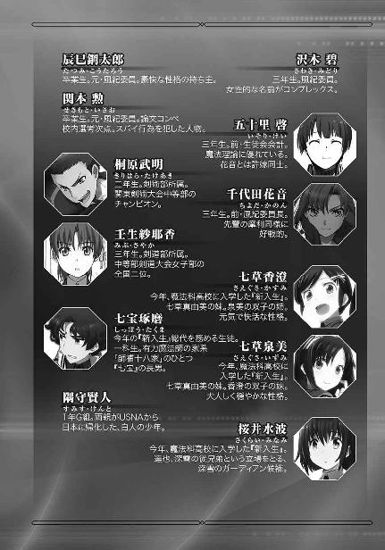
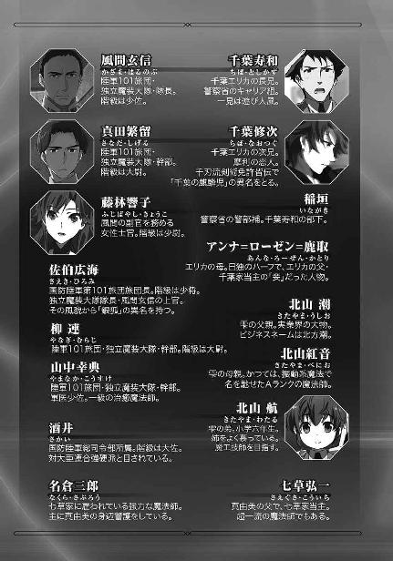
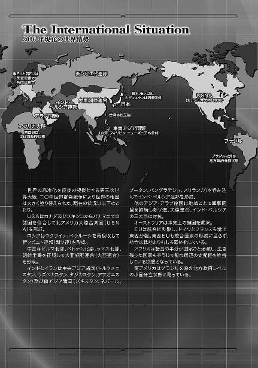

| 魔法科高校の劣等生(15) 古都内乱編〈下〉 (電撃文庫) | |
| 佐島 勤 | |
| 株式会社KADOKAWA (2016) | |
本書（電子版）に掲載されているコンテンツ（ソフトウェア／プログラム／データ／情報を含む）の著作権およびその他の権利は、すべて株式会社ＫＡＤＯＫＡＷＡおよび正当な権利を有する第三者に帰属しています。
法律の定めがある場合または権利者の明示的な承諾がある場合を除き、これらのコンテンツを複製・転載、改変・編集、翻案・翻訳、放送・出版、公衆送信（送信可能化を含む）・再配信、販売・頒布、貸与等に使用することはできません。





上巻のあらすじ
二〇九六年の全国高校生魔法学論文コンペティションを間近に控えた九月下旬の日曜日。達也の許へ黒羽の双子が訪れる。彼らは四葉家当主・四葉真夜の書状を携えていた。書状の内容は「横浜から逃亡した周公瑾の捕縛に関する協力依頼」。命令ではなく依頼であることを訝しみながらも、達也は京都・奈良方面へ逃れた周の足取りを追う為、奈良に本拠を構える九島家を訪れる。そこで達也たちは深雪と同質の美貌を持つ少年魔法師、九島光宣に出会う。
光宣の案内で周公瑾を匿っている古式魔法師集団「伝統派」の拠点を探る達也たちの前に立ちはだかる伝統派の古式魔法師と大陸の道士。一方、七草家当主・七草弘一は周公瑾と内通していた事実をもみ消す為、腹心の名倉に周の暗殺を命じる。京都の桂川河畔で死闘を繰り広げる周と名倉。斃されたのは名倉だった。
突然もたらされたボディガードの訃報に、真由美はその真相を確かめるべく動き出す。
［６］
西暦二〇九六年十月十五日、放課後。論文コンペを二週間後に控えた第一高校の校舎内の其処彼処に、その準備作業による喧騒とは趣を異にする密かなざわめきが生じていた。
彼らが話題にしているのは突然の来訪者。二、三年生にはお馴染みの、一年生でも知らぬ者はごくわずかという有名ＯＧだ。
その当人、七草真由美は来賓用の応接室に案内されていた。学校側は彼女を元生徒会長としてではなく、十師族・七草家令嬢として待遇することに決めたようだ。その真由美の相手をしているのは現在、達也一人。これは彼女の指名によるものだった。
「ごめんなさいね、達也くん。一高に来るのが一番無難だと思ったものだから......」
真由美がそう言って頭を下げたのは、外の騒ぎに気づいているからだろう。彼女の固有スキルは聞くことではなく見る方だから、生徒の噂話が聞こえていたわけではない。だが、応接室に案内される途中で向けられたチラチラと窺い見る視線から、自分たちが今頃好奇心の的になっていると推測するのは、彼女でなくても難しくなかった。
「いえ、気にしないでください」
達也も自分たちが邪推の種になっているのは認識している。だが真由美に答えた彼の言葉は慰めでも気休めでもなかった。確かに学校へ訪ねてこられたことで、鬱陶しい噂話を七十五日間ほど覚悟せねばなるまい。しかし自宅に押し掛けられるよりは良い。達也の自宅には他の十師族に見せたくない物が山のようにある。もちろん、無造作に転がして置いてあるような物は一つもないが、真由美の目ならばふとしたはずみに見られてしまうリスクを無視できない。
達也に用があるなら学校に来るより彼の自宅へ押し掛けた方が真由美としては都合が良いはずなのだ。住所を調べるくらい彼女には簡単だろうし、根も葉もないゴシップを気にしなければならない立場なのは達也よりむしろ真由美の方だ。それなのに学校へ面会に訪れたのは、達也に気を遣ったからに違いない。──その程度のことは、達也にも理解できた。
「その......調子はどう？」
柄にもなく、真由美は随分緊張しているようだ。
あいさつにも前置きにもなっていないそのセリフを聞いて、達也はそう思った。あるいは、余程言いにくい用件なのだろうか。
このままでは徒に時間だけが過ぎていくおそれがある。そんな懸念を覚えた達也は、自分からきっかけを作ることにした。
「今年の論文コンペは当日の会場警備がメインですからそれほど忙しくありません」
「そ、そうなの？ 達也くんが発表メンバーに入っていないなんて、ちょっと意外......」
「ええ。ですからご相談の内容次第では、お力になれるかもしれませんよ」
達也は、真由美が自分に、ただ会いに来ただけとは端から考えていない。彼と真由美は「会いたいから会いに来た」で相手を納得させられる親密な関係ではないのだ。単なる先輩・後輩とも言えないが、だからこそ彼女が達也に会いに来るには、何か明確な目的があるはずだった。
「......そうね。時間を無駄にしても仕方がないか」
真由美の瞳は、まだ躊躇いに揺れていた。だが本人も言っているように、このままでは時だけが無為に流れていく。そして真由美も達也も、自由になる時間は有限だ。彼女は目的があって達也に会いに来たのだから、それを伝えもせずに一高からすごすごと立ち去ることなどできようはずもなかった。
「達也くんは、名倉さんのことを覚えてくれているかしら」
「ええ。このたびはご愁傷様でした」
「お気遣い、恐れ入ります......。達也くん、名倉さんのこと、知っていたんだ」
「地方版の新聞を見ました」
「そう......論文コンペの会場警備に備えて地元の情報を集めているのかしら」
「まあそんなところです」
「......じゃあ」
真由美の短い沈黙は、頼み事の本題を口にするかしないか、最後の迷いを振り切る為のものだった。
「名倉さんの死因については知っている？」
「他殺としか」
「それ以上の情報は公開されていないものね」
真由美の浮かべた苦笑いは、意外にあっさりしたものだった。
「そうよ。名倉さんは何者かに殺された。私には、その犯人が誰だか分からない」
真由美の言い回しに、達也は軽い疑問の表情を浮かべた。
「私には、と仰いますと？」
「父は」
真由美はそこで一旦言葉を切った。だが彼女は既に、躊躇を捨てていた。
「父は、名倉さんを殺した犯人を知っている」
達也は驚きを隠さなかった。
「お父上がそう仰ったのですか？」
「いいえ。でも父が知っているのは、少なくとも心当たりがあるのは確実よ。名倉さんは父に命じられて、秘密の仕事で京都に出向いていたんだから」
「秘密の仕事で京都に、ですか......」
達也に馴染みのある表現を使うなら「裏の仕事」、つまり非合法あるいはそれに近い仕事ということだろう。
「これもはっきり聞いたわけじゃない。父は『ある仕事で』としか言わなかった。『私が知る必要は無い』とも言ったわ」
「なるほど」
それは「裏の仕事をやらせていた」と言っているのと同じだ。多分、七草弘一にも隠すつもりはなかったのだろうと達也は解釈した。
「それで先輩は、どうしたいんですか？」
この質問は、真由美にとって、決して不意討ちではなかった。だが達也のストレートな言葉と、それ以上に彼女の瞳を真っ直ぐ貫く眼光に、真由美は少なからずたじろいでしまう。
それでも真由美が俯き黙り込んでしまうようなことはなかった。彼女は使命感、あるいは義務感のようなものに突き動かされて、達也の視線を受け止めた。
「真相を、知りたいの」
「犯人を突き止めたいと？」
「──ええ、そうよ」
答えが返ってくるまでに、わずかなタイムラグがあった。しかしそれは真由美の躊躇いを反映したものではなく、逸る心を抑える為のものだった。
「正直に言うわ。私と名倉さんの関係は決して親密なものじゃなかった」
真由美の告白を聞いて、達也が無言で意外感を示す。しかし、すぐには口を挿まなかった。彼は目で続きを促した。
「私は名倉さんにとって、ビジネスの対象でしかなかったわ。私もあの人のことを自分のお目付役兼ボディガード以上の存在だと思ったことはない」
「それでも、犯人捜しをしたいんですか？ リスクは小さくないと思いますが」
達也は軽く真由美を挑発してみた。
返ってきたのは怒りを湛えた眼差しだった。
「勘違いしないで。甘い気持ちで言っているんじゃないわ」
「では何故です？」
「私のボディガードが、七草家の命令で命を落とした。死ねと命じたわけじゃないのは分かっているけど、そうなる可能性が高い仕事を命じたのだったら結果的には同じよ。私はその事実から目を背けたくないの。七草家の一員として、せめて事の真相は知っておきたい」
「ご立派です」
達也はそう言いながらため息を吐いた。
真由美が柳眉をつり上げる。
「しかし」
彼女が声を上げる、その機先を、達也が冷たい声音で制した。
「それが結局ご自分の自己満足にしかならないのは、先輩にもお分かりのはずだ」
「分かっているわ。でも、自己満足の何がいけないのかしら」
自棄になっているのではない、強い意志のこもった口調で開き直られて、達也もすぐには反論の言葉を思いつかなかった。
「今のままじゃ私は納得できないの。自分に満足できないの。七草家の長女ですって胸を張っていられないのよ」
「......七草家の長女として、ですか」
「そうよ。良くも悪くもそれが私の立場だわ。私はそこから逃げられない。だったら胸を張ってそう名乗りたい。これはおかしな考え方かしら」
「いいえ。おかしいとは思いません」
真由美の主張は達也にとって羨望と反発を同時に懐かせるものだった。
四葉の直系だと、深雪はまだ名乗れない。本来の素性を偽ることを強制されている。四葉家の一員であることが素晴らしいことだとも誇れることだとも達也は考えていないが、本当の自分を隠さなければならないのは哀しいことだと、感じるのではなく考えている。
そんな妹と比較して自分の生まれに誇りを持ちたいと語ることのできる真由美は、羨むべき存在であり妬むべき人物だと達也は考えた。
「そうですか。それで俺に何を？ 犯人を見つけろと言われても、俺には探偵のノウハウもなければ捜査に協力してくれる人員の伝手もありません。残念ながら、お役に立てないと思います」
しかしそういうあるべき感情とは別に、役に立てないというのは達也の本心だった。手掛かりが少なくない周公瑾の探索すら何処から手をつければ良いのか分からない状態なのに、どこの誰だか名前も分からない殺人犯の行方など探し方すら見当もつかなかったのだ。
「待って！」
達也の明確な拒絶にも拘わらず、真由美は席を立とうとする彼を呼び止めた。
「犯人はおそらく、横浜の件の関係者よ！」
彼女が発した制止のセリフには、達也をソファに押し留める効力を持っていた。
「横浜の件と仰いますと？」
達也は驚きを表情に出していないはずだ。
だが真由美は何を以てか、少し勝ち誇った顔をしていた。
「去年の横浜事変の関係者。ここ最近、名倉さんは中華街を探っていたみたいなの」
彼女は達也の興味を引くことに成功したと思っているのだろう。その理由は彼女の考えていたものとは違っていたが、達也が興味を覚えたこと自体は間違っていなかった。
「よくそんなことが分かりましたね」
「あの人、ボディガード以外の仕事で私の側を離れる時は、その仕事が終わった後にお土産をくれるのが習慣だったのよ。最近は中華街のお土産が多かったわ。私のことを小さな女の子と勘違いしているのかな、と思っていたけど......名倉さんは自分が何をやっていたのかヒントを残していたんじゃないのかって、今はそんな気がする」
「なるほど」
真由美はそうと意識していないかもしれないが、これは示唆に富んだ発言だった。
名倉の雇い主は七草弘一で、真由美は仕事の対象ではあっても雇用関係あるいは取引関係においては第三者、他人だ。
長女のボディガードで、裏の仕事を任せられていた──少なくとも、外聞を憚るような仕事に関わらせる程度には信頼されていた部下が、自分が何をさせられているのかについて他人に手掛かりを残していたということになる。
七草弘一は部下を掌握し切れていない。
あるいは、七草家には真の意味で腹心と呼べる部下がいない。
このことは、後々大きな意味を持ってくるかもしれない──。
そこで達也は七草家の内部事情について考えるのを止めた。
「仰るとおりかもしれません。名倉さんは横浜中華街に関係ある仕事に携わっていた。しかしそれが、横浜事変に関わるものだという根拠は無いと思いますが」
この時点で達也は真由美を自分の手伝いに加えても良いと考えていた。肉体的には非力な女性ではあるが、戦闘力は横浜の戦場で実証済みだ。それに大学生の彼女は高校生の深雪や水波に比べて時間の融通が利く。
彼の反論は、単に一度頭を冷やしてもらう為のものだった。前のめりになりすぎている真由美の心情に水を差して自分の思い違いである可能性を検討してもらう。その上で彼女が達也に協力を要請してくるなら、達也はそれを引き受けた形に持っていくだけだ。
「それは......そうだけど」
達也が指摘した程度のことは、彼女も考えていたらしい。真由美が気弱な態度をのぞかせる。
「......じゃあ達也くんは、横浜事変関係の相手だっていうのは私の思い込みだというの!?」
しかしそれはほんの数秒のことで、真由美は一転して開き直りとも取れる強気な態度を達也にぶつけた。
「そうは言っていませんよ」
達也は愛想笑いを浮かべながら真由美を宥める。
「先入観が強すぎると事実が見えなくなるかもしれない、ということです」
真由美から頰をプクッと膨らませているような空気が伝わってきた。......大学生になったことで、さすがにそんな表情を実際に浮かべるのは自重しているようだが。
「先入観と思い込みって同じじゃない......」
小声で呟いた真由美のセリフはしっかり達也の耳に届いていた。だが達也はこれを真由美の独り言として処理した。具体的には、聞き流した。
「......その程度のことは理解しているわ」
しかし自分に目を向けて放たれたこの言葉には、しっかり反応を返した。
「危険だということも理解されていますか？」
達也はこの言葉を口にするチャンスを待ち構えていた。
「ええ。それでも、私は何かをせずにはいられない」
真由美の回答には、引っ込みがつかなくなっている部分も感じられる。
「だから達也くん、お願い。力を貸して欲しいの」
だが、達也にとってはまるで構わないことだった。真由美から強く望まれてそれに応えるという形をとることが、彼にとっては都合が良かった。
「──分かりました」
真由美がホッと気を抜いた表情を浮かべた。
顔にこそ出していないが、安堵しているのは達也も同じだった。
「具体的に、何をすれば良いのでしょうか」
「達也くん、警備の下見に京都へ行くでしょう？」
「はい、今度の土日に」
「その時に少し付き合って欲しいのよ。名倉さんが殺された現場を見ておきたいの」
最後の仕上げとなる質問に、真由美は注文どおりの答えを返した。
「それだけでよろしいのですか？」
達也としては現地の状況次第で、少しではなくしっかり付き合ってもらう腹積もりだった。
だがその質問は、するべきではなかった。
「......私にだって分かっているのよ」
達也は人でなしだが、自分の目的に関わらない領域ならば、他人の心情が気にならないわけではない。それなりに親しい相手が自分の言葉に落ち込むのを見るのは、あまり気持ちの良いものではなかった。
「私はまだ七草家の娘でしかなくて、自分自身には社会的な力なんて何も無いって。魔法師としての実力も才能も所詮は属人的なもので、警察を動かすことも警察の代わりに犯人を捜すようなこともできないって」
彼女のこぼした弱音は全くの事実であり、達也には掛けるべき慰めの言葉が無かった。彼が無頭竜に報復し侵攻軍に対処し得たのは独立魔装大隊という組織のバックアップがあったからだ。パラサイドール計画に介入できたのも九重八雲の協力と共に、独立魔装大隊からムーバルスーツの提供を受けられたことが大きい。
どの案件も、達也個人の力だけではあれほど上手く処理できなかった。それを達也は忘れたことがない。個人の力には限界があると身にしみて知っているが故に、安易な気休めは口にできなかった。
「最初に達也くんが言ったとおり。結局は、私の自己満足でしかない。そんなことで危険を冒すのは愚かしいことなのかもしれない。でも」
「分かりました」
達也は同じセリフをもう一度繰り返すことで、真由美の言葉を遮った。
「では二十一日、日曜日に。時間と場所は先輩のご都合に合わせます」
「......ありがとう、達也くん」
真由美はソファの上で深々と頭を下げた。
「じゃあ、時間と場所は明日にでもメールします」
「もう一つだけ、うかがっても良いですか？」
そう言って席を立とうとする真由美を、達也が引き止める。
「名倉さんの遺体は既に火葬されているのですよね？」
「え、ええ」
「亡くなられていたときに身に着けていた物は残っていますか？ 例えば、その時に着ていた服とか」
「警察が証拠品として保管したいと言ってきたから、そうしてもらっているわ。名倉さんはお身内がいらっしゃらなかったから、少しでも犯人逮捕の役に立てばと思って......」
「それを拝見することはできますか」
「......家に連絡をくれた刑事さんにお願いしてみます」
真由美の回答に、達也は軽く頭を下げる。
彼女が何か言いたそうにしていたので、達也は目で発言を促した。
「ごめんなさい。そんなに親身になってくれるなんて思わなかったから......」
「協力する以上は、できる限りのことをしますよ」
そう言って達也は、真由美に「ありがとう」を繰り返させない為に席を立った。
彼はこの短い時間で、名倉が周に殺された可能性も小さくないと考え直していた。七草弘一が名倉三郎を使って周公瑾の身辺を独自に調査していたという仮説は、決して荒唐無稽なものではない。可能性がゼロではないというなら、七草家の当主が周と内通していたという可能性すらもある。
名倉の遺品を見たいと言ったのは、そこに周公瑾へつながる手掛かりが存在するかもしれないと考えたからだ。決して、真由美に礼を言われるようなことではなかった。
真由美を正面玄関まで送った後、達也は生徒会室に向かった。
何故かそこには生徒会役員と現風紀委員長だけでなく、前部活連会頭の姿があった。
「お兄様、お疲れさまです」
「ああ、遅くなってすまない」
笑顔で立ち上がった深雪に手振りで座るよう指図して、達也は自分のデスクに向かった。チラチラと自身を窺い見る視線に彼は気づいていたが、自分から反応はしなかった。
「司波先輩」
達也に対して口火を切ったのは、それまで生徒会室に入ってきた彼に目もくれず端末と格闘していた泉美だった。
「何か分からないところでもあるのか？」
達也の反問は表面的に見れば妥当なものだ。だが実際には、終わったばかりの面会について訊きたいのだろうと予想しながらのセリフだった。
「違います！」
そしてその予測が外れているはずもなかった。
「お姉さま、いえ、姉はもう帰りましたのでしょうか」
「お帰りになった。もしかして用があったのか？」
「いいえ、そういうわけでは。ただ、その、姉は一体どのような用件で先輩のお時間を取らせてしまったのかと」
泉美のセリフが建前であることは明白だ。彼女は姉と達也が一体どのような話をしたのか知りたがっていた。
「気を遣わせてしまったか。泉美が気にする必要は無いぞ」
しかし達也を相手にそんな探りの入れ方では、建前を逆用されて話を逸らされるだけだ。
「先輩に気を遣ってなどおりません！」
その結果、泉美はむきになって言い返す羽目になる。そして、上級生から向けられる微笑ましげな眼差しに赤面するパターンだ。
顔を赤くして俯いた泉美に代わって質問役を引き継いだのは深雪だった。彼女は兄の顔を盗み見るような素振りを見せなかったが、達也が真由美と二人きりで会っていたことに関心が無いわけではなかった。いや、むしろ一番気になっていたと言って良いだろう。
「それでお兄様。七草先輩のお話は何だったのですか？ もしお差し支えなければお教えいただきたいのですが」
深雪がそう訊ねた直後、一斉に聞き耳を立てる気配がした。達也が室内を見回すと、目を逸らす逸らさないの違いはあるにしてもこの場にいる全員が達也の回答を待っていた。
「先輩もちょうど京都にご用があるらしくてね」
達也がそう告げると同時に、泉美がピクリと身体を震わせた。俯いたままの表情は分からなかったが、彼女が名倉のことを連想したのは容易に推測できる。ただ、ここで泉美に遠慮したり慰めの声を掛けたりするのはかえって逆効果だろうと達也は考えた。彼は何も気づかなかったふりで言葉を続けた。
「来週の下見に同行したいと言われた。先輩のご用というのが何なのか教えていただけなかったからお断りしたが、割と深刻なお顔をされていたな」
達也の結論を脚色した回答に、服部が小さく息をついた。服部もそういう懸念を懐いていたのは間違いない。
しかしそれを誤魔化すように、彼は達也へ殊更厳しい口調で食って掛かった。
「司波、深刻なご用事と分かっていて何故断った。警備の下見と言っても市内の様子を見て回るだけだろう。時間の拘束を受けているわけではないのだから、ご一緒するくらい邪魔にはならないはずだ」
この詰問を受けて達也が考えたのは、本当は自分が同行したいのだろうに生真面目な好青年というのも難儀なものだ、ということだった。馬鹿にするのではなく好意から綻びそうになる唇を、彼は意識して引き締めなければならなかった。
だが、彼を責める言葉はそれで終わりではなかった。
「達也さん、私もそう思います」
服部の詰責は達也の想定の内だったが、ほのかが服部に同調したのは彼の予想外だった。
「魔法大学には市原先輩も十文字先輩もいらっしゃるのに、わざわざ一高に来られたんです。達也さんのことを相当頼りにされていたんじゃないでしょうか」
ほのかの思惑が分からなくて、達也はすぐに返答できなかった。
達也が真由美と京都で会って、ほのかに何かメリットがあるとは考えられない。もし深雪が赤の他人なら真由美を当て馬に使うという発想も出て来るかもしれないが、深雪は実の妹だ。水波が達也から一歩退いているということも、普段の態度を見ていれば分かるはず。
もしかしたら──こんな考え方はほのかに失礼かもしれないが──純粋に真由美に対する同情からの発言だったのだろうか。
「達也、少し時間を割く程度で済むんだったら構わないんじゃないかな」
「......そうだな」
幹比古にまでそう言われて、達也は旗色が悪いことを認めないわけにいかなくなった。幹比古は周公瑾の捕縛という真の目的こそ知らないものの、京都下見旅行の裏にある対「伝統派」挑発作戦の共謀者だ。その彼から真由美に対する協力を促されて、それでもなお頑なに拒むのはいらざる不審感を懐かれそうだった。
それにこれは、達也にとっても都合の良い展開だった。真由美と一緒にいる理由ができれば、偶然を装って合流する必要も無い。
彼女がどの程度役に立つか、達也は実のところ大して期待していない。だが人手は、一人でも多い方が良い。彼に求められている役割は周公瑾の捜索そのものではなく、見つけた後の処理だと達也は考えている。だが、真夜からの依頼内容が「捕縛の協力」であり見つけなければ捕縛もあり得ない以上、捜していたというポーズだけでも取り繕っておく必要がある。その為には、人を多く集めるほど見栄えが良い。
「謝罪も併せて、先輩には俺の方から連絡してみよう。泉美、俺が先輩に連絡しても構わないか？」
「何故私にお訊ねなのですか？」
泉美が少しムッとした声で反問する。彼女は達也の問いが自分をシスコン扱いしているが故のものと敏く感じ取っていた。
「泉美が七草先輩の身内だからだが」
しかし、下級生の女の子が機嫌を損ねた程度で達也をたじろがせることはできない。
「私の許可など必要ありません。先輩のご自由に為さってください」
達也の可愛げない回答に、泉美は可愛くそっぽを向いた。
◇ ◇ ◇
旧長野県との境に近い旧山梨県の、山々に囲まれた狭隘な盆地に存在する名も無き村。この地図にも載っていない小さな山村こそが、世界中の魔法関係者に悪名を轟かせている四葉家の本拠地だ。
村の中央に位置する、広い敷地内に複数の離れを持つ一際大きな平屋建ての屋敷が四葉家の本邸。その一室で、屋敷の女主である四葉真夜は腹心の執事、葉山の報告を受けていた。
「......奈良における顚末は以上でございます」
「国防軍情報部ねぇ......」
真夜の艶やかな紅唇に嘲笑が浮かんでいる。それが少しも下品ではない。むしろ高貴なたたずまいすら醸し出していた。
「何処の部署が介入してきたのか、調べはついております。もし目障りだとお考えでしたら」
「構わないわ。国防軍にも面子があるでしょう？ 多少の出しゃばりくらい、見逃してあげないと」
嘯く主に、老執事が恭しく一礼する。国防軍を格下と見る真夜の態度に、葉山は如何なる疑いも持っていなかった。
「それより達也さんの方だけど」
真夜の関心はすぐに国防軍から離れた。といっても元々真夜と葉山は達也のことを話していたのだから、話題が戻っただけだ。
「今のところ真面目に働いているのね？」
「はい。開発中の新魔法についても特に隠し立てすることはなく、反抗的な部分は見受けられません」
「新魔法ね......近距離物理攻撃の魔法ということだけど、どのようなものか推測はつきますか？」
「あくまでも推測でよろしければ」
「構わないわ。葉山さんの考えを聞かせてちょうだい」
真夜は好奇心を隠さず、葉山に訊ねた。
実戦に出ることも無く交渉事に出ることも稀な真夜は、普段屋敷に引きこもっている状態だ。ただ、暇を持て余しているわけではない。もちろん、淫楽に耽っているということもなければネットでゲーム三昧ということもない。彼女は魔法師の性能向上を最重要課題とする四葉の一員として、魔法研究に主な時間を費やしていた。
そんな彼女にとって、達也が新魔法を開発しているという情報は純粋に好奇心をそそられるネタだった。
「アンジー・シリウスの『ブリオネイク』を参考にしたという話と、『バリオン・ランス』という名前から察するに、物質を陽子・中性子レベルに分解して射出する粒子砲の一種ではないかと思われます」
「荷電粒子砲なのかしら」
「それならば新魔法ではなく『ブリオネイク』の再現と、達也殿ならば言われるのではないでしょうか。むしろ中性子砲の可能性が高いと愚考します」
「中性子砲ね......。ニュートロンバリアは既に魔法として完成の域にあるのだけど、達也さんのことだからそこも当然考えているでしょうね」
楽しそうに推理を重ねていた真夜が、ふと気になったという顔で言葉を切った。
「......『バリオン・ランス』。『ランチャー』でも『キャノン』でも『ガン』でもなく『ランス』なのは何故かしら」
それは葉山も気になっていた箇所だったが、どう答えるかは問われる前から決まっていた。
「そこまでは分かりかねます。ただ、慶春会の席でご披露くださるということでしたので、実際にご覧になるのが一番かと」
百聞は一見に如かずということわざを引き合いに出すまでもなく、憶測を重ねるより実際に観測する方が手早くもあり賢明でもあるということくらい真夜にも分かっている。ただ、お預けにあったような印象は拭えず、ついつい意地の悪い質問が彼女の口をついて出た。
「詳細を訊ねなかったのは何故？ あの子が本当に従順なのかどうか、試してみるにはいい材料だったと思うのだけど」
「おそれながら、奥様の目的の為にはそこまで確かめる必要も無いと存じましたので」
しかしこれは、真夜にとって藪蛇だったかもしれない。葉山のたしなめる口調に、真夜は見えるか見えないかのジェスチャーで肩をすくめる。
「目的と言うほどご大層なものでもないのだけど」
葉山が自分を見詰める視線に、真夜は何となく言い訳しなければならないような気にさせられた。
「私の甥だからという理由ではないわ。あの子を排斥するのは、四葉の利益にならない」
「実の甥御様だからという理由でも差し支えないかと存じますが」
「葉山さん......」
「失礼いたしました」
咎めるように彼の名を呼ぶ真夜に、葉山は恭しく一礼した。ただ、このような場合に適切な謝罪の文句ではなかった。本来であれば「口が過ぎました」とか「差し出口、お許しください」とかそのようなフレーズが使われる場面だ。
葉山が自分のセリフを「差し出口」と言わなかったのは、真夜の頰が微かに赤らんでいることと無関係ではなかった。
「葉山さん」
真夜の部屋を辞した葉山は、彼の住まいにと貸し与えられた離れに向かう途中の庭で、背後から声を掛けられた。
気配が感じられなかったことに、動揺は無い。この村では、気配を風や闇に同化させる程度の技能の持ち主など珍しくもない。
それに、背後から掛けられた声は葉山にとって馴染みのものだった。
「黒羽様。お見えになっていると気づきもせず、申し訳ございません」
少なくともこの程度の嫌みを口にできる程度には親しくもあった。
皮肉られた黒羽貢の方は不快げに顔を顰めたが、彼の方も無論この程度で怒りを露わにすることはない。
「いや、こちらこそ失礼しました。気配を同化したままだったのに気づかなかった」
貢のセリフが噓か真か、葉山には判断がつかない。普段から影に徹している所為でそれが習い性になっているというのは如何にもありそうだし、逆に自分が気配を消しているか紛らしているか垂れ流しているか自覚できないようでは諜報工作の仕事など勤まらないとも思われる。
「いえ、お気遣いはご無用でございます」
ただ、それはどうでも良いことだった。黒羽貢が本気で気配を隠したなら、葉山は目の前に立たれても気づけないだろう。その気になれば何時でもこちらの死命を制することができる相手に細かいことで腹を立てても益にならない。それに、こちらの方が重要だが、黒羽家は四葉の有力な分家でありその当主である貢は葉山にとって仕えるべき相手の一人だ。主の気まぐれに一々気分を害するようでは執事失格である。
「して、黒羽様。私に何か御用ですかな」
「用といえば用だが......少し葉山さんと話をしたいのです」
葉山の眉がピクリと動いた。不快感を表したのだが、これは故意の感情表現だった。
「話がある......という意味でしょうか」
葉山が慇懃に微笑む。
貢は慌てて、否定の意味で両手を振った。
「いやいや、言葉どおりの意味です。少しお訊きしたいことと、相談したいことがあるのですよ」
「これは私の方こそ失礼しました」
葉山が闇の中で丁寧に一礼した。そこには、内心を窺わせる隙がまるで無かった。
「ではこちらへどうぞ」
葉山がたった今出て来た母屋へ足を向ける。四葉家に仕える執事の筆頭である彼には、母屋の応接室をある程度自由に使う裁量が与えられている。そうでなくても黒羽家の当主から相談を受けるに当たり一室を使って咎めを受けるはずがなかった。むしろ立ち話を続ける方が後で責められることになるだろう。
だが、貢は葉山の常識的な対応に従わなかった。
「いや、葉山さんさえ構わなければ、ここで」
足を止め、振り返り、葉山が訝しげな眼差しを貢へ向ける。
貢は自分に射掛けられる不審感を無視した。
「葉山さんがご当主様と話されていたのは、あの男──周公瑾の件ではありませんか」
貢の言葉を聞いて、葉山はなるほどというように頷いた。
「ご自分の御仕事に手を出されては、気になさるのも当然ですな」
「あっ、いや......」
自分のセリフをかなり情けない方向に曲解されて、貢は慌てて打ち消そうとした。
「ですが、ご心配には及びません」
だが葉山は、その暇を与えなかった。
「黒羽様におかれましては、深雪様のガーディアンに現在試しが与えられていることをご存じと思います」
貢が本気で顔を顰めた。
「......知っています」
その試しとやらは息子たちが達也を訪問した九月下旬からではなく、八月のあの日に始まっていた。その所為で貢は達也に、最低に近い醜態を見られたのだ。隻腕とならずに済んだことは感謝しているが、プライドを深々と抉られたのはまた別の話である。
「私はその経過報告をしていたのですよ。深雪様は有力な当家の次期当主候補ですからな。あの方のガーディアンが四葉に対して反旗を翻す可能性が無いかどうか、その見極めは今後の四葉家の為に欠くべからざることです」
貢はますます不快感を露わにしていたが、葉山はそれをまるで斟酌しなかった。
「極めて重要なことですので、黒羽様には失礼かとも存じましたが、今回の件を判定材料に使わせていただきました」
「あの男が四葉家に対する忠誠心など持っているはずがない」
貢が吐き捨てるようにそう言った。その言葉もその表情も、深雪や達也本人の前では決して見せない貢の本音だった。
「黒羽様が何を以てそのように断定されるのか私には心当たりがありませんが......」
差し支えなければ教えてください、と葉山が目で問い掛ける。
だが、貢はその眼差しを黙殺した。
それを気にした様子も無く、葉山は飄々とした口調で自ら答えを紡いだ。おそらく、彼以外には口にできない辛辣なセリフで。
「達也殿は、ご自分が生まれてすぐ、一族の手で殺されそうになったことなどご存じありません故、それをご懸念でしたら疑心暗鬼というものでございますよ？」
「葉山！」
貢が葉山に対する丁寧な態度をかなぐり捨てる。
それは貢たちの世代がずっと口を噤んできたことだった。四葉の血統である「椎葉」「真柴」「新発田」「黒羽」「武倉」「津久葉」「静」の七家の者以外でこれを知っているのは葉山のみ。四葉の血を受け継ぐ者であっても、二十代以下には知らされていない秘事だ。黒羽貢が思わず冷静さを失っても仕方の無い不意討ちだった。
葉山は自分に向けられた殺気を、慇懃な笑顔で吞み込んだ。
「あの方が四葉家に忠誠心を懐いていないことなど、そして今後も同様であろうことなど、私にすら分かっております。まして奥様がお気づきになっていないはずなどございますまい。その上で奥様は、あの方に深雪様の御身をお任せしているのです」
貢がギリッと奥歯を嚙み締めた。
貢が探りを入れる為に始めた会話が、いつの間にか葉山による糾弾の場に変わっていた。
「黒羽様。忠誠心など無用なものなのですよ。意味があるのは行為だけです。たとえ面従腹背であろうとも、立場を裏切らず期待を裏切らず結果で裏切らなければ、結果を出せない忠義者より有用なのです。道具に忠義は必要ありません。兵器に心は不要です」
「貴様、魔法師を兵器と言うのか......!?」
「お忘れかもしれませんが、私も魔法師でございます」
皆様に比べれば微力も良いところですが、と葉山が気軽に笑う。
貢は重い沈黙に囚われた。
「兵器は恐れを懐きません。兵器は不安を懐きません。ただそうなる可能性があるという不安だけで、無垢なる者を殺そうとする人の心は、果たして心無き兵器に優るものでしょうか」
貢の心に深く楔を打ち込んで、葉山は一礼し、その場を去った。
◇ ◇ ◇
十月十九日、金曜日。今年の論文コンペまで、今日を含めて正味十日。発表の準備はいよいよ大詰めを迎えていた。
今年は去年と違って校内で不審な出来事は起こっていない。去年が特別だったのであって、今年は正常化しただけとも言えるのだが、そのお蔭で余計な人手をとられることもなく、作業は本番へ向けてスケジュールどおりに進行していた。
達也たちの身辺周りについてもここ十日ほど平穏を保っている。おそらく、八雲の弟子たちの頑張りに加えて、葉山が花菱執事を通じて手配した傭兵部隊の暗躍が効いているのだろう。花菱は四葉家の使用人序列第二位で、四葉家が請け負う荒事に関わる様々な手配──その中には人員の手配も含まれる──を担当している執事。その仕事に手抜かりはないはずだ。
四葉家の魔法師は、人数でいうなら実はあまり多くない。四葉の血を持つ者に限ったことではなく、四葉家の配下にあって何時でも自由に使える魔法師も十師族の他家、七草は元より一条や五輪に比べても「少ない」と表現する方が正確だろう。
四葉の魔法師は数の劣勢を覆す実力の持ち主ばかりだが、数こそが物を言うという場面も時に生じる。そういうケースに備えて、四葉は外部に使い捨ての協力者を組織していた。
国家に対して重大な反逆行為を働いた、あるいは働こうとした魔法師。国家に対して直接的な敵対行動こそ取らなかったものの、軍事的に利用可能な魔法技能を国外の勢力に流出させようとした魔法師。そうした国家に対し背信行為を働いた魔法師たちの粛清は、四葉家に依頼されることが多い。
この仕事は四葉家の重要な収入源となっている。そして金銭面だけでなく、四葉家はこの仕事を通じて戦闘員も調達していた。捕獲した反逆魔法師を洗脳して手駒にするのだ。
無頭竜が使っていた「ジェネレーター」のように意思を奪うことはしない。意思と感情が魔法の威力に直結することを四葉家は良く知っていた。
彼らが行う洗脳はもっと古典的なものだ。「四葉」に対する恐れをひたすら刷り込み、逆らえば死あるのみと思い込ませる。イデオロギーを死の恐怖で塗りつぶす。本当の意味で死を恐れていない狂信者は最初から相手にしない。死を恐れる者に対してのみ取引を持ち掛ける。「働き次第では生きたまま自由にしてやる」と。
そうして己が命を報酬として得る為に命懸けで任務を果たす魔法師傭兵部隊を、四葉は様々な仕事で使い分けている。今回の護衛任務はおかしな動きを見せた魔法師を片っ端から拉致するという、まさに頭数が物を言う仕事内容だった為に、四葉家は洗脳済み魔法師のストックを使い切る勢いで大量に投入していた。その甲斐あってか、達也の友人たちの身辺だけでなく一高の周りはほぼ完全な凪の状態になっているのだった。
幾ら論文コンペの準備作業という名目があっても、女子生徒を夜遅くまで学校に残らせるわけにはいかない。男女区別だろうが男女差別だろうが関係なく、男子生徒には許されている閉門後の夜間作業も女子生徒には認められていなかった。
今日も、もうすぐ閉門時刻になる。生徒会でも後片付けが始まっていた。もっともこの時代はペーパーレスなので、書類をキャビネットに戻したり鞄に詰め込んだりといった百年前の「後片付け」とはかなり様子が違う。バタバタと慌ただしく動き回る必要はまるでなく、下校の準備はすぐに整う。
「......深雪先輩、お先に失礼いたします」
明日の土曜日、深雪は学校を休んで京都へ出掛けることになっている。その引継ぎ書を作成する為、彼女は下校時刻の延長を申請していた。泉美が先に出ていったのはそういう理由だ。
「泉美ちゃん、明日と明後日はお願いね。頼りにしているわ」
「光栄です！ 及ばずながら、微力を尽くします！」
泉美は扉の所で名残惜しそうにグズグズしていたが、深雪にそう声を掛けられて一転、上機嫌で帰路についた。
「深雪も泉美ちゃんの扱いに随分慣れてきたね」
自分の端末を落として立ち上がったほのかが、苦笑いを浮かべている。
「悪女の素質がある」
ほのかと一緒に帰るべく生徒会室に来ていた雫がそれに便乗する。客観的に見れば聞き捨てならないセリフだが、雫に悪意が無いのは分かっているので深雪は笑ってこう言い返しただけだった。
「女の子が女の子相手に悪女も善女もないでしょう？」
「......深雪って罪作り」
雫が本気でため息を吐いても、深雪は笑って取り合わなかった。
今年の論文コンペにおける雫の役目はコンペのメイン発表者であるあずさの護衛だが、このところずっとほのかと一緒に帰っている。駅まではあずさも含めた大人数でいることも多いが、駅から先はほのかと二人だ。いや、本当はボディガードが陰から見守っているのだが、一応雫たちの目に触れぬよう行動しているので、少なくとも個型電車やコミューターの中ではほのかと二人きりだった。
「ねえ、雫」
個型電車の順番待ちをしている列で、ほのかが気遣わしげに雫へ話し掛ける。
「なあに？」
しかし雫には、ほのかに心配を掛けている心当たりが無い。不思議そうに首を傾げほのかを見詰めている所に、ちょうど二人乗りの車輌が二人の前に止まった。
四人乗りの車輌を待っている隣の三人連れに軽く会釈して電車に乗り込み、行き先を指定するカードリーダーにパスを翳して、雫は再度ほのかへ目で問い掛けた。
「うん......大丈夫なのかな、って思って」
「何が？」
「えっと、中条先輩の護衛......」
「あっ、そのこと」
雫が「なぁんだ」という表情で肩の力を抜く。
「中条先輩の方から言われたんだ」
「登下校の護衛は千倉先輩だけで良いって？」
親友だけあって、ほのかは雫が省略した部分を自分で補完した。
「やっぱり、同級生同士の方が良いんじゃないかな」
「うん......それは分かる気がする。下級生でも学年が違うと遠慮しちゃうとこがあるよね」
「香澄や泉美は例外だと思うけど」
「あ、あははは......。でもさ、水波ちゃんだって、何となくこう、壁があるというか」
「まあね」
ほのかの主張に、雫は一言で同意を示した。元々、同級生同士の方が気が置けないと主張したのは雫の方だからこれは当然だ。
「それに千倉先輩がいれば大丈夫」
「えっ？ あ～、そう言えば千倉先輩の魔法ってガード向きだよね」
「うん」
いきなり大丈夫と言われて今度はすぐに補完できなかったほのかだが、少し考えただけで雫の言いたいことが分かったのだからさすがは親友と言うべきか。
千倉朝子が得意とする魔法は「ベクトル反転」。撃たれることがあらかじめ分かっていたなら、対物ライフル弾を跳ね返すことも彼女の事象干渉力を以てすれば可能だ。不意討ちで狙撃されてはどうしようもないが──それは朝子だけでなく大抵の魔法師に言えることだ──例えば目の前で拳銃を向けられているといった状況には滅法強い。
それに彼女の魔法が通用するのは飛び道具相手だけではない。人間が突っ込んで来ても、その運動量を跳ね返す。普通乗用車程度までの質量なら余程の高速、例えば時速二百キロメートル超とかでない限り対処できる。
ほのかの言うとおり、千倉朝子は今年の一高護衛メンバーの中で一番ガードに向いている魔法特性の持ち主だった。
「それより、ほのかの方こそ大丈夫なの？」
「えっ......何が？」
まるで心当たりがないという顔のほのかを、雫がじっと見詰める。
個型電車の窓にもうすぐ降車駅に到着する旨のメッセージが投映される。
雫は「後でね」と言って、前を向いた。
雫がその話題を再開したのは、食事を終えてお風呂に入っている最中だった。
「ほのかは大丈夫？」
「えっ、何か言った？ ちょっと待って」
頭を洗っていたほのかが、お湯を止めて浴槽に浸かっている雫に顔を向けた。
「うん、髪が終わってからで良いよ」
「そう？ もうちょっとだから」
ほのかはもう一度しっかりとシャンプーを洗い流してから、防水シートでカバーされた収納ラックからタオルを取り出す。水気を吸い取るようにして髪を拭き、しっとりと水気を含んだタオルをメッシュ状のランドリーバッグに入れると、今度はリンスのボトルを手に取った。
「やってあげようか？」
「ううん、いいよ。雫にお願いすると、丁寧すぎて時間が掛かっちゃうんだもん」
「いいじゃない。やらせて」
雫がバスタブの外に出る。お湯を滴らせながら、少し強引にほのかの手からリンスのボトルを奪い取った。
「ほのかの髪、真っ直ぐできれい。羨ましい」
ほのかの湿った髪を撫でながら、雫が吐息を漏らす。
「私なんて......深雪に比べれば」
その真っ正直な賛辞に、ほのかは恥ずかしそうに少し俯いた。
「深雪と比べても意味が無い」
雫が大真面目に反論すると、
「それもそっか」
ほのかも可笑しそうにクスッと笑った。
雫が細かく束ねたほのかの髪に、リンスを優しく塗り込んでいく。
「それに私は、ほのかの髪の方が好きだよ」
「ええっ!? それは身贔屓、というか友達贔屓が過ぎるよ」
雫が漏らした感想に仰天したほのかだったが、
「友達だから贔屓するのは当たり前」
雫の開き直りに絶句してしまう。
「それに私の好みからすると、深雪の髪の色は重すぎる」
それとは対照的に、雫は珍しく雄弁だった。
「ほのかの明るい髪の方が私は好き」
「そ、そう？ ......ありがと」
小さな声で呟かれた最後の一言は雫の耳に届いたのかどうか。
しばらく、雫は無言でほのかの髪にリンスをして、ほのかも無言で雫に髪を委ねていた。
雫がシャワーヘッドを手に取った。
ほのかがギュッと目を瞑る。
雫がほのかの髪にまんべんなくお湯を掛け、シャワーの水圧でリンスを落としていく。
雫が先ほど浴槽の中から話し掛けた話題を再開したのは、彼女が約束したとおりほのかが髪を洗い終わった後だった。
ほのかと雫が向かい合って浴槽に入る。雫の家のお風呂は広く、セカンドバスルームにも拘わらず一般家庭の二倍ほどの面積がある。バスタブもそれに応じた大きさの物で、二人が一緒に入っても十分に余裕があった。
「ほのか」
「うん？」
「ほのかは、大丈夫なの」
「えっ、何が？ それ、さっきも言ってたけど......」
雫がまたしてもほのかの顔を表面から見詰めた。
どうやらほのかは惚けているわけではなさそうだ、と判断して、雫は質問に具体性を持たせることにした。
「ほのかは東京にお留守番で本当に大丈夫なの？ ほのかも京都に行きたいんじゃなかったの？」
ほのかが息を吞んで凍りついた。
肌が伝えてくるお湯の温度は変わっていない。だがほのかの硬直した身体、そして表情は、雫にまで肌寒さを錯覚させるものだった。
「それは......」
「ごめん、無神経だった」
唇まで青ざめたほのかから、雫は目を逸らした。
「......いいの。雫はずっと私のこと応援してくれているし、雫が疑問に思うの、当然だと思うから」
ちょっと待っててね、と言って、ほのかが深呼吸を繰り返す。心が落ち着きを取り戻すと共に、顔にも血色が戻って来た。
「ふう......雫、もう良いよ。こっち向いて？」
ほのかに促されて、雫が視線を戻す。二人は再び、正面から向き合う。
「本音を言うとね、もちろん達也さんと一緒に、京都に行きたかった。二人きりなんて贅沢は言わない。深雪と一緒でも構わない。達也さんと一緒にいられれば私は良かった」
「......じゃあ、何で？」
「足手纏いになりたくなかったから」
予想外の答えを返されて、雫がほのかの顔を見詰める。
ほのかは寂しげに、力の無い微笑みを浮かべた。
「雫だって気づいているんでしょう？ 達也さんが私に、雫の家でお世話になるように指示したのは、論文コンペの所為なんかじゃないって」
雫の瞳に理解の光が点った。
「達也さんが本気で私たちのことを心配してくれているんだもん。警戒している相手が、論文コンペの資料を狙う、単なるこそ泥のはずがない。それこそ去年の時みたいな、手強い敵がいるんだと思うの」
「ほのかは、達也さんが任務で動いていると思っているんだね？」
雫が自分の両肩を抱いてブルッと震えた。
ほのかがお湯をかき分けて雫の隣に移動した。
こうして横に並ぶと、注文生産で作らせた浴槽もさすがに手狭だ。
ピタリと密着した態勢から、ほのかが雫の肩を抱いた。
雫が、自分の肩を抱いていた両手を下ろす。
「うん......。達也さんは国防軍の任務に就いていらっしゃるんだと思う。しかも相手は、相当大規模な組織じゃないかな。私たちが人質に取られる可能性を否定できないくらい」
「だからほのかにボディガードをつけさせたってこと？」
「私だけじゃないよ。私に護衛がつくってことは、私と一緒にいる雫も守られる対象に含まれるんだから。美月に吉田君がくっついているのもそういう理由だと思う。吉田君の実力はプロ顔負けだから」
「役得だね」
「本当にね」
二人の少女は裸のまま身体を寄せ合ってクスクスと笑った。
しかしすぐに、ほのかの笑い声がフェードアウトする。
ほのかの笑い声が途絶えたことで、雫も笑うのを止めた。
「今度の京都行きも、警備の下見はついでだと思うんだ。本当の目的はきっと別にある。成り行き次第では荒っぽいことにもなるんじゃないかな。だって達也さんが選んだ明日の同行メンバーは実戦向きの人ばかりだもの。水波ちゃんだってあの障壁魔法は、いざという時にとても役に立つだろうし」
「ほのかだって中々のものだと思うけど」
「ううん、私は駄目。遠くから支援するだけならともかく、直接襲われたら達也さんの足を引っ張っちゃうもの......」
一般的な魔法師のレベルから言えば、ほのかの戦闘力は決して低くない。少なくとも高校生のレベルでは一流といっても過言ではないだろう。しかし一般的なレベルで見ても超一流な深雪や、戦闘面に限って評価すれば軍の魔法師としても一流以上であるに違いない達也と比べれば、直接的な戦闘力で一ランクも二ランクも落ちるのは親友の雫でも否定できない。だから雫にも、それ以上の気休めは口にできなかった。
「だから良いの」
ほのかは気まずそうに黙り込んだ親友の頭を抱え込んだ。
お湯の上に半分近く顔を出しているほのかの胸に雫の顔が埋まる。
「ふぉのか、ふるひひ」
「ひゃあ!?」
ほのかがくすぐったそうな悲鳴を上げて雫の頭から手を放す。
雫は口と鼻を解放されて、大きく息を吸った。
恨めしそうにほのかの顔、ではなく胸を凝視する雫。
「ご、ごめん！」
謝りながら胸を手で隠してバスタブの壁に貼り付くほのか。
二人は同時に「プッ」と噴き出した。
気まずい空気はその瞬間に何処かへ消え失せていた。
「雫、ごめんね」
「私の方こそ、ごめん」
「ううん、雫は私のことを思って言ってくれたんだもん。さっきも言ったとおり謝る必要なんてないよ」
ほのかはそう言って、屈託無く笑った。
「私も本当は京都についていきたい。でも足手纏いになりたくないのも本音。だから今回は東京で大人しくしている。達也さんが気づいて欲しくないと思っているなら、気づかないふりをする。達也さんの望んでいるとおり、騙されておくよ」
ほのかの言葉に、雫が暖かな笑みを浮かべた。
「ほのか、いい女だね」
ほのかの余裕ある態度が瞬く間に崩れる。
「な、何言ってるのよ!?」
「私が男の子だったら、ほのかを放っておかないのに」
「あのぅ......雫さん？ 目が怖いんですけど？」
「スタイルだって良いし......ルックスだって親しみやすい感じで可愛いし......」
雫の細い指がほのかの顎をツツッと撫でた。
「し、雫!? 何だかエイミィみたいだよっ!?」
「むっ。エイミィより胸はある」
「そんな問題じゃないよ！」
「それはもしかして、自分と比べれば大差が無いと言いたい？」
「そんなこと言ってない！」
「どれどれ」
「きゃあっ！」
「......分かっていたけど、理不尽」
「ちょっ、雫、お願い、止め......」
......この時ここで何があったのか、明記することは憚られる。ただ、この日は二人ともお風呂ですっかりのぼせてしまった、とだけ記しておくことにしよう。
［７］
十月二十日、土曜日の朝。
芸術系の学校では週五日制の所も残っているが、今の高校は週六日制が一般的だ。魔法科高校も月曜日から土曜日までしっかりカリキュラムが詰まっている。
いつもであれば教室の端末に向かっているか、実習あるいは実験中の時間、達也は深雪と水波を連れて京都へ向かっている最中だった。
ずる休みではない。公休扱いだ。名目は論文コンペの下準備。今回はリニア特急ではなくトレーラーを使っての移動だった。
トレーラーは簡単に言えば一階にキャビネットを収納し二階に乗客用のアメニティスペースがある二階建ての連結電車だ。浮上走行していないだけで動力はリニアモーターだからスピードはリニア特急にそれほど劣るものではない。
車輪は金属製で、金属軌道上を走る。リニア特急や個型電車に比べて「鉄道」の意味を忠実に残している形態だ。
乗車の段取りはまず、トレーラーから駐車用のパレットがスライドして個型電車の軌道上すれすれに突き出す。速度はトレーラーの方が速いので、個型電車の後ろから接近することになる。そして駐車用のパレットが後ろから個型電車の車輌をすくい上げる。その後パレットは再びスライドしてトレーラーに収納される。こうして乗客は個型電車ごとトレーラーに乗車するという仕組みだ。個型電車の車輪は車体を支えているだけでそれ自体が動力機関につながって回転しているわけではないから、こういうやり方が可能になるのである。
達也たちはトレーラーに乗り込んですぐ、個型電車を降りて二階のアメニティスペースへ向かった。せっかく手足を伸ばせる場所があるのだから、幾らプライバシー確保に優れているとはいえ狭い車内にこもりきりはもったいないと考えたのである。
幸い、リラックスチェアは空いていた。達也と深雪が隣り合わせ、水波が深雪の前の席を回転させて向かい合わせに腰を下ろす。
「何か飲むか？」
達也が肘掛けから引っ張り出したオーダー用端末の画面を深雪に見せながらそう訊ねた。
「......すみません、お兄様。ではこれを」
達也に注文を取らせていることに恐縮しながら、深雪は自分で端末を操作した。達也は水波にも画面を見せようとしたが、水波は既に自分のシートから端末を取り出している。むしろ彼女の方が自分にディスプレイを向けようとしていたのを見て、達也は笑いながら端末にオーダーを打ち込んだ。水波はそれを見て多少不満そうだったが、自分も注文を済ませる。
一分もしない内に、飲み物が届く。天井を走ってきたロボットアームがトレイを三人の前に下ろした。これは一般家庭で使われているＨＡＲ（ホーム・オートメーション・ロボット）と基本的に同じ仕組みだ。
リユースを前提とした樹脂製のカップを達也、深雪、水波の順番で手に取ると、トレイを持つアームが天井に戻る。一口、二口と喉を潤し三人がカップをサイドテーブルに置いた。
達也に背後から声が掛かったのは、その直後だった。
「あれっ、達也くん？」
達也たちがカップを置いたのは、彼女が近づいてくるのに気づいていたからでもあった。
「おはよう、エリカ」
答えを返したのは深雪だった。
「エリカもこのトレーラーだったんだな」
達也の前の席に来たエリカに、達也がそう話し掛ける。
「ホント。すっごい偶然だねぇ」
エリカが上辺ではない驚きを見せながら頷いた。トレーラーは都市間軌道を等間隔で走っていて、遠距離を移動する個型電車は最寄りのトレーラーに乗り込む。そのコントロールは交通管制システムが行っていて、どのトレーラーに乗車するか、旅行客が選ぶことはできない。
しかし、実はそれほど驚くべきことでもない。目的地・到着予定時刻が同じであるなら、同じ時間に同じ地域を走っているトレーラーと合流することになるわけで、同じ車輌に乗り込む確率はぐんと高くなる。エリカが達也たちの乗るトレーラーに後から乗り込んできたのは、高い蓋然性の下における偶然によるものだった。
エリカも達也たちに倣って飲み物を注文し、リラックスチェアの上で大きく伸びをした。
「うーん、手足を伸ばせるってやっぱ、良いね」
「エリカは個型電車が窮屈だと感じるタイプなの？」
個型電車のキャビンは車体のサイズに比してゆったりと作ってあるが、それでも窮屈に感じる人々が一定割合でいる。エリカの態度から彼女もそのタイプなのかと深雪は考えたのだ。
「うん？ そんなことないよ。これでも狭い部屋に正座で何時間も座っている鍛錬とかもしているしね」
「剣術にそんな鍛錬があるのね」
意外だ、という表情で深雪が驚きを表すと、エリカが苦々しげに顔を顰めた。
「剣術の修行だってクソ親父は言い張ってるんだけどね......」
女の子らしからぬ言葉遣いに、達也と深雪が顔を見合わせる。エリカは一見がさつなようでいて、実は随所に育ちの良さを感じさせる少女だ。「バカ兄貴」程度の憎まれ口はともかく、「クソ親父」のような汚い言葉は本人も好まないはずだった。
「剣術じゃないの？」
気にはなったが、アイコンタクトで結局、立ち入ったことを訊ねるのは止めようという結論になった。家庭の事情を訊かれたくないのはお互い様だ。
その代わり深雪が訊ねたのはこれだった。エリカの口振りからして、もしや「お稽古事」の類だろうか。エリカには似合わないようでいて意外と似合う気もする。
「お茶よ。茶道」
などと考えていたらずばり的中だったので、深雪はかえって驚いてしまった。
「茶道と武道を結びつけた古人は少なくないと思うが」
しかし、すかさず達也がフォローに入ったので、エリカは深雪が言葉を途切れさせるほど驚いたことに気づかなかった。
「まあね。きっと家の親父もその真似をさせているんだろうけど......だったらまず、跡取り息子にやらせるべきだと思わない？」
「それはそうかもしれんが」
「でも、それはちょっと酷だと思うわ、エリカ」
再起動した深雪が笑顔で割り込んでくる。
「お茶の教室のお弟子さんは、ほとんど女性なのですもの。お兄様方には門を叩きにくいのではないかしら」
「逆に、エリカが茶道を習っていてもおかしくないしな」
達也が付け加えた一言に、エリカが目を逸らした。
「えーっ、そうかなー。あたしがお茶って、柄じゃなくない？」
「そんなことはない。深雪が習いに行っている教室に招かれたことが二度ほどあるが、あの雰囲気はエリカに似合っていると思うぞ」
「......深雪ほどじゃないって思ってるでしょ」
そっぽを向いたままエリカの唇から零れた呟きに、達也は失笑を漏らした。それが拗ねているふりをした照れ隠しであることは一目瞭然だった。
京都駅の改札を出た所にレオと幹比古が待っていた。さすがにこの二人ともトレーラーが同じになるという偶然はなかった。エリカともトレーラーの中で一旦分かれて、それぞれ元の個型電車で別々に到着だ。
京都駅で合流した六人はすぐに宿泊予定のホテルへ向かうことにした。しかしコミューター乗り場へ向かおうとした達也は、背後から近づく覚えのある気配にその場で足を止めて振り返った。
「達也さん、深雪さん、水波さん」
「あら、光宣君？」
小走りに駆け寄ってきたのは深雪がその名を呼んだとおり、先々週出会った九島家の末っ子、九島光宣だった。
達也たちが自分に気づいたことに、彼の方でも気づいたのだろう。名前を呼ぶ声に躊躇いはなく、その輝かんばかりの美貌は笑みに彩られていた。
右隣から呆気に取られた気配が伝わってくる。横目で窺い見ると、エリカが目を丸くしていた。口まで小さく開いているから、余程驚いたのだろう。
「びっくり」
そう思っていると、本人からそれを認める言葉が放たれた。
「まるで深雪の男の子版だね......こんなに整った顔立ちの子が深雪以外にもいたなんて信じられない」
その意見には達也も同意だったが、本人を前にして言うセリフではないとも思った。
「光宣、迎えに来てくれたのか？ 予定ではホテルで待ち合わせだったはずだが」
「ええ、そうなんですが、このくらいの時間だとうかがっていましたので」
すれ違いにならなくて良かった、という素直な感想は嫌みになりそうだったので、達也は己の胸にしまっておくことにした。
代わりに口にしたのは、面識が無い者同士を引き合わせる紹介の言葉だ。
「皆とは初対面のはずだな？」
皆と言ったのは彼の右側に並ぶ友人たち。深雪は彼の左隣、水波はその背後に控えている。
「九島家のご子息、九島光宣君だ」
「はじめまして。第二高校一年の九島光宣です」
達也の言葉の後、光宣は自分でも名乗った。「九島家」ではなく「第二高校一年」の肩書きを使ったのは、十師族の一員としてではなく同じ魔法科高校生として接してくれという意思表示だ。
「あたしは第一高校二年の千葉エリカ。よろしくね」
ショックを受けても立ち直るのが早いエリカが、真っ先に自己紹介を返した。
「俺は西城レオンハルト。同じく第一高校の二年だ」
「吉田幹比古。僕も第一高校の二年生だよ。よろしくね、九島君」
「こちらこそよろしくお願いします」
光宣がエリカと幹比古の名前を聞いて軽く眉を動かしたのは、二人が千葉家の剣士と吉田家の術者であることに気づいたからだろう。心の裡を隠す対人技術は、魔法技能ほど上手くはないようだ。
まあ、少しは年相応ということか。
「光宣。俺たちは一旦ホテルに荷物を置いてくるつもりだが、一緒に来るか？」
「はい、そうさせてください。その方が時間を有効に使えます」
「そうだな」
達也は改めてコミューター乗り場へ足を向ける。その隣に深雪が並び、背後に友人たちが続く。光宣も水波と並ぶ位置で達也の後をついていった。
ホテルのチェックイン時間にはまだなっていなかったが、荷物は問題なく預けられる。このあたりのサービスは昔から変わっていない。
光宣を含めた達也たち七人が最初に向かったのは、論文コンペの会場となる京都新国際会議場だ。戦前は京都国際会館と呼ばれていた施設を二十年世界群発戦争終結後に建て替えた際、名称も国際会館から新国際会議場に変更された。
元々池と山に囲まれた自然豊かな立地だったが、建て替えの後もそれは変わらない。大型商業施設の建設は事実上禁止され、少し離れた所にあった小規模なスタジアムも老朽化に伴い取り壊されて樹木の多い公園になっている。
去年の横浜事変に先立ち発生した一連の事件で、外国の破壊工作員が拠点を構えていた様な老朽化したビルの類は、新国際会議場の周辺には存在しない。会議場に隣接したホテルを除けば、ビル自体が近くに無い。あるのはせいぜい二階建てまでの民家であり、大人数で潜伏するのは困難に思われる立地だ。
「......でも逆に言えば、少人数が分散して隠れるには向いている」
「そうかなぁ？ 野宿して隠れていられるほど深い山じゃないと思うけど」
幹比古の意見に、エリカが疑問を呈した。
「山の中で寝泊まりする必要はないんじゃないか。当日隠れているだけで良いんだろ？ だったら場所は幾らでもありそうだぜ」
レオの反論に、エリカは何度も瞬きした。彼女は隠れる、イコール潜伏することと自分が思い込んでいたことに気づいた。
「それに、山の中でキャンプを張る必要もない」
不機嫌そうに黙り込んだエリカをフォローした、ということでもないだろうが、幹比古が改めてそう指摘する。
「二人ずつとか三人ずつ程度なら、民家に隠れていることもできるからね。古式の術者なら住人に暗示を掛けるとか認識阻害の結界を張るとか、周りに気づかれないようにする手段は幾らでもある」
「あー、土地柄、古式魔法師は多そうだね」
ずっと黙っているのは負けのような気になったのか、エリカが何食わぬ顔で相槌を打った。
「辺りを手分けして歩いてみるか？ 暗示ならともかく、結界なら違和感くらい察知できると思うぞ」
それまで黙っていた達也が、幹比古に心にもない提案をして見せた。
「いや、それは非効率だよ」
特に台本は準備していなかったが、幹比古は達也に注文どおりの答えを返した。
「民家に少人数で隠れるだけなら結界も外から感知されないよう、最小規模のものに抑えられているはずだ。達也や深雪さんの能力を疑うわけじゃないけど、闇雲に歩き回って気配を捕らえるのは余程の幸運に恵まれなければ無理だよ。そんな偶然に頼るのは時間がもったいないと思う」
達也はごく自然な仕草で頷いた。
「なるほどな。では、どうすれば良い？」
「僕が探査の式を打ってみるよ」
そう達也に答えて、幹比古はエリカとレオへ顔を向けた。
「エリカとレオは僕を手伝ってくれないか」
「何すりゃ良いんだ？」
そう問い返したレオだったが、表情を見れば既に乗り気であることが分かる。
「式神を飛ばしている間はどうしても身の回りの注意が疎かになってしまうからね。周りを警戒していて欲しい」
「おう、任せとけ」
幹比古の答えに、レオはニカッと笑って頷いた。
「......仕方ないわね。良いわ、守ってあげる」
エリカは気が向かない風を装っているが、静かに漏れ出している闘気が声と表情を裏切っている。
「よろしく頼む。それで達也たちの方なんだけど」
エリカとレオに目礼し──二人は「堅苦しい」と思ったのか「水臭い」と感じたのか、やや顔を顰めていた──幹比古は再び達也へと向き直った。
「達也と深雪さんと桜井さんは先週の打ち合わせのとおり、市内を見て回ってくれないか。ええと......」
幹比古は水波の隣に立っている光宣を目に入れて、戸惑いの表情を浮かべる。
「僕が達也さんたちをご案内しますよ。去年のようなことがあって困るのは、二高も同じですから」
「光宣は藤林さんの従弟なんだ」
幹比古もエリカもレオも、去年の十月三十日、あの場所にいた。達也が国防軍の特務士官であることを知らされて、その秘密を守るように強要されたあの場所。そこから桜木町の駅前まで同行した美女士官のことも、三人は名前を含めて覚えていた。
「あ、ああ......」
「ふーん......。あの人のご親戚だったんだ」
「へぇ、そういう縁なのか」
三人三様の反応で、彼らは達也と光宣の関係を「詮索してはならない」と理解した。
「あの人の実家はこっちの方だからな。京都市内を見て回ることを話したら、案内役として紹介してくれたんだ」
三人が「藤林に対する相談」を「軍の任務に関わる相談」と解釈したことを理解した上で、達也はその誤解を増幅するような説明を口にする。
「そうか」
幹比古が「そ、そうか」とつかえそうになって、ギリギリで平静を装った。
「じゃあ達也、よろしく頼むよ」
「ああ、幹比古もな」
「吉田君、西城君、エリカ、また後で」
「うん、ホテルでね」
深雪が掛けた声にエリカが応えて、七人は二手に分かれた。
◇ ◇ ◇
達也たちが最初に向かったのは京都市北東郊外、名刹三千院で知られる大原だった。もっとも、達也に三千院境内を拝観する予定は無い。彼はここに観光ではなく仕事で来ている。この場所は周公瑾が最後に目撃された地域だ。
市街地中心部から見て新国際会議場と方角が同じということで最初に案内してもらったのだが、思ったより離れていて達也は少し意外感を覚えていた。彼は京都に、もっとこぢんまりとまとまったイメージを懐いていたのである。
葉山を通じて入手した情報によれば、周公瑾と黒羽の捜索部隊が小競り合いに及んだのは「後鳥羽天皇大原陵」「順徳天皇大原陵」の近くだ。さすがに陵墓の禁域内へ足を踏み入れるような真似は双方ともしなかったらしい。陵と三千院の間を流れる小さな川に沿って下流に逃れていったとのことだった。
それだけを聞くとどんな山奥かという印象があったのだが、意外なことに周公瑾が逃走した方向はそれなりに民家が建ち並び観光客だけでなく地元住民の姿も少なくなかった。風景を地図と照合して、逃げるならむしろ上流の「音無の滝」の方ではないかと思ったが、捜索相手の特技を思い出して達也は頭を振った。
方位を狂わせる鬼門遁甲。これまでに入手した情報を総合すると、術者のいる方向を誤認させる幻術の一種だ。一見、樹木の鬱蒼と生い茂った山林の中でこそ本領を発揮する魔法に思われるが、その真価は人混みの中でこそ示されるのだろう。
人のいない所なら気配で探知することができる。
しかし人混みの中で、方位感覚を狂わされることにより目を向けることができない、つまり視認することができなければ、他に見つけ出す術は無い。
ここに来るまで、達也は周が人の近寄らない山の中の隠れ家に類する所に潜伏していると推測していた。だが、現場を見て彼は考えを変えた。ここから下流へ、山の方ではなく里の方へ逃走したのであれば、今も人のいない所ではなく人の多い市街地に隠れているのではないか。
「逃げて行ったという方角で最も近い伝統派の拠点は鞍馬山にありますが、達也さん、行ってみますか？」
律川に架かる短い橋の上で、光宣が達也にそう訊ねる。深雪と水波も見詰めている中で、達也は首を横に振った。
「いや、市街地に戻ろう」
「街の中に、ですか？」
光宣が少し意外そうに問い返す。
「お兄様は周公瑾が人の多い所に隠れているとお考えなのですか？」
深雪の問い掛けに達也は「ああ」と頷いた。
「なるほど。木を隠すなら森の中、ですか」
光宣の相槌は達也の考えと少し違っていたが、あえて訂正するほどのことでもない。
「ある程度人通りの多い場所で伝統派の拠点がある所というと......清水寺の参道、金閣寺の近隣、それから天龍寺の裏手でしょうか」
「意外に少ないんだな」
光宣からは伝統派の拠点が奈良と京都に分散していると聞いていたが、幹比古は京都が伝統派の本拠地だと言っていた。その他様々の情報から、達也は京都市中に伝統派がひしめいているという先入観を持っていたのだった。
「京都は本物の伝統を受け継ぐ宗派の勢力が奈良以上に強いですから。名前だけの新興派閥は周辺の山の中に押しやられているんですよ」
「ヤツらの『伝統派』という名称はもしかして、伝統に対するコンプレックスの表れなのか？」
達也が漏らした人の悪い感想に、水波が呆れ顔になっている。無論、深雪には見えないように、だ。その程度のことで主が逆上するとも思っていないが、余計な摩擦は避けるべきだと水波は思ったのだった。
──実は、深雪にも達也本人にも気づかれていたのだが。
一方、光宣は水波と違って、達也の呟きを言葉どおりの質問と受け取ったようだ。
「分かりません。ご承知のとおり、伝統派は第九研に参加した古式魔法師を中核として結成されました。彼らの目的は第九研、そして『九』の各家へ報復することだったはずです」
報復といっても伝統派の懐く恨みは筋違いなものでしかない。彼らは第九研に参加するに当たり、自分たちの秘術を提供する代わりに、それを改良し発展させた新たな魔法を提供してもらえると思い込んでいた。
第九研のスローガンは現代魔法と古式魔法の融合だが、その意味するところは古式魔法の術理・術法を取り入れた現代魔法師の開発にあったということは、別段秘密にされていなかった。古式魔法師に協力を求めるに際し、彼らに手渡された第九研に関する説明書の設立目的欄にもそう書かれてあったのだ。見返りについても金銭、施設及び社会的地位を謳っていたのみであり、新魔法を提供するという取り決めは何処にも存在していなかった。
秘術の見返りは秘術で、というのは彼らの狭い常識でしかなく、それを当然と考えていたのは幼稚な態度とすら言えた。
「それなのに何故、発祥の地であり目的の地でもある奈良を離れて京都に散っていったのか......。僕には理解できません」
「そうか？ 伝統派と名付けた動機はともかく、奈良を離れた理由なら分かるぞ」
「えっ？」
達也にあっさりそう返されて、光宣は目を丸く見開いた。
「伝統派は一枚岩の組織ではない。そう教えてくれたのは光宣だ」
「え、ええ。確かにそう言いました」
「ならば旧第九研に対する温度差も結構激しいんじゃないか？ 『九』の各家に対する逆恨みを強く懐いている一派は奈良に残った。そうして三十年以上機会をうかがっている」
「愚かな......。その情熱をもっと建設的な方へ向ければ、国家や学問に貢献できるかもしれませんのに」
「まあ、そう言うな」
嫌悪感も露わに呟いた深雪の髪を、達也が指ですくように撫でた。
「どんな時、どんな状況でも前向きであり続けることのできる人間の方が少ないんじゃないか？ 少なくとも俺たちの周りを見ている限りでは」
達也が念頭に置いているのは自分の父親と、その現在の妻。
「......そうですね」
頷く深雪の笑顔が少し沈んでいたのは、達也と同じ顔を思い浮かべたからに違いなかった。
深雪の髪を撫でる達也の手の動きが少し乱暴なものになる。
深雪が軽く頰を膨らませて達也を見上げた。ただし、彼女の目は笑っている。
達也も笑いながら深雪の髪から手を離した。
「だが奈良に残った連中は、目的こそ後ろ向きだが、行動はまだ、前を向こうとしていたと言える」
深雪が不思議そうな顔をしている。
もちろん達也に、こんなことでもったいぶるつもりは無かった。
「京都に拠点を移した一派は、旧第九研に対抗するようなポーズをとっていたが、実は旧第九研と『九』の各家が怖かったのではないかと思う」
「怖かった、ですか？ 九島も九鬼も九頭見も、研究の協力者だった古式魔法師に対して威嚇したり実際に攻撃を仕掛けたことは無かったはずですが......」
光宣が自信なさげにそう反論する。自分が生まれる前の話であり、直截的な質問も憚られることだ。間接的な伝聞による知識なので、そういう態度になってしまったのだった。
「俺もそう思う。『九』の魔法師も実験された側だ。古式魔法師に対して被害者意識は無論のこと、加害者意識も持っていなかっただろう。同じ第九研で被験体になった同類なのだから、敵意など無かったに違いない」
不安げに揺れていた光宣の瞳が落ち着きを取り戻す。達也の意見もまた推測にすぎないのだが、それでも自分の発言に同意を得られたことで安心したのだろう。
「伝統派の古式魔法師は自分の影に怯えていたという面もあると思う。第九研は政府が運営していたのだから、利用されたことの恨みなら政府にぶつけるのが筋だ。だが、伝統派は同じ実験体だった『九』の各家を敵と定めた。彼らにも、自分たちの矛先が誤った方向を向いていることくらい、分かっていたはずだ」
ここで達也は言葉を切って、思案のポーズをとった。──実際にロダンの彫刻のような目に見えるポーズをとったわけではなくて、虚空に焦点の定まらない視線を向けただけだが。
「叛逆者の汚名を着たくなかったのか、あるいは単に、政府に敵対するだけの度胸が無かったのか......。どちらにせよ、『九』の各家に対する自分たちの恨みが理不尽なものだと本当は分かっていたから、自分たちも理不尽な暴力に曝されるかもしれないと恐れたのではないかな。第九研の作り出した魔法師の実力はその目で見て知っていたはずだ。そして『九』の魔法師にはやられ役に甘んじる義理も無い。攻撃すれば、当然反撃を受けるだろう。自分たちが協力して作り上げた『九』の魔法で」
達也は何がおかしかったのか、人の悪い笑みを浮かべた。
「あるいは、引っ込みがつかなくなったのか。もしかしたら最初は、各流派のリーダーが過激な不平不満を唱える若い術者を宥める為の方便だったのかもしれない。ところが一旦掲げた旗を降ろせなくなって、強硬な姿勢を見せ続けなければならなかった一派は第九研の近くに残り、そうでなかった派閥は京都へ去った、というのもありそうだ。案外、宗派による拠点の違いも単なる見せ掛けで、スタンスの違いによって簡単に看板を掛け変えたのかもしれないな。伝統派は、『真の伝統』に忠実ではないのだろう？」
最後の問い掛けは光宣に対するものだ。
「そうですね......。第九研に参加した古式魔法師の中には実際に、複数の宗派に属する術者もいたようです」
光宣が達也の推測に頷いた。
「そんなつまらない理由で、何十年も嫌がらせじみた真似を続けられるものでしょうか？」
信じられないというより、認めたくない、という顔で深雪が達也に問い掛ける。
「嫌がらせじみた、つまらない真似しかしなかったから、これまで続けてこられたのだろう」
もっと決定的な敵対行動を取っていれば、とうに潰されていたはずだ、と達也は言外に告げる。
深雪はそれに納得した様子だ。
達也の答えに首を傾げたのは水波だった。
「しかし達也兄さま」
光宣の前で取り繕う必要は無いのかもしれないが、水波は念の為に家の外用の呼称を使っている。
「達也兄さまの仰ることはありそうな話だと私も思いますが......」
ここで躊躇ってしまうのは彼女の立場として仕方がない。だが水波は一種の義務感に駆られて、言葉を濁さなかった。
「もしそれが事実であるならば、京都の伝統派が日本に数々の災厄を招き入れた外国人の魔法師を匿ったりするでしょうか」
鋭い指摘だ、と光宣は思った。
しかし、達也の回答には遅滞がまるで無かった。
「想像にすぎないが、本音は突っぱねたかったのではないかな。だが伝統派は周公瑾との付き合いに深入りしすぎて退っ引きならなかったのだと思う」
「手を切れない理由があったということでしょうか」
「これは光宣の方が詳しいと思うが、伝統派は周公瑾から亡命方術士の供給を受けていた。表面的には伝統派が周公瑾を助けていた形だが、実態は周公瑾が伝統派の戦力増強に協力していたものだ」
達也が光宣に目を向け、光宣が頷きを返す。
「先日の奈良公園でも、襲撃者の中に大陸出身の方術士が混ざっていた。伝統派の中で、亡命方術士は一定の勢力を占めるようになっていると推測される。少なくとも、内紛と離反に組織として耐えられない程度には」
水波が無言で達也に一礼した。疑問解消の印だ。
達也は小さく頷きを返し、光宣に顔を向けた。
「随分話が回り道してしまったが、そういうわけで市街地の拠点を探りたいと思う。該当は清水寺、金閣寺、天龍寺の三ヶ所だったな」
「ええ、そうです」
達也は情報端末を取り出すのではなく、頭の中に地図を広げた。
「金閣寺と天龍寺は同じ方向、清水寺は別ルートか」
「いずれにしても、一旦吉田君たちと合流した方が良さそうですね」
自分の情報端末を見ながら、深雪がそう提案する。
確かにここからなら、金閣寺から天龍寺のルートを行くにしても、先に清水寺の方へ行くにしても、新国際会議場の近くを通ることになる。
しかし、達也は首を横に振った。
「わざわざ合流するのは時間が惜しい。光宣のお蔭で捜索場所が絞り込めているにしても、四人しかいないんだ。それに京都市内に潜伏しているという俺の読みが外れている可能性もある」
そもそも隠れている相手を探すのに四人では少なすぎるというのは紛れもない事実だ。名探偵は犯人が自分から目の前に出てきてくれるから一人で事件を解決できるのであって、隠れている容疑者を見つけ出す為には人数、またはそれに代わる設備が必要となる。
残念ながら達也や深雪が身につけている魔法は、広域監視カメラの代わりにはならない。それに、カメラで見つけ出せる相手なら最初から達也の出る幕は無いはずだった。
「分かりました。では、どちらへ向かいますか？」
既に答えは決まっていたのだろう。深雪の質問に、達也は即答した。
「清水寺へ。その後、金閣寺、天龍寺の順に見て回ろう」
◇ ◇ ◇
達也と別れた幹比古は、先週打ち合わせたとおり探査の術式を派手に使いながら新国際会議場の近隣を歩き回っていた。会議場は外国人を逗留させることを前提としていて、ホテルはもちろんのこと広い緑化公園も近くに設けられている。宝ヶ池という湖まではいかないが大きな池に臨み、池の周りを緑豊かな里山が取り囲んでいる。
エリカとレオは無駄口を叩きながら、護衛役として辺りへ注意を怠らず幹比古のすぐ後ろに続いている。
状況が変化したのは、時間にして達也が次の目的地を清水寺に決めたのとほぼ同時。コンペの会場を宝ヶ池の対岸から観察しているときだった。
背後に迫る小高い里山から押し殺した気配が漂ってきたのを、まず幹比古が、それにほとんど遅れることなくエリカとレオが察知した。
「来たみたいね」
エリカが幹比古の左隣に駆け寄り、日傘を傾け下から顔をのぞき込むようにして──カモフラージュの為ではあろうが、まるで恋人にじゃれつくような甘い仕草で囁いた。
「山の中からか？」
レオがエリカと幹比古の間に割って入るように首を突っ込んで、やはり低い声で囁く。ノリが良いと言うべきか付き合いが良いと言うべきか、中々リアリティのある演技だ。
「気配は山の中にしか無いけど、敵がそこからしか出てこないとは限らないよ。襲ってくるのは人間だけじゃないかもしれないんだ。注意して」
あいにく幹比古は二人ほど芸達者ではなかったが、それでも不快げに顔を顰めて振り返り、レオにそう注意した。
「ガキどもが、一人前に三角関係か」
「恋愛ごっこに現を抜かす学生にしか見えないが、リスクを冒して潰す必要があるのか？」
木立の奥に隠れて幹比古たちを見下ろしている九人の男たちの間では、こんな会話が交わされていた。
彼らは普通に、声に出して喋っている。聞こえるか聞こえないかのギリギリな囁き声だが、音を発せず会話する術式や唇の動きをカメラで読み取って声に変換し骨伝導スピーカーへ送信する通信機を使っていないのは、そちらの方が盗聴されるリスクや、話の内容までは傍受されなくても魔法の波動や電波を感知される危険性が高いからだった。
そこまで用心しておきながら、こんな気の抜けた会話を交わしているのはエリカとレオの演技も然る事ながら、二人の気配が繁華街を行き交う少年少女のものとまるで変わらない平和なものだったからだ。
しかし緊張を保っている者も、当然いる。
「さっきからあの少年が盛んに式を打っているのを見ているだろう。子供と言ってもあの吉田家の直系だ。放置しておくわけにはいかない」
仲間の油断を戒めるセリフ。
「吉田の次男は力を失ったと聞いたが？」
それに対して上がった疑問の声を、この集団のリーダー格であろう壮年の男がより一層厳しい口調でたしなめた。
「情報が古いぞ。吉田幹比古は、跡取りの長男以上と言われていた力を取り戻している。気を引き締めて掛かれ。確実に眠らせるぞ。殺さなければ、多少怪我を負わせるくらいは構わん」
叱責を受けた男は決して納得した様子ではなかったが、それ以上何も言わず懐から掌に収まるくらいの小さな巻物を取り出した。
リーダーを含めた他の七人もそれに倣う。男たちの最後尾に控えていた白髪の道士は、何もアクションを起こさずそれを無言で見ていた。
「はっ！」
敵の初撃に反応したのはエリカだった。手にしていた日傘を背後から迫る気配へ向けて勢いよく振り抜く。すっぽ抜けた傘の部分が空中で蒼白い鬼火にぶつかり燃え上がる。傘に妨げられず三人目掛けて降り注いだ鬼火を、エリカは傘の柄に偽装した得物で打ち落とした。
続けざまに襲い来る鬼火の第二波、第三波も、銀色の細い杖、あるいは鉄鞭でもなく金鞭でもなく銀鞭と言うべき武装デバイスで迎撃する。
今回の京都偵察の為に達也が大急ぎでＦＬＴ開発第三課に作らせエリカに貸し与えた武装一体型ＣＡＤで、記録されている起動式は重さではなく速さに重点を置いた慣性制御・加速術式。身体だけでなく武器のスピードまで加速される為、腕に余計な力を入れていると銀鞭の動きについていけず骨や腱を痛めてしまう危険性があるという凶悪な代物だが、エリカは最初から何の苦も無く使いこなしていた。
鬼火の雨が止む。しかしそれで襲撃が終わりであるはずもない。
赤や黄に色づいた葉を巻き上げて、今度は風の刃が押し寄せる。実体のない鬼火を打ち落として見せたエリカだが、果たして色と形のない風の刃まで迎撃できるのか。
不敵な笑みを唇に刻んだエリカだが、背後から聞こえた「任せて」という自信に満ちた声に片手中段へ構えを戻した。
エリカに代わり風刃に挑むのは幹比古。
金属の呪符を束ねて扇にした術式補助具から選び取った魔法は、敵と同じ風の刃。
空中に幾つもの小さな火花が散る。後から発動したにも拘わらず、幹比古の風は敵の刃を全て弾き返した。
エリカと幹比古の意識は、空から降ってくる次の攻撃に向かっていた。
彼らの背後、地面に落ちた木の影が人の形を取る。
黒い影がむくりと立ち上がる。
音も無く、気配どころか空気すら動かさずに幹比古の背中に迫る影。
「うりぁあ！」
影に向かってレオが吼えた。彼の拳が唸りを上げて黒いセーター姿の男に叩き込まれる。
その男はレオに殴られながら、自ら後ろ向きに飛んで威力を殺し、後方宙返りで間合いの外に逃れた。
「忍者か、こいつら？」
黒と認めたセーターの色は、よく見れば深緑色だった。細身のズボンも同じ色。伝統的な忍者装束とはまるで違う、現代的な、当たり前の格好。だがその右手に構える苦無を見るまでもなく、左手の巻物を見るまでもなく、その人影は忍者だった。
三人、五人と人影が増える。何処から出て来たのか、レオには見えなかった。
「へへっ、面白え」
だが、そんなことで彼の闘志は損なわれない。レオにはあえて強敵を求める悪癖こそないが、相手が強ければ強いほど、萎縮するのではなく血を熱くたぎらせる傾向がある。
それはもしかしたら、生物兵器として製造された祖父の遺伝子がそうさせているのかもしれない。レオ本人も、そう思うことがある。
しかし、その都度、彼は心の中でこう嘯くのだ。
──それがどうした。
戦う前から負けた気になるよりずっと良い。心が折れたら、逃げることすらできなくなる。それがレオの信条だった。
心が折れるとは、命を放棄するということだ。逃げるのは、逃げられると思っているからだ。逃げることを諦めていないからだ。牙を剝く虎を前にしたとき、人は逃げようと思って逃げられるか？ 何も考えず闇雲に逃げ出すか、生き延びることを諦めて立ち尽くすのではないだろうか。
──そんな無様な死に方だけは御免だ。俺は戦って、生きる。
セーター姿の忍者たちが、レオとの間合いをジリッと広げた。意識的にか無意識的にか、レオから後退った。
レオの横手で、苦鳴が上がった。
エリカの銀鞭を腕で防いだ忍者が、折れた腕を押さえて蹲っている。その位置がエリカから遠く離れているのは忍者がエリカの間合いから逃れる為に跳んだのと、エリカが他の忍者の攻撃を警戒して追撃しなかったことの、二つの要因が重なり合った結果だ。
「レオ、心は熱く、意識は冷静に、よ。一人で戦ってるんじゃないんだからね」
エリカにそう言われて、レオは自分が横から不意討ちを喰らうところだったのに気づいた。
「すまん、助かったぜ」
風の刃が火花を散らしてぶつかり合う音が、レオの耳に届いた。
「幹比古も悪い。護衛のはずが、守られちまった」
「影に同化した敵の奇襲から守ってくれたじゃないか。お互い様だよ」
「オーケー。そういうことにしておこうか」
レオがポケットからナックルダスターを取り出して両手にはめた。といっても樹脂製の玩具にしか見えないもので、たとえ警察に見つかってもファッションですまされるだろう。
そのままであれば。
レオの左手首に起動式が纏わり付き、吸い込まれる。
いつもの音声入力式ＣＡＤではない。
ドイツのＣＡＤメーカー、ローゼン・マギクラフト社の最新作、完全思考操作特化型ＣＡＤによる起動式の出力。レオはとある伝手でこのＣＡＤを手に入れて──というより謝罪の印に受け取って、最近ようやく使いこなせるようになったところだった。
今回の視察旅行は目立ちすぎないことが条件だ。
エリカが武装デバイスを日傘に偽装していたのも、その為である。
いつものＣＡＤは如何にも「戦闘準備完了です」と言っているようなイメージがあるので、レオは今回の旅行にこちらのＣＡＤを持って来たのだ。
起動式の展開速度はハードウェアに、魔法式の構築効率はソフトウェアに依存する。最新式のＣＡＤは思考操作によるタイムラグを埋めてあまりある処理速度を示し、達也の手により最適化された起動式は意図したものと寸分の狂いもない効果をもたらす魔法式を組み上げた。
合成樹脂のナックルダスターが超硬合金の強度を得る。
連続して出力される起動式。
今度は何の変哲もない長袖シャツとジーンズが、最高性能の防弾耐刃服に早変わりする。
「さて、と。それじゃ改めて」
レオがガツッと音を立てて左右の拳を打ち合わせた。
「側面の敵は任せなさい」
エリカが銀色の武装デバイスを軽く一振りして構えを取る。
「援護は任せて」
幹比古が術具を扇状に開く。
「行くぜ、オラァ！」
レオが雄叫びを上げて突っ込んだ。
無論、敵の忍術使いも何もせずに待っていたわけではない。
レオの進路に木の葉が舞い上がり、彼の視界を塞ぐ。言う迄もなく、自然現象ではない。魔法で風を操り落ち葉を巻き上げたのだ。
それ自体に殺傷力は無い。だがレオは足を止める代わりに、腕を翳して顔をかばった。
その腕と、胸と、太腿に軽い衝撃を受ける。敵が放った苦無だ。
手で投げたものとは思われぬ速度を有していたが、レオの硬化魔法を貫くには及ばない。
突風が吹く。
レオの背後から。
幹比古の魔法により、視界が晴れる。
正面に立っていた忍術使いが巻物を咥え、苦無を投げて空になった手で印を結ぶ。
目の前の敵が講談の中の忍者ではなく、現実の存在と力を持つ古式魔法師であることはレオも理解しているが、こうも通俗的なイメージどおりのポーズを取られるとかえって調子が狂ってしまう。
突進こそ鈍らなかったものの、レオも一瞬、気が乱れた。
忍術使いの胸が膨らみ、一気に萎んだ。
鋭い音が発せられ、レオが目眩に襲われる。
忍術使いが咥えていたのは、巻物に見せ掛けた笛だった。それもただの笛ではなく、音を媒体に相手の感覚器官へ干渉する魔法を放つ術具だろう。
忍術使いが、大振りのナイフを抜いた。刀ではなくナイフだったのは、「忍者」も時代を無視できないということか。
自分の術に自信があるのだろう。レオに襲い掛かる動きに躊躇いは無い。
その男の計算違いは、レオの肉体のスペックが常人を遥かに上回るものだったということだ。レオは一般的な評価基準に照らした魔法の才能こそ低いが、その反面、身体能力面では抜群の才能を有している。平衡感覚を狂わされながらも、レオは他の感覚でそれを補うことにより肉体の制御を保っていた。
敵の突き出すナイフを、レオは右手で殴りつけた。ナイフの切っ先をナックルダスターが正確に捉え、その衝撃で忍術使いがナイフを取り落とす。
打ち下ろし気味の左フック。
レオの拳が忍術使いの顎を砕いた。
「やべぇ！」
思わず漏らしたその一言は、手加減を誤ったことへの後悔を表すもの。それは彼の甘さであり隙につながる短所だったが、レオはそれを埋める切り替えの速さも持っている。
倒した男の背後から、次の敵が姿を見せる。その男はレオに向かって口を突き出していた。
咄嗟にレオが伏せる。
男が口から火を噴き出す。
レオの頭上を通り抜けた炎の帯は、空中で反転して術者に襲い掛かった。
顔面を焼かれ、男がもんどり打って倒れる。炎がＵターンしたのは幹比古の魔法によるものだった。
自分が作り出した凄惨な光景に、レオの背後で幹比古が顔を顰める。だからといって、幹比古は次の攻撃を躊躇ったりはしない。彼は次の術を編み上げる。
エリカは自分で言ったとおり、レオを挟み撃ちしようとした忍術使いの片方を迎撃していた。華奢な得物はいつもの刀に比べて威力に劣るが、その分スピードに優る。エリカの鋭い打ち込みにナイフを落とした忍術使いの身体が、次の瞬間二つに分離した。
「分身!?」
エリカが上げた驚きの声に、二つに分かれた忍術使いは同じ動作で苦無を構えながら同じ顔に一瞬、得意げな表情を浮かべる。
だがそれはすぐに、驚愕へと変わった。
分身の片方がかき消え、男は一人に戻る。その表情からも分かるとおり、忍術使いが意図したものではない。幹比古の精霊魔法が忍術を破ったのだ。
その隙をエリカが見逃すはずもなかった。
空中に四度、銀の軌跡が描かれる。
両手両足の骨をきれいに折られて地面に転がった忍術使いを、弱い雷撃が襲う。
その電光は襲撃者全員に浴びせられていた。
既に戦闘力を失っていた八人の忍術使いは、幹比古の雷撃魔法により意識を刈り取られた。
幹比古が大きく息を吐き出した。
「これで終わりか？」
レオがあたりを見回しながらそう言う。
残心を取っていたエリカが得物を下ろした。
「今のところ、増援の気配は無いわね」
彼女の言葉に、レオも一息ついた。
「しっかし、忍者とはねぇ」
レオが失笑を漏らす。「忍者」の実在は知っていても、自分がそれと拳を交えることになるなど彼は思ってもいなかった。
「忍術使いよ。別に不思議はないでしょ。こっちは古式魔法が盛んなんだから」
しかし、エリカはレオの笑いに同調せず、素っ気なくそう返した。
「そうだね。それほど離れていないところに伊賀、甲賀という忍術の本場があるし、鞍馬山にも忍術使いが中心になって作った古式魔法師の拠点があったはずだ。この人たちはそこの術者じゃないかな」
幹比古もエリカの意見に同調する。
「ふーん、そんなもんかね。面白ぇなぁ。お前らといると本当、退屈しねぇぜ」
しかしそんなことで、レオは気分を害したりはしなかった。むしろ、ますます楽しそうに笑っている。
「ちょっと、あたしの所為にするのは止めてくれる。事件に巻き込まれるのは達也くんのお蔭でしょ」
達也くんの所為、ではなく、達也くんのお蔭。文句を装っているが、エリカの本音もレオと同じであることが丸分かりだ。
「違ぇねえ」
レオが苦笑しながら頷く。横を見ると、幹比古も苦笑いを浮かべていた。
「ところで、こいつらどうしよっか？ 警察に引き取ってもらう？」
エリカは警察を呼ぶことに躊躇いが無い。警察にコネがあるからではなく、自分の正当性に疑いを持っていないからだ。
「警察かぁ」
それに対して、レオは警察に苦手意識を持っている様子。しかしエリカの意見に反対しているわけではなかった。
「それが妥当かな......」
幹比古もエリカの提案に頷き、補助デバイスを持っていない方の手で情報端末を取り出す。一一〇番役を自分から務めるつもりのようだ。
しかし、音声通話機能を立ち上げようとした彼の指はその直前で止まった。
情報端末をポケットにねじ込んだ動きは無意識のものだろう。
彼は扇形デバイスを構えて林の中を睨みつけた。幹比古の手元から想子の塊が飛び立つ。探査用の式神を放ったのだ。
「敵か!?」
レオの問いに、幹比古は答える暇がなかった。
「見て！」
幹比古が術の発動を捉えたのと、エリカがそう叫んだのは同時だった。
エリカの目は、池に向けられていた。
レオと幹比古も、それを見た。
池の中から、水で形作られた四匹の小さな怪物が飛び出してきたさまを。
「化成体か!?」
レオが叫ぶ。
「違う！ 水を材料にした傀儡式鬼、一種のゴーレムだ！ 実体を持っている！」
答えを叫び返しながら、幹比古は瞬きもせず怪物たちを凝視している。
「？ 合窳？ 長右？ それに夫諸だって？」
幹比古が驚きに満ちた声で呟く。
身体に虎のような縞模様がある牛に似た獣、。
人の顔を持った猪、合窳。
四本の腕を持つ手長猿、長右。
四本の角を持つ鹿、夫諸。
これらは皆、洪水を引き起こすと言われている大陸の怪物──そのミニチュア版だ。これは明らかに、大陸の古式魔法師が放つ術だった。
「何だこいつら!?」
「敵の魔法よ！ それ以外はどうでも良いことでしょ！」
レオにそう怒鳴り返して、エリカは一番近くに着地した長右の傀儡式鬼に銀鞭を振るった。
得物が届く間合いではない。
届いたのは薄く研ぎ澄まされた想子の刃だった。
エリカの無系統魔法がゴーレムを構成していた術式を切り裂く。水を材料に形を与えられていた模造の怪物が水に還って飛び散る。
だが、安心する暇はなかった。
怪物はその四匹だけではなかった。
が、合窳が、長右が、夫諸が続々と池から上陸する。見た目の気色悪さはともかく、お座敷犬サイズの怪物は脅威を覚える大きさではない。だが小型犬でもこれだけの数になれば話は別だ。ましてや相手は魔法による被造物。どんな能力を秘めているか分からない。
「まずっ。ここはにげ......えっ？」
逃げよう、と提案しかけたエリカが、それを言い終える前に絶句した。
ミニチュアの怪物は彼女たちの方ではなく、地面に転がる忍術使いに群がっていく。
「......敵じゃないの？」
激しい意外感に囚われて動くことを忘れているのはエリカだけではなかった。遠距離の攻撃手段を持たないレオはともかく、幹比古も術を破ることを忘れてその光景に見入っていた。
「──っ!?」
何が起こるのか凝視していた三人が一斉に息を吞んだ。
水で仮初めの身体を与えられたミニチュアの怪物たちは、痺れて動けない忍術使いの身体を生きたまま貪り始めたのだ。
「冗談じゃないわよ！」
ハッと我に返ったエリカが銀鞭を振って無系統魔法の刃を振るう。
彼女の声によって金縛りを解かれた幹比古が降魔の術法、迦楼羅炎を放った。
想子の刃が傀儡式鬼を切り裂き、概念の炎が怪物を模る術式を焼いた。
異形の獣たちが水に還る。
レオが警戒した足取りで、苦しげに呻く忍術使いたちに近づく。無論、硬化魔法は発動済みだが、顔と首がむき出しなので少しばかりおっかなびっくりになるのはやむを得ない。
「うげぇ」
屈み込んで顔を近づけた、最初の一声はそれだった。
「派手に囓られたな......骨まで届いちゃいないようだが」
レオは腰を伸ばしてエリカと幹比古に振り返った。
「それに全員生きてるぜ」
痺れていても喉や目の急所だけはかばっていたようだ。それを聞いた幹比古が一安心の表情を浮かべる。
だが、エリカの顔は厳しく引き締められたままだった。
「おかしい」
「何が？」
彼女のただならぬ様子に、幹比古も緊張を取り戻す。
「何で水が地面に染み込まないの」
ここの地面は舗装されていない。ゴーレムを形作っていた水は、普通なら土に染み込むはずだ。
だが実際には、血の混ざった水が池に流れ込んでいる。
「うおっ!?」
レオが反射的に跳び退った。助走も予備動作も術式も無しに四メートル近くを跳んだジャンプ力は驚くべきものだが、エリカと幹比古の目を釘付けにしたのはそれではなかった。
彼らが不自然な水の動きに気づいた直後、池に向かう水の流れが急に勢いを増したのだ。レオが反応したのは、足元に押し寄せる血と水の流れだった。
「一体何が......」
「敵の魔法だ！」
エリカの呟きに対する幹比古の答えは、同時に警告を促すものだった。
しかし、その必要は無かったかもしれない。異変はエリカとレオの目にも明らかだった。
池の水が渦を巻く。
最初は緩やかに、すぐにスピードを増して。
そして、轟々と音を立てて回転する渦の中央から、泥水でできている異形の大蛇が首をもたげた。
「相柳!?」
九の人面を持つ巨蛇。洪水の悪神「共工」の直臣と言われる大陸有数の大妖怪。相柳が現れた地は水が腐り果て、実りをもたらさぬ沼地になったという──。
「避けて！」
九つの人面が口を開いたのを見て、幹比古はエリカとレオに叫んだ。
同時に風の障壁を展開する。
九つの口が、細く濁った水流を次々に吐き出した。
三人はそれぞれに、濁流の直撃を回避する。
地面に跳ね返った飛沫は、三人の周りに渦巻く風の障壁が吹き飛ばした。
だが行動能力を失っていた忍術使いたちは、その余波を避けられなかった。
ミニチュアの怪物に囓られた時以上の苦鳴が地に転がる男たちから放たれる。
相柳を模した傀儡式鬼が吐き出す濁水を浴びた人体が、泡を立てて溶けていく。
「酸!?」
「いや、腐食の呪法だ！」
エリカの言葉を幹比古が否定する。
「気をつけて！ 酸と違って、溶かされるのはあの液体を浴びた部分だけじゃない！」
溶けた傷が今も広がっている忍術使いを見れば、幹比古の警告を疑う余地は無い。
「くっ、術者は何処だ!?」
これほど大規模なゴーレムを操っているからには、術者もすぐ近くにいるはずだった。
いや、見当はついている。さっき林の中から漏れ出した術の気配。あれはこの怪物を操る魔法師のものに違いない。だが先ほど放った式神から、手応えはまだ返ってこない。余程の手練なのか、それとも特殊な装備、例えば魔法師の方位感覚をすら狂わせる鬼門遁甲の呪法具を使っているのか。
エリカとレオの運動神経を以てしても、九つの口から間断なく放たれる呪いの水流を避けるのが精一杯。幹比古も直撃を避け、障壁を張るのに手一杯で、新たな式神を放つ余裕は無い。
「エリカ、レオ、ここは引こう！」
「その意見には賛成だが！」
「一体どうやって!?」
エリカの反問に、幹比古は奥歯を嚙み締めた。
方法はある。伝承の魔物を模った傀儡は、その伝承により力を増している。従って、伝承の上でその上位個体を象徴として借りた術式を用いれば増幅分が打ち消されるので傀儡を維持する魔法そのものが破れることもあるし、そうでなくても後は術者同士の力比べになる。
邪神の眷属とはいえ相柳は水に属するもの。水の最上位神霊「竜神」にアクセスして行使する術ならば......。
（やれるか、僕に？）
今ならばやれる、という気がする。
だが、躊躇いは消えない。
それは幹比古が「力を失った」と錯覚するほどのスランプに陥る原因となった術法だ。
──結局、幹比古はその決断を下せなかった。決断をする必要が無くなった。
強烈な想子光が三人の目の前、相柳が持つ九つの頭、その真ん中に位置する人面の奥に生じた。
情報体次元を経由した、魔法式の投射。弾道を描いて撃ち込まれるのではなく、座標が定義されることで突如そこへ出現する想子情報体。
九頭人面蛇身の巨体が爆発した。
怪物の傀儡式鬼を作るという結果が吹き飛ばされたことで原因、つまり傀儡形成の魔法も崩壊する。
飛び散った水飛沫に呪いは含まれていない。ただの池の水に戻っている。忍術使いの身体を蝕んでいた腐食現象も止まっていた。
「大丈夫か？」
三人に「何が起こったのか？」と悩む必要は無かった。答えが自分から彼らの前に姿を現してそう訊ねたからだ。
第三高校の制服を連想させるダークレッドのブルゾンに黒のスリムパンツ、黒のブーツ。そして赤い拳銃形態の特化型ＣＡＤを右手に持つ同年代の少年。その颯爽としたたたずまいを、三人は無論知っていた。
「一条将輝......」
レオがその名を呟く。
三高のエース、十師族・一条家の長男が三人の前に立っていた。
将輝は伏兵を警戒して辺りの気配──魔法が使われる兆候をうかがっていたが、しばらくして他に潜んでいる敵はいないと判断し緊張を解いた。
目の前には八人の人間が大怪我を負って倒れている。彼らが被害者ではなく返り討ちに遭った襲撃者の可能性も将輝は考えていたが、動き出す様子が無いので事情を確かめる意味でも幹比古たちへ意識を向けた。
「んっ？ お前たちは一高の......」
将輝も去年モノリス・コードで対戦したレオと幹比古の顔を覚えていた。
「吉田幹比古だ。一条君。助太刀、ありがとう」
しかし、名前までは覚えていなかったようだ。幹比古が名乗ったことで、あからさまにホッとした表情が将輝の顔に浮かんだ。
「いや、どういたしまして。十師族としてあんな悪質な魔法が市中で使われているのを見逃すわけにはいかないからな。気にする必要はない」
「それでも助かったよ。結構危ないところだったからね」
「ああ、いや......ところで、あれは一体何だったんだ？」
いきなりの話題転換は照れ隠しだろうか。もしそうだとするなら、将輝は達也と違って少年らしいシャイな性格のようだ。──比べる対象が適切ではないのかもしれないが。
「血を供物とし水を材料に、伝承に残る怪物を模って作った傀儡式鬼、一種のゴーレムだよ」
「古式魔法なのか？」
「大陸の、方術士と呼ばれている魔法師が使う術式だ」
将輝と幹比古の問答に、エリカが不機嫌な声で割り込んだ。
「ねえ、魔法談義は後にしない？ まだその方術士がこのあたりに潜んでいるかもしれないんだし」
将輝がハッとした顔になってあたりを素早く見回す。彼はその可能性を失念していたようだ。
だが幹比古はエリカの言葉に対し、首を横に振った。
「いや、その心配は無いよ」
「どうしてそんなことが言えるのよ！」
幹比古は何度か口を開きかけて、もう一度頭を振った。
「......論より証拠だ。見に行こう」
「その言い方からすると、方術士とやらは無力化されているのか？」
レオの質問に言葉では答えず、幹比古は首を縦に振った。
「居場所が分かっているのか？」
思わず、といった感じで将輝が口を挿む。
「一条君も来るかい？」
逆に問われて、今度は将輝が頷いた。
疎らな下草を踏み分けて林の斜面を登っていく。四人にとって苦労の内に入らない道行きだ。全員、汗もかかない内に、目的の方術士を発見した。
「やはりね。分かっていたことだけど、気持ちの良いものじゃないな」
方術士は斜面を逆に、頭を下にして俯せに倒れていた。
「死んでいるのか......？」
将輝の呟きに、レオが恐れる様子も無く方術士の白髪頭の横にしゃがみ込んで、首に手を当てる。
「......脈は無い。死んでいるな」
レオにしては無表情に、淡々とそう告げる。まさか死体を前にしてにこやかにその事実を報告するわけにもいかないだろうから、これは彼として精一杯気を遣った態度だったのだろう。
しかしその神妙な振る舞いも、死体をひっくり返した瞬間に崩れた。
悲鳴をかみ殺したような声は、エリカから放たれていた。彼女の心胆を以てしても、ショックを免れない、壮絶な死に顔だ。
「......術を破られた反動だよ。傀儡を操作する系統の古式魔法は、魔法発動後も術式の本体と術者の精神がつながり続けている」
「ほう。魔法が発動したら『情報』の逆流が起きないように、魔法式を魔法師から切断する現代魔法とは随分違うんだな」
幹比古の言葉に、将輝が思わず口を挿む。しかしその直後、幹比古の説明の裏に潜む意味に気づいて無意識に顔を顰めた。
「つまりこいつは、俺があの怪物を術式ごと破壊したから、つながっていた精神がダメージを受けて狂死したということか......」
「一条君の所為じゃないよ。あの種類の魔法を使う術者は、そのリスクを理解した上で行使しなければならない。特に、あんな巨大な傀儡式鬼を動かそうというんだ。その反動も激しいものになるのは理の当然。冷たいようだけど、この術者の自業自得だ」
「そうか......」
将輝も人を死なせたことは──殺したことは、これが初めてではない。彼が他人の命を奪ったのは、そうせざるを得ない状況の中でばかりだったし、今もあの水の怪物を「爆裂」で吹き飛ばしたのは正しい判断だったと思っている。
しかしそれでも、そんな彼でも割り切れないほど、この老人の死に顔は壮絶なものだった。
「......すまん、吉田。気を遣わせたな」
「良いって。助けてもらったのは僕たちの方だ」
将輝が無理やり作った笑顔に、幹比古も笑みを浮かべて手を左右に振った。
「一条君、警察への説明は僕たちがしておくよ」
だからもう行って良い、という幹比古の言葉にされなかったセリフに、将輝は頷かなかった。
「いや、俺も付き合う。それよりそっちの彼女、えっと......」
「千葉エリカよ。あたしに気を遣う必要は無いわ。こういうの、慣れているから」
その一言に将輝が目を見張って硬直する。しかしこの反応はかえって失礼だと思ったのか、すぐに再起動を果たした。
「そうか。君はもしかして千葉家の？」
「第一高校二年の千葉エリカよ」
エリカの突っ慳貪な返事に、将輝が軽く目を白黒させる。彼は妹を除いて、同年代の少女からこんなぞんざいな扱いを受けたことがほとんど無かった。
「失礼した。第三高校二年の一条将輝だ」
そして自分がまだ自己紹介をしていなかったことに思い至って、気まずさを押し殺しながら名乗った。
「こいつはご丁寧に。第一高校二年の西城レオンハルトだ」
そんな、嫌な空気を吹き飛ばす明るい口調で──おそらく、狙ってそう振る舞っているのだろう──レオが将輝に自己紹介を返した。
「それで一条、そっちも連れがいるんじゃねえか？ 遠慮しなくても、こっちは俺たちの方で処理しとくぜ？」
「気にしないでくれ。京都には一人で来ている。来週の論文コンペで、万が一去年みたいなことが起こった場合に備えて市内の下見に来ているんだ。だから、時間の都合はつく」
「へぇ。実は俺たちもなんだ。宿は......っと、その前に警察へ通報だな」
レオがそう言う隣から、
「あっ、もしもし。国立魔法大学付属第一高校二年生の千葉エリカと申します。魔法犯罪対策課をお願いしたいんですが。......ええ、魔法による襲撃を受けまして......場所は......」
こんな声が聞こえてきて、レオと将輝は顔を見合わせ苦笑いを浮かべた。
◇ ◇ ◇
宝ヶ池の畔、京都新国際会議場の対岸における幹比古たちの激闘が将輝の助太刀により終結した頃、達也たち一行は清水寺の参道に来ていた。
達也が最初に訪れる場所として清水寺を選んだのは、それほど深い意味あってのことではなかった。あえて言うなら、三つの寺院の内、ここが一番「何か」がいそうに思えたからだ。
創建に最初の征夷大将軍、坂上田村麻呂が関わり、東国平定に魔法で貢献したらしきエピソードを持ち、霊験あらたかなるを以て知られた修行の地。宗派は北法相宗だが歴史的には密教との関わりもあると、達也が京都について詰め込んだ知識の中には記されていた。
また法相宗自体も無意識領域の作用を重視する点が現代の魔法理論と共通している。──これを反面から見れば、達也にはまだ禅宗を理解する「智慧」が無いというだけのことかもしれないが。
とにかく、明らかに優先順位が高いと考えて選んだわけではなく、身も蓋も無い言い方をすれば三つ選択肢がある中の一つという以上の意味は存在していなかった。
音羽山清水寺の参道は長い上り坂。途中までコミューターで登れるようになっているが、達也たちは麓から歩くことを選んだ。実は光宣も、「この近くに伝統派の拠点がある」ということは知っていたが、それが具体的に何処かということまでは分かっていなかった。だから自分の足でゆっくり登りながら、怪しい建物がないか見ていくことにしたのである。
参道は前世紀から変わらぬ賑わいを見せている。世界的な戦争の時代は外国からの観光客も大幅に減っていたが、その分「日本再発見」とかいうキャッチフレーズの下に、海外旅行に行けない日本人の観光客が増えたからそれほど大きな打撃にはならなかった。
そして、表面的には平和を取り戻した今はこうして、違う肌の色、違う髪の色、違う目の色の参拝客で、この坂道はごった返している。
「すごい人出だな......」
思わず漏らした達也の言葉に、
「東京はもっと人が多いのではありませんか？」
光宣が不思議そうに小首を傾げた。
その瞬間、人間による玉突き事故とスリップ事故が発生する。光宣に見とれた複数の女性観光客が事故の発生源だ。──「若い」女性、に限定されないところがまた凄い。
達也たちのいる所はさっきから行き交う人々が避けてくれていたので、深雪や水波が事故に巻き込まれることはなかった。遠巻きに盗み見る視線はかなり鬱陶しかったが、お互いに牽制し合って距離を取っていてくれたのが幸いしたようだ。
もっとも、深雪は達也の側にピッタリくっついているので、仮に人の波が押し寄せても深雪がそれに吞まれることはなかっただろう。そうなる前に達也が力尽くでかばっているはずだ。
それでも深雪の無事を確認してから、達也は光宣の質問に答えた。
「東京都といっても、俺たちが住んでいるところはかなり外れの方だからな。それに京都駅前でも、こんなに人通りは多くなかったと思うが」
「そんなことはないと思いますが......道が狭いからそう見えるだけなのでは？」
「確かにそれは言える」
達也はさっきから人の総数ではなく密度のことを言っていたのだが、別に議論することでもないのでそれ以上反論はしなかった。
「ところで光宣、取り敢えずの目的地は清水寺の境内で良いのか？」
「ええ。ここまで市街地に近くなると、山林の中はむしろ目立ちます。おそらく、土産物屋とか食堂とかに偽装しているのではないかと思います」
「となると、中に入る必要性は薄いか」
達也がそう呟いた途端、頭上に重くのし掛かる分厚い雪雲のようなプレッシャーを彼は受けた。誤解しようのない不満を伝える視線。
達也は左隣へ振り向いた。
「お兄様、何か？」
そこには深雪の、淑やかな笑顔がある。
気の所為だったか......と他の少年なら思っただろう。
だが達也は、そんなことで誤魔化されない。彼が深雪の眼差しを、その他大勢の視線と間違えるはずはなかった。
「拝観したいのか？」
深雪の目が泳ぐ。だがそれはほんの短い時間のことだった。
「せっかくですから」
どういう言い回しをしようと意味は同じだ。
今日の予定を立て直さなければならないかもしれない、と達也は思った。
清水の舞台から飛び降りる、の慣用句で有名な清水寺の本堂前桧舞台から京都市街を一望する。達也の目には人々と土地から立ち上る想子光で街中に薄らと靄がかかっているように見える。魔法師ならば靄の濃淡こそあれ同じように見えるだろう。想子の濃い所に焦点を絞ってエレメンタル・サイトで調べてみても、目的のデータを見つけるまでどのくらいの時間が掛かるか分かったものではない。達也はターゲットの周公瑾に会ったことが無い。写真だけでは検索キーとして不十分だ。
意味の無い観光を止めて、達也は隣で同じように市街を見下ろしていた光宣に話し掛けた。
「何か分かったか？」
「いえ、こうも雑多な視線が多くては......達也さんは何かお気づきになりましたか？」
「いや、俺も同感だ」
そう言って達也は、深雪と水波に目を向けた。
二人は舞台の手すりから軽く身を乗り出し、下を見下ろしてはしゃいでいる。二人とも声を上げて騒ぐタイプではないから、他人から見れば怖々と舞台の高さを確かめているようにしか見えないかもしれない。だが達也から見れば二人とも無邪気に、仕事のことをすっかり忘れて楽しんでいるのが分かる。
「深雪に向けられる視線は全てチェックしてみたが、怪しいものは無かった」
「す、全てですか」
「ああ。怪しからん視線ならさっきから山のように注がれているが、それは光宣も同じだしな。今回の仕事に関係のありそうなものは無い」
「それは......余計なお手間を取らせて申し訳ありません」
男性から深雪に向けられる数え切れない煩悩の視線。
女性から光宣に向けられる数え切れない煩悩の視線。
それは光宣自身も自覚している。ナルシストなのではなく、客観的な事実だ。その所為で敵意を向けられても分かりにくくなっている、処理しなければならない情報量が桁違いに増大しているということも、光宣は理解していた。
「いや、いつものことで慣れている」
しかし強がりではなく、達也にとってこれはいつものことだった。ただ、彼がフィルタリングしているのは深雪に対する意識の波動だけだ。この状態でも自分に向けられた敵意くらいなら識別できるが、光宣に対して好意や欲望以外の感情が向けられていても、見分ける自信はまるで無い。
そして困ったことに、伝統派が敵として認識している可能性が最も高いのは、光宣だった。
「これは、あまり意味が無いかもしれんな」
達也の呟きに、光宣が身を縮めるような仕草を見せた。反射的に非難を受けたと感じたのだが、その叱られた子犬のような表情に光宣を見詰める眼差しのボルテージが急上昇した。
これだけ強い感情を向けられれば、自分に対するものでなくても気がつく。その原因となった年下の少年の、感情の動きも。
「ああ、いや、責めているんじゃないぞ。光宣の協力には、とても助けられている。ただ予想以上に手掛かりが乏しいと思っただけだ」
達也の言葉に、光宣がはにかんだ笑みを浮かべる。
ガタガタっと、よろける足踏みの音、手すりや柱に摑まる音が聞こえた。大体何が起こっているのか見なくても見当はついたので、達也はあえて目を向けない。
しかし、深雪はその音が気になったようだ。舞台の外から内に視線を移して、すぐに何があったのか把握した顔になった。
深雪は達也と光宣の側に寄ってきて、光宣をかばうように達也と向かい合った。
「お兄様、光宣君をいじめてはいけませんよ」
本人に悪気はないのだろうが、これは火に油を注ぐようなものだった。
いや、生じた現象から見ればその逆か。
絶世の美少女が、絶世の美少年をかばう構図。
深雪を見ていた男性、光宣を見ていた女性が、一斉に凍りついた。
その異様な雰囲気は真面目に観光をしていた参拝客にも伝わった。
何事かと目を向け、同じように硬直する。
清水の舞台の、時が止まった。
達也はその様子を困惑して見回した。幾ら何でも大袈裟だろう、というのが彼の正直な感想だったが、目の前で起きている現実を幾ら否定しても仕方がない。
女性観光客は、光宣を見ていた。ただし、若干の例外あり。
男性観光客は、深雪を見ていた。ただし、こちらも若干の例外がいて、女性の例外より視線がねちっこい。
変態どもめ、と達也は心の中で罵った。彼は殺人に禁忌を覚えない程度にはモラル感の壊れた人間だが、同性同士の性愛に対しては平凡な倫理観を持っている。プラトニックならともかく、肉体的な愛欲は嫌悪している。
この場を収めるという意味だけでなく、この不快な眼差しから──自分ではなく知り合いに向けられたものでも不愉快であることに変わりはなかった──逃れる為にも、さっさとこの場を後にしようと達也は思った。
そう決意して、もう一度要注意人物の顔を拾い上げる。後で絡まれてはたまらないから、そうなる前に避ける為だ。
その途中、達也は異質な視線を発見した。
異常、ではなく、異質。
その男は、光宣を見ていた。
硬直しているのは他の人々と同じ。
だが、
好意でもなく、
欲望でもなく、
称賛でもなく、
呆れている目付き。
自分はこんな子供を見張らせられているのか、とその男の顔には書いてあった。
（こういうのも怪我の功名と言うのか？）
この時、達也の脳裏に浮かんだのは、そんな場違いなセリフだった。
「光宣、深雪、水波。移動するぞ」
達也は同行者の答えを待たず、参拝経路に沿って進む。
深雪はそれだけで達也の意図を察したのか、黙って兄の言葉に従った。
水波は一瞬戸惑いの表情を浮かべたが、すぐ深雪の後に続いた。
しかし光宣は、何も訊かずに済ませられなかった。急ぎ足で水波に追いつき、そのまま彼女と深雪を追い越して達也の横に並ぶ。
「達也さん、急にどうしたんですか」
尾行者は魔法を使っていなかったから、光宣が気づかなくても無理はない。彼の容姿であれば視線に鈍感になるのは仕方がないことと言える。
おそらく彼らを、というより光宣を見張っている男は、魔法を使わないのではなく魔法を使えないのだ。こちらが伝統派の魔法師を警戒していると読んで、魔法師ではない私立探偵でも雇ったのだろう。中々面白い着眼点だと達也は思った。
達也は光宣の質問に答える代わりに、ポケットから情報端末とスタイラスを取り出した。端末を開き画面にスタイラスを走らせる。手書き文字が文節ごとにデジタル文字へ変換されていく。光宣がのぞき込んだディスプレイにはこう書かれていた。
『尾行らしき者を発見した。誘い込むから気づいていて分からないふりをしてくれ』
光宣が不得要領な表情を浮かべたのは「気づいていて分からない」という指示がピンと来なかったからだろう。だがすぐに「何となく気がついているけど尾行者を特定できていない」という意味だと理解して、そわそわと左右を見たり見当外れの方向を振り返ったりする演技を始めた。
率直に言って、下手な演技だった。それを横目で見ていた達也が「やはり魔法以外の訓練は受けていないようだ」と思ったほどだった。
だが尾行者も「気づかないふり」ならともかく、ターゲットが「気づいているふり」をしているなどとは思わなかったようだ。自分の技量に自信があるのか、あるいは単に二流なのか。達也がマークした男は一定の距離を保って光宣の後についてきている。
達也は「奥の院」から「音羽の滝」へ降りる坂道の途中、「子安塔」へ続く分岐点で立ち止まった。
深雪たちへと振り返る。然も、どちらへ向かうか相談しているような態度で、尾行者を視界の隅に捉える。
同じように立ち止まるのは不自然と考えたのだろう。尾行者は小型カメラを取り出して本堂の舞台を下から撮り始めた。それ自体は観光客の行動として特に珍しいものではない。だが、いつまでも同じ構図の写真を撮り続けるのは不自然だ。達也が盗み見ていることに気づいていないのか、その男は忌々しげな表情を浮かべて「音羽の滝」へ足を進める。
「おい、あんた」
その背中に、達也が不機嫌を装った声を掛けた。
尾行者の背中に動揺が走る。だがその男は気づかなかったふりで立ち去ろうとした。
「聞こえなかったのか、そこのあんただ！」
達也が早足で尾行者の背中に近づく。元々目付きの鋭い達也がこうして怒った顔をしてみせると中々迫力がある。周りの観光客が、何事かと彼らに目を向けていた。
「な、何の用だね」
尾行者が気弱な表情で達也へ振り返る。一見、質の悪い学生に絡まれた善良な市民の構図だった。その如何にも小市民風の顔は合格点をつけられる演技だ。達也が一人なら、野次馬は尾行者の味方になっただろう。
「あんた、俺の連れを盗撮していたな？」
しかしこの一言で、ギャラリーの敵意は尾行者へ向かった。深雪のような美少女や光宣のような美少年を盗撮するというのはこういう冴えない中年男のやりそうなことだ、と彼らは疑いもなく信じ込んだ。
「濡れ衣だ！ 何を根拠に」
男は自分の無実を叫ぶが、冷たい蔑みの眼差しの包囲網が彼を締め付けていく。野次馬の視線が自分の持つカメラに注がれているのに気づいて、尾行者の男は慌てて小型カメラをショルダーバッグにねじ込んだ。その行動がますます盗撮容疑を事実と錯覚させる。
「濡れ衣かどうか、警備員に判断してもらおう」
達也がキッパリとそう告げる。ギャラリーは完全に達也の味方となった。
尾行者の男がいきなり人混みをかき分けて走り出した。完全に達也の思う壺だ。
逃走距離十メートル未満で、達也は苦も無くその男を取り押さえた。
達也は尾行者を物陰に連れ込んだ。その前に警察へ通報しようとしたギャラリーもいたが「この人にも生活があるだろうし警察沙汰は可哀想だ」と光宣に言わせて阻止した。
男は気弱そうな表情を一転させて、憎々しげに達也を見ている。
達也は無表情にその目を見返した。
その無機物を見るような視線に男が怯む。
「俺をどうするつもりだ」
「貴方個人をどうこうするつもりは無い」
達也のこのセリフによって、尾行者の表情に猜疑が加わる。
「職業倫理に反することを承知で問う。雇い主は何処にいる？」
男の目が左右に泳いだ。咄嗟に逃走経路を探したのだろう。別に達也たちは男を包囲しているわけではなかったが、達也がわざとその視線に反応して見せたことで、男は逃走を断念した。
「......何のことだ」
その男の選んだ選択肢は「とぼける」だった。達也の想定内だ。
「彼が日本の魔法師の頂点に立つ十師族の直系であることは知っているな？」
男の目に動揺は無い。しかしそれは、知っていると自白しているも同然だった。
「魔法を使えば気づかれる。だから魔法師ではない探偵に見張らせるというのは一つの正解だろう」
そう言いながら、達也は腕時計に手を伸ばした。
男の身体が目に見えてビクッと震える。達也が喜怒哀楽の欠如した表情のまま、唇だけで笑みを作った。
「無断で魔法を使えばお前の方がお縄だぞ！」
深雪がクスッと笑う。多分、「お縄」という大時代的な表現がおかしかったのだ。
だが尾行者の男の目には、それが無慈悲な魔女の笑みに見えた。
魔法師にとっては衣服と同じくらい身近なＣＡＤも、非魔法師にとってはオーパーツに等しい。現代魔法との縁が薄い一般人は「腕に巻いた道具で魔法を使う」程度の認識しかない。腕時計に手を遣った達也のジェスチャーを、魔法を使う為の準備と誤解しても、男を無知と謗るには当たらない。
「もう一度だけ訊く」
達也は想子を活性化させた。それだけならセンサーに引っ掛かっても魔法を使ったと見なされることはない。だが活性化した想子の波動は魔法師でない者にとって得体のしれないプレッシャーとなりその精神力を削っていく。
「雇い主は何処にいる？」
男は答えない。意地になっているだけだとしても、大した職業意識だと言える。
だがそれも、そろそろ限界に近づいていた。人間はそれほど長時間、未知の恐怖に耐えることはできない。実体の分かっている恐怖に耐えることはできても、正体の分からない恐怖に曝されると容易にパニックを起こす。
「そうか。残念だ」
達也が腕時計にあてがった指をこれ見よがしに動かした。情報端末と連動した多機能ウォッチとはいえ所詮はただの情報機器。魔法を補助する機能など皆無だが──
「分かった！ 案内する！」
非魔法師であるこの男には、分かるはずもないことだった。
「ここか？」
精神的に打ち砕かれた男が案内したのは、参道にある一軒の豆腐料理屋だった。
「ああ、噓じゃない」
男は早口でそう言って、達也にすがるような目を向けた。
「なぁ、もう良いだろう？ 俺はあんたが推理したとおりのしがない私立探偵で、そこの坊やがこのあたりに近づいたら何をしているか報告しろという依頼を受けただけなんだよ。それ以上のことは何も知らないって」
「その割には、よく雇い主の家を知っていたな」
第三者にこの手の依頼を出すのであれば、自分の素性を分からないようにする。少なくとも自分ならそうすると達也は考えたのだった。
「そりゃあ、ヤバい橋は渡りたくないからな。今日日、探偵業もお気楽じゃやっていけないんだ」
「ハードボイルドには世知辛い世の中だな」
「まったくだよ、本当に......」
達也は小さく失笑を漏らした。何となく憎めない男だ。ハードな仕事には向いていなくても、情報集めには向いているかもしれない。
「分かった。ご苦労だったな」
男が信じられないという表情を浮かべる。自分から言い出したくせに、聞き入れられるとは思っていなかったらしい。
「......良いのか？」
「そう言った」
「背後からバッサリ、とか......」
「ドラマの見過ぎだ」
達也が苦笑いを浮かべながら呆れ声で答える。その態度も表情も十代の少年のものではなかったが、男にとっては逆に、馴染みがあって安心できたようだ。
「そ、そうか。じゃあ」
しかし、何も言わずに解放するほど達也は人が好くなかった。
「お前のことは覚えた。何処に行こうとすぐに分かるから、言いたいことがあるなら今の内だぞ？」
男の顔が恐怖に引きつる。
「い、幾ら魔法師でもそんなことが......」
「何故できないと思うんだ？」
男は必死の勢いで首を左右に振った。
「噓は言ってねえ！ 本当だ、信じてくれ！」
「噓を言っていないなら怯える必要は無い」
男は足をもつれさせて転びそうになりながら、参道の坂を駆け下りていく。
今の様子をただ呆気にとられて見ていた光宣を余所に、深雪がたしなめる口調で達也に話し掛けた。
「お兄様、悪ふざけが過ぎるのではありませんか？」
達也は「心外だ」という顔で振り返る。
「ふざけてなどいないが。まさか本当に魔法を使って喋らせるわけにはいかないし、そもそも俺には精神干渉系の術式に対する適性が無い」
「だからわざと、芝居がかった態度で脅しをかけたのですか」
「そうだ」
「......それにしては随分楽しそうでしたが」
「そう見えた方が効果的だろう？ それより中に入るぞ」
深雪はなおも何事か言いたそうだったが、達也はそれを待たずに店に入った。
「いらっしゃいませ！」
陽気な声が達也を出迎えた。二十代後半から三十代前半の、着物姿の店員だった。もう少し落ち着いた態度の方が土地柄に合っているような気もしたが、自分の単なる先入観か、と達也は考え直した。
「四名様ですか？」
店員の声に「いや」と首を横に振り掛けて、達也は深雪と水波がお品書きを熱心に見ていること、そしてもうお昼時であることに気がついた。
既に目当ての魔法師のものと思しきエイドスは、この店の奥に捉えている。どういう訳か、隠す気も無さそうだ。これなら食事をしている間に逃げられることもないだろうと達也は判断した。
「そうだ」
店員に頷くと「こちらへどうぞ」とやはり陽気な声が返ってきた。達也は彼に目配せしながら歩き出す──光宣に目を奪われないのは大したプロ意識だ──女性店員の後に、深雪たち三人はその達也の背中についていく。店員が案内したのは座敷席だった。
「こちらでよろしいでしょうか？」
達也はテーブル席の方が良かったが、ざっと見た限りでは、既にそちらは満員だった。同行者に目で訊ねたが、特に嫌だという反応はない。達也は店員に了解を示した。
「ご注文がお決まりになりましたらお呼びください」
達也が頷き、店員が離れていく。
「取り敢えず、昼食を済ませてからにしようか？」
「あの、大丈夫ですか？」
光宣が不安げな表情で達也に訊ねた。
「見たところ、表向きの商売は真っ当にやっているようだ」
「しかし......」
「毒が入っていれば、それがどんな種類のものであろうと俺には分かる。それに、さっきの男の雇い主らしき気配も捉えた。逃げようとすれば、すぐに分かる」
光宣が感嘆を漏らした。
「達也さんって、何でもありなんですね......」
その素直な反応に、達也は思わず苦笑してしまう。
「できないことばかりだよ。それより、俺の言うことをそんなに簡単に信じてしまって良いのか？」
「信じられません......」
できないことばかり、というセリフに対し、深く考えずそう呟いて、
「いえ、もちろん信じています！」
それが「信じていいのか？」という問い掛けに対する答えになってしまっていることに気づき、光宣は慌てて言い直した。
クスッ、と深雪が笑みを漏らす。
光宣がかなり派手に頰を赤らめた。
「深雪姉さま......」
水波が珍しく、深雪にたしなめるような声を掛ける。
「ごめんなさいね、光宣君。お兄様もお兄様のご友人も、光宣君みたいに普通な反応をする男子がわたしの周りにはいないものだから」
「それではまるで、俺が異常者みたいじゃないか」
達也がすかさず返した棒読みの抗議に、深雪はクスクスとますます楽しげに笑った。
「お兄様。それではまるで、お兄様が普通の人のように聞こえます」
達也が光宣に向かって肩をすくめて見せる。
赤い顔のまま、光宣も笑い出した。
達也と光宣が注文したのは湯豆腐、深雪と水波が注文したのは湯葉鍋だった。
湯豆腐といえば南禅寺という先入観に囚われていた達也は店に入る前に心の中で首を傾げていたのだが、光宣から説明を受けて単なる自分のリサーチ不足だったことに納得した。そもそも観光に来たのではないから、そんなことまで調べていないのはある意味当然だった。
彼らはじっくり時間を掛けて、和気藹々と昼食を楽しんだ。達也が心の中で今日のスケジュールを完全修正しなければならなかったくらい、じっくりと。その原因は主に、湯葉鍋にあった。豆乳を温め、表面にできた膜を竹串で引き上げて食べる。単純に、その工程に時間が掛かるのだ。注文の前にこの知識があったら達也は他の料理を選ばせていたのだが、既に後の祭り。結局、店員にこう声を掛けたのは入店してから一時間以上が経過した後だった。
「実は、生駒の九島さんの紹介で来たのですが、ご主人にお目に掛かれませんでしょうか」
「生駒の工藤様ですか？ 店主の都合を確認して参りますので、少々お待ちください」
まずは適当な偽名を名乗って、店主への取次ぎを依頼する。こういうことは珍しくないのか、店員は特に疑問を覚えた様子も無く店の奥へ引っ込んだ。
あまり待たされることはなかった。
「お客様、店主がお通しするようにと申しております。お手数ですが」
「ありがとうございます」
店員に遜ったセリフを最後まで言わせず、達也は座布団から立ち上がった。
通された部屋は座敷ではなく、和洋折衷の客間だった。ソファとテーブルの応接ではなく、漆塗りのテーブルと背もたれに精緻な透かし彫りが施された木製の椅子だ。そこらの高級ソファセットよりはるかに高価な品であることが、達也を含めて全員に分かった。
店主──達也がその気配を捉えた古式魔法師の男性は、椅子に座っていなかった。引き戸の扉が閉まったのを確認して、深々と一礼する。その態度に敵意は見られない。
茶人帽に作務衣という衣装が客を迎える格好として礼儀に適っているか適っていないか、達也には分からない。だから彼は色々と深読みせずに、勧められるままに腰を下ろした。
テーブルは六人掛けの広い物だったが、片側三人ではまだ一人余る。真ん中に達也、奥に光宣、達也の隣に深雪、そしてテーブルからはみ出した扉から見て手前の席には水波が座った。
改めて店主と向かい合う。小じわの目立つ顔は五十代前半くらいか。魔法師の中には老化が特に早い者もいれば何時までも老いが目立たない者もいるので見た目はあまり当てにならないが、そもそも年齢は大して重要なファクターではない。年長者が上に立つ方が組織を円滑に運営できるのは一般社会と同じだが、実力優先である点も非魔法師の組織と同じだった。現に、達也にも光宣にも深雪にも相手の年齢を気にしている素振りは無かった。
「まさか九島家の方にこうしてお目に掛かることになるとは思いませんでした」
伝統派の魔法師は、いきなりこう切り出した。達也たちの素性を詮索する言葉も無い。率直と言えば率直な態度だが、達也はそこに、余裕の無さを見た。
「ご同行の皆様のお名前はうかがいません。ですから、私の方も自己紹介を勘弁していただきたいのですが」
深雪と水波が常識外れの申し入れに目を見張った。
達也は逆に、真意を見定める表情で鋭く目を細めた。
「......それは、我々と敵対する意思は無いという意味ですか？」
「私にはもう、『九』の方々と事を構えるつもりはありません」
「失礼だが、貴方は『伝統派』の一員なのでは？」
茶人帽の魔法師がため息を吐いた。
「ええ、私は『伝統派』の一派を率いる呪い師です」
「呪い師、ですか？」
耳慣れぬ言葉の意味を、達也ではなく光宣が問う。
「密教僧にも陰陽師にも修験者にもなれなかった半端者ですよ」
呪い師を自称する男は、自嘲気味にそう言った。そこには挫折したプライドの欠片が垣間見えて、それ以上踏み込むことを躊躇わせた。
「それで、伝統派の魔法師が九島家をはじめとする旧第九研出身の魔法師と敵対しないとは？ そもそも伝統派は、旧第九研に対する敵意から結成された集団ではないのですか？」
達也が話を元に戻す。この男の身の上は、達也にとってどうでもいいことだった。
「私も最初は、第九研のやり方に怒りを懐いていました。いつか目に物を見せてやる、と思っていましたよ。私の怒りは仲間たちの中でも特に激しいもので、だからどの宗派にも属さない術者の一団をまとめる神輿に担ぎ上げられたのだと思います」
「まるで自分が実質的なリーダーではなかったような仰りようだ」
「私はそう思っていますが......今話すことではないですね」
議論するつもりは無いという意思表示に、達也は無言で次の言葉を待った。
「最初は真面目に報復を考えていました。具体性は皆無でしたが。ただ、それはあくまでも私を利用した第九研に対するもので、祖国を裏切るつもりなど全く無かったのです」
「仰っているのは、亡命方術士を受け容れている件ですか？」
達也の質問に、呪い師を名乗る初老の魔法師は頷いた。
「奈良の連中のやり方には、もうついて行けません。獅子身中の虫になると分かっていて何故、大陸の術者を身内に引き込むのか......。日本人魔法師の忠誠心が日本以外には無いように、彼らの忠誠心のあり所もまた、祖国にしか無いというのに」
呪い師の言葉に光宣が俯いたのは、父親のしたことを知っているからに違いなかった。
「彼らは祖国の政治体制が自らの信念と相容れないから亡命したのではありませんか？」
達也の心にもないセリフに対して、呪い師は真面目に頭を振った。
「忠誠心は思想の問題ではありません。心情の問題です」
達也はその言葉に軽く頷いただけだった。
「なるほど。だから奈良の伝統派とは手を切り、旧第九研と敵対するのは止めるということですか」
「ええ。時間は偉大な万能薬です。全ての傷を癒してくれる。たとえ元どおりにはならなくても」
「時間では癒えない傷もあると思いますが」
「癒えない傷は、治りかけたところに新たな傷が重ねられているだけですよ。燃料を注ぎ続けなければ火はやがて消えてしまう、これと同じです」
達也はわざとらしくため息を吐いた。
「抽象論はこのくらいで止めておきましょう」
そして初老の魔法師の目を正面からのぞき込む。
「貴方は何を以て、我々に敵意がないことを証明してくださるのですか？」
言葉だけでは信用できないという達也のセリフに、今度は初老の魔法師が本気でため息を吐いた。
「見ればまだ二十歳にもなっていないでしょうに、一体どのような教育を受けたらここまでドライになれるのか......」
深雪と水波が微妙な表情を浮かべる。確かに達也は二十歳未満だから、この魔法師が言うことは間違っていない。だが「二十歳前」という表現は普通、高校生には使わないのではないだろうか......。
しかし当の達也は、全く気にしていなかった。
「貴方も現実的になったから、我々との面談に応じてくださっているのでしょう？」
店主兼伝統派の拠点リーダーは急に老け込んだような仕草で項垂れてため息を吐いた。
「その判断は間違いではなかったかと思い始めているところですよ。腕利きの探偵という評判だったが、所詮は噂、九島家相手には荷が重かったか......」
あの探偵は確かに腕利きとは言えないと達也は思った。だが、思っただけで何もコメントはしなかった。彼がコメントしたのはもっと実利的なことについてだった。
「貴方は先ほど、亡命方術士を受け容れるのは認められないという趣旨のことを仰った。それが口先だけではないことを示していただけませんか」
「......何をお知りになりたいのですかな？」
「我々は、横浜から逃れてきた華僑の魔法師を探しています。名は周公瑾。この国に多くの災厄をもたらした危険な男です」
呪い師は観念した表情で顔を上げた。
「──分かりました。私が摑んでいる情報をお渡ししましょう」
「お聞かせください」
達也がそう返したのは、彼が焦っているというよりプレッシャーを掛けている感があった。
「貴方たちが探している周公瑾は、京都市街区にはいません。我々が最後に彼の所在を確認したのは十月十二日の金曜日。天龍寺の北、『竹林の道』と呼ばれている遊歩道の近くにある元密教僧で構成された一派の拠点から立ち去っています。南に向かったようですが、宇治から南に出た形跡はありません」
しかし呪い師を名乗る魔法師から得られた手掛かりは、思い掛けず詳細なものだった。
「何故、宇治から南に出ていないと分かるんです？」
「正確には宇治川を超えていないことが分かっています。宇治川には京都を守る為の結界が敷かれているのですよ」
今日初めて、達也は本物の驚きを覚えた。
「宇治川全部に結界を敷いているのですか？ そんな長大な領域に対して継続的に作用する魔法を一体どうやって......？」
絶句した兄の代わりに質問したのは深雪だ。だが妹の問い掛けが刺激になって、達也の脳裏に答えが閃いた。
「──いや、宇治川に結界を敷いたのではなく、宇治川を結界に使っているんですね？ 川の水に魔法の媒体となるものを混ぜて流し、川そのものに魔法的な作用を持たせる」
「素晴らしい！ 九十点です」
初老の魔法師は破顔して手を叩いた。対等な敵手として達也を見ていた呪い師の目が、この時だけは子供を見る大人の目、出来の良い生徒を見るベテラン教師の目になっていた。
「──残り十点は、川に何かを混ぜているのではなく、川の水そのものを変質──聖別しているのではありませんか？」
「おおっ！ いやはや、まだ高校生だというのに大したものだ。さすがは九島家の直系と言うべきか」
そして光宣の補足意見に、老魔法師はひとしきり感嘆を漏らす。
「天ヶ瀬ダムに結界の基点があるのですよ。そこで川の水を霊的に浄化しています。無論、ダムの水全てを浄化しているわけではありません。そんなことをする為には、術者が常時何百人も貼り付いていなければなりませんから」
そんなことが不可能であるのは、達也も光宣も言われるまでもなく理解していた。
「もっとも、常時浄化が可能な程度のわずかな水でそれほど強い結界は張れません。せいぜい敵が川を越えたかどうかを感知する警報装置くらいの役目しか持たせられない。ですが機械的な警報装置と違って情報を読み出す術者ごとに異なる設定を持たせることができます。そして、特定の個人に反応する設定が可能です」
「つまり貴方は、宇治川の結界の管理者の一人というわけですか」
達也の言葉に、呪い師はゆっくり頷いた。
「私があの結界の制御呪言を教わったのは偶然です。多分他の管理者は、私が結界の管理権限を持っていることを知らないでしょう。私も他に誰が管理しているのかを知らない。ですがそれはこの際問題ではありません」
老魔法師がそこで言葉を切ったのは、彼にもまだそのくらいの外連味は残っていたということだろう。自分もまだ枯れてしまっているわけではないと、若い達也たちへ無意識の内に示そうとしたのに違いなかった。
「あの結界は、この山城の地と大和の地に縁のある者しか動かせません。そして私は、周公瑾が京都に現れてから、彼が再びこの結界を通過したかどうかをずっと見張ってきました」
「何の為に？」
「あの男がこの国にとって危険だからです」
達也の問いに、伝統派の一派を率いる魔法師が、はっきりと答えた。
「さっきは『時間が全ての傷を癒やす」などと偉そうなことを言いましたが、正直に申し上げるならば、私は今でも旧第九研に対する蟠りを捨て切れていない。貴方たちが私の許へ問答無用で押し掛けたならば、私はこの結界のことも、周公瑾の行方のことも話さなかったでしょう」
呪い師は光宣、達也、深雪、水波と視線を動かし、最後に達也の上で固定した。
「だが貴方たちは、最低限の礼儀を守ってくださった。私の目からすれば随分性急なやり方でしたが、無用な血を流すこともなかった」
今回は偶然に恵まれた、と達也は呪い師の言葉を聞きながら考えていた。達也が無理やり店の奥に踏み込まなかったのは、深雪と水波がお昼ご飯を食べたそうにしていたからだ。血を流さなかったのは、幹比古のような結界を張れる術者がいなかったからでしかない。
もちろん、そんなことを正直に打ち明けたりはしない。それは正直ではなく馬鹿正直というものだ。
「貴重な情報、感謝します」
「もう一つ、鞍馬と嵐山の一党には気をつけなさい。彼らは大陸の魔法師にすっかり取り込まれてしまっている」
達也は立ち上がって一礼した。深雪もほとんど遅れることなく兄に倣う。
光宣と水波が慌てて立ち上がり頭を下げる。それを初老の魔法師は微笑ましげに見ていた。
店を出た時には、太陽が傾き始めていた。日暮れにはまだ間があるとはいえ、季節的に日が落ち始めるとすぐに暗くなる。西側は山陰になるので余計にその傾向が強い。成果があったから無駄足の空しさは味わわずに済んでいるが、今日はもうあまり時間が無いのも確かだ。
「これからどうしますか？」
参道の坂を下りながら光宣が達也にそう訊ねる。あの「呪い師」の言葉を信じるならば、これから向かおうとしていた場所に周公瑾はもういない。
「宇治川以北と言われても五人で探すには広すぎる。他にも手掛かりが欲しい」
「では嵐山に向かいますか？」
「そうだな......」
この時達也の脳裏に浮かんだのは、七草真由美のボディガード殺害を報じたニュース。あの記事には、場所は桂川と書かれていた。
明日は真由美とあの殺人事件について調べてみることになっている。真由美が指定した待ち合わせ場所は名倉の遺品を保管している警察署の前だが、それを見せてもらった後は当然現場へ赴くことになるだろう。手掛かりがあるとすれば嵐山の方だから、そちらをじっくり調べた方が良いのは確かだが、わずか一泊二日の限られた時間だ。同じ場所に二日連続で足を運ぶのは非効率に思えた。
「嵐山は明日じっくり調べることにして、今日は金閣寺に向かおう」
「分かりました。宇治方面の件は、僕の方から響子姉さんに連絡しておきます」
「そうか。頼む」
お昼前と変わることのない人混みの中で注目を集めながら──注目されているのは言う迄もなく深雪と光宣だ──達也たち一行は坂の下のコミューター乗り場へ向かった。
◇ ◇ ◇
警察の事情聴取を終えた幹比古、エリカ、レオ、そして将輝は、正当防衛を認められそのまま解放された。そこには一条と千葉の名前が影響したことも否めないが、無罪放免の決め手になったのはあの場に設置されていた街路カメラの記録だった。古式魔法は現代魔法よりセンサーに掛かりにくいと言われているが、それは術者の特定が難しいというだけで、魔法が使われた事実は同じように記録される。魔法師が姿を見せている状態なら、現代魔法師も古式魔法師も同じように、カメラと連動した想子レーダーとそれに付随するセンサー群から逃れることはできない。
それでも結構な時間にわたった事情聴取の後、四人は新国際会議場に戻っていた。
「これからどうする？ 今日はもう何も起こらねえ気がするんだけどよ、まだあたりを調べてみるか？」
レオに訊かれて、幹比古は首を横に振った。
「いや、今日はもうホテルに帰ろう」
「そうね。バカの言うとおり、今日はもう何も出てこないだろうし」
「ああっ？ バカってなァ誰のことだよ！」
「さあねぇ～ 誰のことだろ？ それより何であんたが怒ってんの？」
「こ、の、あ、ま、ぁ......」
レオがエリカを睨みつけ、エリカが涼しい顔でそっぽを向く。
将輝が「放っておいて良いのか？」と幹比古に目で訊ねたが、幹比古は頭を振ることでそれに答えた。「放っといてあげてよ」と。
「ところで、一条君は何処のホテルに泊まっているの？」
ただ、黙って見ているのも気詰まりだったのか、幹比古は将輝に全く別の話題を振った。
「あ、ああ。ＫＫホテルだ」
突然の質問に将輝は面食らった様子だったが、彼は律儀に答えた。
「へぇ。僕たちはＣＲホテルに泊まっているんだ」
「本当か？ 隣じゃないか」
「そうだね、すごい偶然だ。吉祥寺君はホテルにいるのかい？」
この何気ない質問をされたのが達也だとしたら、幹比古はため息の返事を得ただろう。ついでに呆れた口調で「俺にも深雪と別行動することくらいある」程度の補足は入れたかもしれない。
だが将輝は幹比古の質問に対して素直に回答した。
「いや、さっきも言ったと思うが、こっちに来ているのは俺一人だ。ジョージは三高の代表だからな。発表の準備に専念させている」
「そうなんだ」
論文コンペの代表が発表の準備に専念しているというのは至極もっともな話だったので、幹比古もエリカもレオもそれ以上吉祥寺のことには触れなかった。
「僕たちはもうホテルに引き揚げるけど、一条君はどうする？」
「そうだな......」
ポーズではなく、将輝は本当に考え込んでいた。彼も別の場所で達也が考えていたのと同じく、もっと多くの場所を見て回るつもりだった。彼は達也たちと違って一人で来ているから手分けすることができない。達也のように案内役もいない。京都は将輝が住んでいるところから時間的にそれほどかからないので結構頻繁に訪れている。だから土地勘という意味で案内は要らないが、注意すべき先をレクチャーとしてくれる相手がいないので会場の周辺を渦巻き状に外へと走ってみるつもりだった。
だが警察の対応に時間を費やしてしまったし、何より面倒な取り調べによりモチベーションが失せてしまっている。
「俺もホテルに戻るとするか」
「じゃあ、一緒に行かないか？」
お節介かなと思いつつ、幹比古が同じコミューターに乗らないか、と将輝を誘う。
「ちょうど四人だしね、良いんじゃない？」
レオをからかうことに専念して幹比古たちの話を聞いていないような風だったエリカが、どうでも良さそうな調子でいきなり口を挿んだ。
そのちぐはぐな態度に将輝は戸惑いを覚えた。どうも調子の狂う子だな、と思いながら、将輝は幹比古にやんわりと辞退を告げた。
「いや、実はバイクで来ているんだ」
「へぇ、一条くんもバイクに乗るんだ？」
将輝がバイクに乗る、と聞くと興味を示す女の子は多い。二人乗りというものに妙な憧れを持っている女の子が多い、ということは将輝も薄々気づいていた。ただし、その理由までは理解していない。
この時代でも相変わらず自転車の二人乗りは法律違反だ。二人乗りのロボットスクーターは横に並んで立つスタイルで、それはそれで人気があるのだが、少年の背中に少女がしがみつくという構図を満足させてくれるのはバイクだけという事情もあって、定番のシチュエーションを夢見る乙女の心を刺激するのだ。
「俺も？」
だがエリカの興味の示し方は、明らかにそういう「夢見る少女」のものとは異なっていて、将輝もそこに訝しさを覚えた。
「達也くん、っと......司波達也、知ってるでしょ？ 達也くんもバイク、持ってるんだよね」
「あいつが？」
将輝の脳裏に一つの映像が形成される。大柄な少年が運転するバイクのタンデムシートに座る少女。跨がるのではなくエレガントに横座りだ。少女の腕は少年の腰に回され、少女は身体を少年の背中にピッタリ預けている。
フルフェイスのヘルメットに隠れた少年の顔は達也。少女の顔は、もちろん深雪。将輝が思わず舌打ちを漏らしそうになった。
少年の顔に再びフォーカスが移動する。スモークシールドが徐々に透けていく。その奥に隠れていた顔は将輝自身のもので、彼の背中には深雪の柔らかな身体の感触が......。
「......何考えてるの？」
エリカの不思議そうな声に、将輝がハッと我を取り戻した。
「い、いや、何でもない」
将輝はキリッと顔を引き締めて首を左右に振った。エリカが自分のことを気持ち悪そうな目で見ている、気がするのは無視して、彼は幹比古に顔を向けた。
「そういうわけで同乗はできないが、後ろからついていくよ」
「それはもちろん、構わないけど......」
一体何の意味があるんだ、と幹比古は思ったが、口には出さなかった。
あからさまに目を逸らされたエリカも、レオと顔を合わせて首を傾げている。
レオはエリカに向かって、軽く肩をすくめていた。
◇ ◇ ◇
念の為にと足を運んだ金閣寺、正式名称鹿苑寺周辺では、何の成果も得られなかった。伝統派の拠点すら見つけられなかった達也たちは徒労感を覚えつつ、少し早めではあるがホテルに戻ってきた。
達也たちが宿泊するホテルは、論文コンペ会場の京都新国際会議場まで少し距離がある。不便だが、一高の発表メンバーとスタッフは本番もここに泊まる予定だから、下見という名目がある以上今回もここを選ばざるを得なかった。なお応援の生徒は当日日帰りで来ることになっているが、観光がてら前日から自腹で宿泊する生徒も例年少なくない。
なお、光宣も今日はここに宿を取っている。移動時間だけを考えるならそんな必要は無いのだが、逆に自宅とそれほど離れていないからこそ病気がちな光宣でも外泊させられるという判断がされたようだ。
プライベートな出国を厳しく制限されている魔法師は未成年の間に海外旅行を経験することは少ないが、国内であれば友達同士で旅行に行く位の経験は普通にある。しかし光宣は体質の所為で長期間家を離れることが難しい上に、一緒に旅行するような親しい友人もいない。今回、達也たちが京都に来ているのは遊びではないが、光宣の家族が良い機会だと考えてもおかしなことではなかった。
ちなみに部屋は、達也たちと相部屋することになった。光宣は遠慮したが、予約していたのは男女とも二名～五名用の和室だから三人でも四人でも大した違いはないと達也が押し切ったのである。
達也がチェックインを済ませ、預けてあった荷物を受け取って部屋へ向かおうとロビーに足を向けたちょうどその時、エントランスから見慣れた人影がぞろぞろとやって来るのが見えた。別行動を取っていた友人たちだ。特に待ち合わせの時間を決めてはいなかったが、ホテルに戻ってくるには頃合いだからここで偶然会ってもそれほど不思議は無い。
しかしその中に意外な顔を見つけて、達也は声を掛けずにいられなかった。
「一条」
「司波さん」
それは相手も同じだったらしい。ただし、将輝が声を掛けた相手は達也ではなかったが。
達也と深雪は顔を見合わせ、達也の苦笑いを受けて深雪が余所行きの微笑みで呼び掛けに答えた。
「お久しぶりです。一条さんも京都にいらっしゃっていたのですね」
「こちらこそご無沙汰しております。来週の論文コンペの下見をと思いまして」
将輝は相変わらず深雪の前に出ると純情少年に早変わりだ。
「まあっ。わたしたちもです」
「ええ、吉田君たちに聞きました」
それでも多少慣れてきたのか、あるいは頑張っているのか、スムーズに会話が成立するようになっている。
「吉田君たちとは新国際会議場でお会いになったのですか？」
危ないところを助けた、と功を自慢するようなことは言いにくかったのか、将輝が幹比古に回答を譲るような素振りを見せる。
「危ないところを助けてもらったのよ」
だが、エリカが横から答えをかっさらった。
将輝と幹比古、そしてレオもこれには苦笑い。将輝は自分以外の誰かに答えてもらいたかったのだから、不快感は覚えない。だがこの自由な振る舞いは、如何にもこの少女らしい。そう考える程度には、既に将輝もエリカのことを分かっていた。
「部屋で詳しい話を聞かせてもらえないか」
達也がそれ以上の立ち話を制止する。こちらは予想外の口出しだったが、その必要性にハッと気づいた将輝は、エリカたちと同様、頷いた。
「一条さんもこちらにお泊まりなのですか？」
深雪が遠回しに将輝の都合を訊ねる。
「いえ、俺は隣のＫＫホテルに。ですがその件で、詳しい事情を知りたいと思っていましたので」
将輝がバイクを駐めてそのまま自分の部屋に戻らず幹比古たちについてきたのは、先ほどの襲撃の背景を知りたかったからだ。考えていることは達也と同じだった。
「じゃあ、俺たちの部屋に行こうぜ」
レオがそう促す。
「んじゃ、荷物取ってくるね～」
「ちょっと待ってて」
答えも待たずエリカとレオがフロントに向かう。幹比古が二人の背中を慌てて追い掛けた。
将輝は達也が国防軍の特務士官ということを知らない。だから説明はそのあたりを上手く伏せて行わなければならない。と、エリカもレオも幹比古も考えていた。
「去年の横浜事変で大亜連合侵攻軍の手引きをした者が京都方面で匿われていることが分かった。俺はそいつの捜索任務で京都に来ている」
「任務だって!? 司波、お前は......？」
「俺は国立魔法大学付属第一高校の生徒であると同時に、国防陸軍一〇一旅団独立魔装大隊所属の特務士官だ」
だが達也が自分からそのことをあっさりばらしたのを見て、三人とも目を白黒させていた。
「なん......だと」
将輝ほどの男、一条家の次期当主であっても驚愕を免れない事実。
だが将輝に「噓だ」というセリフは許されなかった。彼はそれが事実であることを、すぐに覚った。
達也の隣に控える、深雪の神妙な表情で。
「一条。言う迄もないことだが、このことは他言無用だ」
ショックから脱しきれない顔で、将輝が頷く。
エリカが遠くを見詰めるような目になっていた。「これが達也くんの手なんだ......」「こうやって無理やり自分の事情に他人を引きずり込んでいくんだ......」と彼女は思っていた。
「その工作員は今回の論文コンペでも妨害行動を起こす可能性がある。幹比古たちには論文コンペの安全確保を兼ねて手伝ってもらっている」
これはエリカとレオにとっても、初めて聞くことだった。この旅行が単なる下見ではなく特定の敵性工作員を捜し出すことが目的であり、自分たちはそのとばっちりで危うく大怪我、下手をすれば死ぬところだったというのは。
だが二人はこの話を冷静に受け止めていた。仮に前もってこの事を教えられていて、それで自分はこの調査旅行を辞退したか。二人は同時にそう考えて、同時に心の中で首を横に振った。
多分、今一番動揺しているのは将輝だった。
「......侵攻軍の手引きをした者の名は分かっているのか？」
それでも真っ先にそう訊いたのは将輝だった。この質問には、幹比古も答えを期待する強い眼差しを達也に向けていた。これは、幹比古もまだ知らない情報だ。
「周公瑾、と名乗っている。外見は二十代前半の男性。だが本当の年齢は分からない。髪が長く、写真で見る限り容姿は極めて整っている。鬼門遁甲の術を使うらしい」
驚いたことに、達也はあっさりその名を告げた。
「周公瑾だって!?」
大きな意外感に囚われている幹比古以上の驚きを以て、将輝が声を上げる。
「一条、周公瑾を知っているのか？」
達也がそう問いを返す。将輝の驚き方は、まさにそういうものだった。
「あ、ああ......そうか、あいつが。あいつか！」
将輝の目に怒りの火が点る。火は炎となって渦を巻く。
「何があった？」
これはただごとではない因縁だ。相当な煮え湯を飲まされたとしか思えない反応だった。
「......去年の横浜で、侵攻軍の一部が中華街に逃げ込んだ。俺は中華街の住民にそいつらの引き渡しを迫った」
達也は横浜事変の報告書を読ませてもらっていたが、この話は初耳だった。隠すようなことではないので、単に情報がまとまっていなかったのだろう。機会があれば、改めてあの戦いの記録を閲覧させてもらおうと達也は密かに思った。
だが今は、将輝の話に耳を傾けるべき時だ。
「予想に反して、中華街の門はすぐに開いた。侵攻軍の兵士を拘束し俺たちに引き渡した住民の先頭にいた青年が名乗った名前が......」
将輝がギリッと歯を嚙み締める。
達也は将輝の代わりにその名を口にした。
「周公瑾か」
「そうだ。ヤツは、本名だと言って、笑っていた......！」
将輝が口を閉ざす。その心中は何となく理解できたので、達也は声を掛けなかった。
「鬼門遁甲の術って、どんな魔法なの？」
話題を変えたのはエリカだった。自分の好奇心を優先したように見えるが、将輝に気を遣ってのことなのは間違いない。
それに相手の使う魔法について情報を共有しておくことも、確かに必要だった。
「占術の鬼門遁甲じゃないよね？」
確認の為の、幹比古の問い掛け。
「ええ。大陸の古式魔法師が使う鬼門遁甲の真髄は、方位を狂わせる精神干渉系魔法です」
それに答えたのは光宣だった。
「方位を狂わせる？ 例えば水の中で上下を分からなくして溺れさせるとかか？」
レオの問いに、光宣が感心した表情を浮かべた。レオの発想は、光宣にとって思ってもみない斬新なものだった。
「そういう使い方もできるでしょうが、主な使い方として伝わっているのは追跡者の直線感覚を狂わせて何度も蛇行させ、見えているにも拘わらず何時までも追い付けないという精神的なダメージを与えるとか、石を積み上げた陣の中を延々とさまよわせるとかですね」
「......九島君」
「光宣で良いですよ、一条さん」
光宣と一条の自己紹介は、この部屋に入った直後に済ませている。その時にも光宣は同じことを将輝に提案したのだが、将輝としては幾ら年下でもすぐに名前で呼ぶのは抵抗があったと見える。
「分かった。光宣君」
だが重ねて遠慮するのも男らしくないと将輝は考えたようだ。
「それは三国志演義に書かれた諸葛孔明の伝説じゃないか？」
光宣のことを名前で呼び直して、そう訊ねた。
「ええ。第九研は日本の古式魔法だけでなく、大陸の古式魔法も研究していました」
それは当然だろう、と横で聞いていて達也は思った。魔法師開発研究所がもっとも活発に活動していたのは二〇年群発戦争の期間だ。「電子金蚕」などという古式魔法を現代風にアレンジした術式が現実の脅威となっていたのだから、それについて調べないというのはかえって不自然だ。
「そして第九研の研究者は、諸葛孔明は鬼門遁甲の方術を修得していた可能性が高い、と結論していたそうです」
思わぬ有名人の登場に、エリカとレオが感心した表情を浮かべる。達也は軍事的な失敗者に対する思い入れはなかったので、話が横に逸れる前に軌道修正を図った。
「鬼門遁甲はそういう大規模な術式ばかりではなく、個人戦闘レベルでも有効な技術じゃないか？ むしろそちらを警戒すべきだと思うが」
「例えば、どんな？」
将輝の問いに、達也は「自分で考えろ」とは言わなかった。
「足を止めて魔法を撃ち合うならともかく、互いに激しく位置を変えながら戦闘をしている状況で相手の姿を見失うのは致命的な隙につながる」
ただ、最後の結論まで説明することもしなかった。
「なるほど。方位を狂わせられては、自分がどちらを向いていたかが分からなくなる」
将輝を相手に、その必要は無かった。
「それは同時に、相手が自分を基準にしてどちらの方向にいたのか分からなくなるということも意味している。鬼門遁甲の魔法は、敵に自分を見失わせる効果があるということか」
「おそらくは。深雪」
兄に促されて、深雪が口を開く。
「一条さん。わたしはあの騒乱の折、魔法師協会関東支部で陳祥山という名の鬼門遁甲の使い手と対峙しました」
「本当ですか？」
「ええ。あの時わたしはフロアの監視モニターを見ていたのですが、確かに廊下を歩いて近づいてくるその男の姿に目を向けることができませんでした。私は扉の左右を映すモニターを交互に見ていたはずなのに、右を映しているモニターばかり見ていたようです」
「司波さんはどうやってその魔法を破ったのですか？」
将輝の質問に、達也は「さすがだ」と心の中で呟いた。「何故」ではなく「どうやって」。「何故」を問うことは無意味ではないが、実戦を前にしてどちらが重要かといえば、それは「どうやって」の方だ。
「仲間に特殊な目の持ち主がいましたので。その子にタイミングを計ってもらって、私は扉が開くのを待っていました」
将輝が思考に沈む。達也は黙って彼が口を開くのを待った。
「......それはつまり、鬼門遁甲は時間と無関係ではないということではないでしょうか。その魔法の本質は、分岐点において特定の方向に意識を向けさせる、あるいは意識を向けさせない精神干渉。だが何時分岐点に到達するかが分かっていれば、その時間に意識を向けておく方向をあらかじめ決めておくことで、意識誘導に抵抗することができる、ということではないかと思います」
「さすがです、一条さん」
将輝の推理を聞いて、光宣が手放しの感嘆を漏らす。
「方向だけでなく、時間と方向の組合せで意識に干渉する魔法ですか。言われてみれば、そう考えるのが一番しっくりきます」
光宣が同意を求めるように、達也へ振り向く。
達也は光宣に小さく頷いた。
「術式の解釈はそれで良いとして、一条、具体的な対応はどうする？」
「それは......感覚に頼らず、相手の動きを予測して......」
「そのあたりは一人一人が自分で考えるべき工夫か」
達也は言葉に詰まった将輝に助け船を出すふりをして、鬼門遁甲に関する話を打ち切った。相手を間近に視認すれば鬼門遁甲は役に立たないということを黒羽貢から聞いていた達也にとって、この術式をどう無効化するかという話はあまり意味のあるものではなかったのだ。
「鬼門遁甲対策はひとまず横に置くとして、今日の話だ。一条に助けてもらった戦闘は、周公瑾を匿っている古式魔法師の結社『伝統派』が幹比古の飛ばした式神を、自分たちを探す為のものと勘違いして排除しようとしたのだと思う」
「それだけじゃないよ、達也」
達也の将輝に対する説明に、幹比古が口を挿む。
達也だけでなく将輝も幹比古へ顔を向ける。もちろん、現場にいなかった深雪、水波、そして光宣の三人も。
「僕たちを襲った敵は忍術使いだった。多分、鞍馬山の術者か、そこから脱走した者だ。だけどその中心になっていたのは大陸出身の方術士だ。その周公瑾は伝統派に匿われているんじゃない。最初はそうだったかもしれないけど、今は伝統派を乗っ取っているんだと思う」
「伝統派を、ではなく伝統派の一部を、だな」
今度は幹比古が達也に「どういうこと？」という目を向ける。エリカ、レオ、そして将輝がそれに倣っている。
「実は俺たちの方でも進展があった。手掛かりというには少し弱いが、周公瑾が潜伏している範囲が絞り込めた」
幹比古たちが驚きを示す前で、達也は清水寺の参道で出会った伝統派の「呪い師」について語る。
「そんな結界があるなんて......さすがは古き王城の地の伝統を受け継ぐ術者と言うべきかな」
幹比古が宇治川の結界についてひたすら関心を見せる傍らで、
「京都市街区から出て南というと......伏見より南、宇治川より北か。それでも、虱潰しに探すには広すぎる」
「そもそも、そのおじさんの言葉は信用できるの？」
将輝とエリカがもっともな問題提起をした。
「漠然と京都全部を探すよりは随分と楽だぜ。それに先週まで隠れていた所が分かったんだろ？ そこを調べてみりゃ、信用できるかできないかは裏が取れるんじゃねえか？」
レオの前向きな意見に、達也は好意的な苦笑を漏らした。
「嵐山に周公瑾が潜伏していたのが事実だと裏付けが取れても、それで清水寺の古式魔法師が事実を語っているという証拠にはならんがな。噓の信憑性を増す為に事実を混ぜるのはセオリーだ」
エリカがレオに向けて人の悪い笑みを向ける。
レオがそれに反応するより早く、達也は言葉を続けた。
「だが嵐山に潜伏していたという話の裏を取るというレオの意見には賛成だ。事実であれば大きな手掛かりになるかもしれないし、噓であるなら早くはっきりさせた方が混乱を最小限に抑えられる」
「ではお兄様、明日は皆で嵐山に行くという方針ですか？」
意外なことに、達也は深雪の質問に対して首を横に振った。
「全員で行くのは目を惹きすぎるし、コンペの安全確保も疎かにはできない。幹比古とエリカとレオは今日と同じく会場周辺に不審者が潜んでいないか、犯罪者やテロリストが潜みそうな場所が無いかどうか調べてみてくれないか」
「......分かったよ、達也」
幹比古は全面的に納得しているようには見えなかったが、確かに一高の風紀委員長として論文コンペに参加する生徒の安全確保を疎かにするわけにはいかなかったようだ。
「今日の襲撃については既に僕の実家から鞍馬山の方に抗議が行っているはずだ。家とつき合いのある京都の各派にも伝えてある。この一件が鞍馬山の指図によるものでも一部の独断専行によるものでも、今後の牽制になると思う」
「そもそも、どういう状況だったんだ？」
襲撃に関する詳細を聞いていなかった達也が、やや今更感のある質問をした。
「そう言えば詳しく話していなかったね」
幹比古も話すつもりで忘れていたのか「しまった」という顔だ。
時折エリカとレオに確認を求めながら、幹比古が忍術使いに襲われたところから傀儡を操る大陸の古式魔法でピンチに陥った経緯、そこを将輝に助けられたことまでを説明した。
「......水のゴーレムを作るのに肌を食い破られ血を使われたのか？ 話を聞く限り、忍術使いもその方術士に騙されていたような気がするな」
達也が示した疑問に、光宣がすぐさま同調した。
「僕もそう思います。吉田さんには釈迦に説法だと思いますが、血は古式魔法師にとって特に重要な意味を持ちます。それを使い魔の生成に使わせるなんてこと、幾ら懐柔されていたとしても軽々しく承諾するとは思えません」
「ならば話は早い」
ここで将輝が口を挿んだ。
「清水の呪い師は鞍馬の古式魔法師が大陸の魔法師の手下になったと言っていたようだが、それが力によって屈服させられているのではなく騙されて操られているのであれば、騙されているという事実を突きつけるだけで良い。味方につけるのは無理かもしれないが、敵対を止めさせることはできるだろう」
達也が将輝の案に頷く。
「騒ぎが大きくなればなるほど、周公瑾にとっては逃亡のチャンスが増える。混乱を最小限に抑えることが敵の思惑を潰すことにつながると思う」
「去年のような騒乱に発展すればこちらの負け、未然に防ぐことが勝利条件か」
将輝も質問の形で達也に同調する。
「九島家として動ければいいのですが、僕一人ならともかく『九』の各家が大人数で京都入りすれば伝統派だけでなく古式魔法師各派を刺激することになりかねません」
「そうですね。伝統派に口実を与えることにもなりますから、それは止めた方が良いでしょう」
残念そうな口調でこぼす光宣を、深雪がその判断を支持することで慰めた。
「伝統派の牽制は吉田家が動いてくれるだけで十分だろう。それ以上何をしたところで、暴れる奴は暴れる」
達也に目を向けられて、幹比古が頷く。
「そうだね......分かった。じゃあ、僕たちは今日と同じように、コンペ会場の周辺を調べてみることにするよ。家の方にも念を押しておく」
「俺はどうすれば良い？」
将輝が達也に訊ねる。達也は将輝に指図する立場ではないので「どうすれば良い」と訊かれても「勝手にしろ」としか言えない。だが、実際にそんなことを口にすれば喧嘩になるということくらい達也にも当然分かっている。
それに将輝の本心は、深雪をチラチラと窺う視線で明白だった。
「一条さんには、わたしたちに御同行いただけると心強いのですけど」
深雪が兄に先回りしてこう答える。自分から同行して欲しいと願い出た方が丸く収まると考えたからだ。──その方が将輝のモチベーションが上がる、という考えは、彼女には無かった、はずだ。
「はい、お任せください！」
だがこれで、明日の行動方針は決まった。
［８］
翌十月二十一日、日曜日。この日の予定は引き続き二手に分かれての調査。ただし、真の目的を明かされて仲間たち、特に幹比古のモチベーションは昨日より上がっていた。
達也、深雪、水波、光宣に将輝を加えた五人が嵐山、幹比古、エリカ、レオの三人が論文コンペ会場のある宝ヶ池・松ヶ崎方面。八人は朝早くにホテルを出発する計画だった。
しかし、思わぬアクシデントが発生した。
「......すみません、達也さん」
光宣が布団の中から泣きそうな声で謝罪を口にする。彼は今朝突然熱を出してしまって、調査に出られる状態ではなくなっていた。
「気にするな。光宣に責任があるわけじゃない」
「ですが......僕は自分が情けないです」
達也に慰めの言葉を掛けられて、光宣はかえって辛そうに顔を顰めた。
「光宣、自分を責めるな。お前は良くやってくれている」
今この部屋にいるのは達也と光宣のみ。他のメンバーは一人を除きロビーで待っている。
「病気になりやすいのは前もって聞いていた。それはお前の所為じゃないし、この可能性を理解した上でお前に手伝ってもらっていたんだ」
光宣が達也から目を逸らした。
「お前は十分力になってくれている。昨日も光宣がいなければあの呪い師の所へはたどり着けなかっただろう」
「......そうでしょうか」
顔を背けたまま、気が弱っている声で光宣が問う。
「俺は本気でそう思っている」
光宣が恐る恐る達也の方へ視線を戻す。
達也の表情は何時もどおり無愛想なものだった。慈しみにあふれた笑顔、とはお世辞にも言えない。だが愛想笑いのような噓臭さも、彼の顔には無かった。誠実という言葉の意味が偽り無く真面目なことであるなら、達也の眼差しは誠実そのものだった。
「お前は十分役に立ってくれているし、いざという時にはまた手を貸してもらうことになるだろう。その時の為に無理はするな」
「僕はまだ......達也さんの仲間ですか？」
「どうせ今日は周公瑾の所までたどり着けない。お前の力は、その時に必要となる。だから今日は休んでいてくれ」
「......分かりました」
光宣が弱々しく微笑んだ。落ち込んでいる様子は変わらなかったが、自分を責めている感じは無くなっていた。
「水波を残していく。ああ見えてあの子は家事万能だ。それに、光宣と同じで頼ってもらった方が水波も喜ぶ。だから細かいことでも遠慮なく言ってくれ」
光宣が気恥ずかしそうな表情を見せた。発熱以外の理由で顔に赤みが差している。多分、頼られて喜ぶ質だと見透かされたのが恥ずかしかったのだろう。
「荷物はこのまま置いて行くから番を頼む」
これは調査が終わってもそのまま東京に帰ることはなく、一旦ここに戻ってくるという意味だ。
「お任せください」
光宣は達也の不器用な優しさを理解して、微笑みを浮かべた。
部屋を出た達也は、独り廊下に控えていた水波に声を掛けた。
「押し付けて済まないが、看病を頼む」
「押し付けなど滅相もありません。これは私の仕事だと心得ております。光宣さまのお世話はお任せください」
お辞儀をする水波に頷いて、達也は深雪と友人たちが待つロビーへ向かう。
その背中が見えなくなるまで見送って、水波は光宣が寝ている部屋の扉をノックした。
返事を待たず、達也から預かった電子キーで鍵を開ける。寝ている病人をわざわざ起こさない為に水波は敢えてそうした。
外の扉を閉め、中の襖を開けると、光宣が布団の上で身体を起こそうとする。水波はその側へ音も無く駆け寄って座り、優しく光宣の両肩を押して彼を元の体勢へ戻した。
「光宣さま、私にお気遣いはご無用です。そのように為されては、看病の意味が無くなります」
光宣を責めるような言い方は、彼が無理をしないようにあえて悪役を演じるもの。もっとも水波ではどんなに頑張っても悪役は務まらないのだが、それとは関係なく、光宣は水波の真意を誤解しなかった。
「分かった。大人しく寝ているよ」
これには水波が拍子抜けの表情を浮かべる。
行儀よく膝を揃えて枕元に座ったまま、身動ぎもせず水波は光宣を見詰めている。
そのまま三十分近くが経過して、瞼を閉じていた光宣が目を開け、居心地悪そうな苦笑いを浮かべた。
「桜井さん、そんなに見詰められていると男の僕でも恥ずかしいんだけど」
光宣ほどの美貌なら見られることには慣れているはずだ。だがこれだけ間近で、真正面から、寝顔を見られるというのは勝手が違うものらしい。
「失礼しましたっ！」
水波が座ったまま器用に一メートル以上後退り、畳に額を擦り付けんばかりに深く頭を下げ、上ずった声で謝罪した。
畳と向き合う格好で伏せた顔は、光宣からは見えないが真っ赤に染まっている。
水波としては、光宣の顔に見とれているつもりはなかった。部屋の中には他に話し相手もいないし、病人の横で動画を見るとか本を読むとかいう真似は不謹慎に思えたので、何も考えずぼうっとしていただけだった。
だが光宣の言葉に、水波は「本当にそれだけだったのか」と自分の行為を疑ってしまった。
光宣は水波が彼のことを見詰めていたという。
本当に自分は、目を閉じて寝ている光宣の顔を見詰めていたのだろうか、と水波は自分に問い掛けた。
──もしそうだとしたら、それは何の為に？
赤くなっていた水波の顔がますます真っ赤になっていく。
寝ている光宣からも赤くなった耳が見えて、土下座に近い姿勢に心苦しさを感じるより、彼は水波の体調に懸念が湧いた。
「えっと......大丈夫？」
光宣が身体を起こしかける。
「大丈夫ですっ！ そのままお休みになっていてください！」
それをさっきのように手で押し返すのではなく悲鳴寸前の強い語調で押し止めて、水波は光宣から顔を背けたまま立ち上がりバタバタと部屋を出て行った。
勢いよく襖が閉まる。ただし、少し隙間が空いている。
外の扉が開閉した音はしなかった。
光宣はいなくなった水波の方へ手を伸ばした姿勢のまま、しばらく固まっていた。
◇ ◇ ◇
達也グループは当初五人行動の計画だったが、光宣が体調を崩し水波がその看病に残ったので幹比古たちと同じく三人だ。コミューターは基本的に四人乗りなので将輝はバイクでついていく予定だったが、三人になったので同じ車に同乗している。
席は達也と将輝が前に二人、後部座席に深雪が一人だ。将輝の本音は深雪の隣に座りたかっただろうし、深雪の本音は達也の隣に座りたかったはずだが、そこは二人とも常識とマナーを優先した。
行き先を設定したのは達也だ。将輝は昨日の打ち合わせで目的地が嵐山だと思っていたので、コミューターが停車して達也がそのまま車を降りようとした時、その背中を思わず呼び止めてしまった。
「司波、嵐山に行くんじゃなかったのか？」
「その前に、手掛かりになりそうな物を見せてもらえることになっている」
背中を向けたまま将輝の問いに答えて、足を車の外に下ろしたところで振り返った。
「ここから先は、周公瑾のことを口にしないで欲しい」
「......秘密なのか？」
「できればあの人を巻き込みたくない」
将輝が探るような目を達也へ向けた。何か誤解をしていそうだと達也は思ったが、そう仕向けたのは彼だ。言い訳の必要は、特に感じなかった。
達也たちがその場所に来てから三分後に待ち人はやって来た。
「達也くん、遅くなってごめんなさい」
「時間どおりですよ」
コミューターから降りて律儀に駆け寄ってきた女子大学生を、達也はそう言って宥めた。
「あれっ、深雪さん？」
「おはようございます、七草先輩。先日はお目に掛かれませんでしたので『お久し振り』ですね」
目を丸くした真由美に、深雪が笑顔を返す。
「深雪さんも来るなんて知らなかったわ」
彼女の言うとおり、達也は自分が一人ではないことを真由美に告げていなかった。
しかし真由美は、もう一人の同行者を気にしていつもの調子で文句をつけられずにいた。
「一条将輝くんね？ 初めてお会いするわけではないけど、一応自己紹介させていただきます。七草真由美です」
達也の前で見せる奔放な振る舞いの代わりに、十師族・七草家令嬢としての猫を被る。
「お目にかかったことは覚えています。一条将輝です」
将輝は緊張気味に名乗り返した。二人が言うとおり、真由美と将輝は確かに初対面ではない。だが言葉を交わすのは、実にほぼ四年ぶりだ。しかもこうして直接会うこと自体がまだ二回目。お互いに魔法師の世界では有名人なので相手が誰だか分からなくなるということはなかったが、そうでなければ覚えている方が不思議なくらいの縁だった。
「ごめんなさい、一条くん。......達也くん、ちょっと」
見事な猫かぶりの笑顔で会釈して将輝から離れ、真由美は達也の左腕に自分の右腕を巻き付けて──どう見ても甘い意図は無い──達也を引っ張っていく。二メートルほど距離を取って、真由美は小声で達也に詰問を始めた。
「達也くん、何故深雪さんが一緒だって言わなかったの？」
達也がわざとらしく驚いた顔をして見せた。
「わざわざ言う必要もないと思っていましたので。先輩は俺が深雪を置いてくると思っていたんですか？」
反論しようとして、真由美の顔に諦めが浮かぶ。
「そうよね......。深雪さんが達也くんを一人で行かせるはずないものね」
やれやれ、と首を振っていた真由美がその動きを止めて、急にシリアスな顔になる。彼女の視線は、将輝の上に固定されていた。
「それで、一条くんが同行しているのは何故かしら」
「こちらは偶然です。昨日、論文コンペ会場周辺の下調べをしていた吉田たちが、同じ目的で京都に来ていた一条とばったり会いまして。彼は会場周辺以外にも不審な者がうろついていないか見て回るつもりだということでしたので、ボディガード代わりに連れてきました」
「吉田くんたちも来ているの......。ああ、そういえば彼、風紀委員長になったんだったわね」
「良くご存じですね」
話を逸らす目的ではなく、達也は本心から「卒業したのに良く知っている」と感じたのだが、真由美から「誤魔化されないぞ」という目を向けられてしまう。達也の日頃の行いに対する真由美の信用度が分かろうというものだ。
「それで、一条くんは私の事情を知っているの？」
「先輩の許可も無いのに、勝手に喋ったりしませんよ」
真由美の瞳に宿る疑念は、ますます色濃いものになっていた。
達也も自分に向けられている目の色には気づいている。しかしそんなもので達也は恐れ入ったりしない。
「それで先輩。一条に事情を説明しても構いませんか？ 彼は頼りになると思いますよ」
詐欺師のような笑みを達也が真由美に向ける。
真由美が大きくため息を吐き出した。
「良いのかしら......一条家の跡取り息子を顎で使うような真似をして」
「顎で使ったりしません。第一、あいつはそんなに可愛い玉じゃありません」
憮然とした声で達也が答え、真由美がクスッと笑いをこぼす。
「いいわ。手伝ってもらえるならありがたいもの」
ようやく一本取った、と真由美は思ったのかもしれない。彼女は機嫌を直して、将輝に事の経緯を説明する許可を達也に与えた。
案内の刑事に先導され、四人で警察署内の証拠保管室に入る。
名倉殺害の犯人捜しのことを聞いて、将輝は意外なほどに前向きな姿勢を見せた。どうやら彼は、真由美がボディガードの無念を晴らす為に単身調査に乗り出した（と彼は解釈した）ことに、甚く共感を覚えたようだ。十師族本家の者として、部下を道具扱いせずそこまで情を注ぐ姿（と彼は解釈した）が将輝の琴線に触れたらしい。
本来であれば目的の分散は好ましくない。古来より「二兎を追う者は一兎をも得ず」と言うが、これは的中確率の高い箴言である。だが達也には予感があった。根拠がある推理ではなく、根拠が無い推測だから「予感」。
──周公瑾が、名倉三郎を殺害した犯人である──
達也はそう思っている。だから将輝が真由美に対する騎士道精神を燃え上がらせても、彼の目的とは相反しない。故に、何の不都合もない。
彼がそんなことを考えている内に、刑事が名倉の遺品をテーブルの上に持って来た。
「名倉氏が身につけていた衣服です。ＣＡＤは残念ながら......」
「分かっています。申し訳ございません」
名倉のＣＡＤは弘一の意向で七草家の保管庫の中にある。ＣＡＤは調整を手掛けた魔工師のノウハウが詰まっているだけでなく、それを分析することで使用していた魔法師の「魔法の使い方」を知ることができる優秀な教材でもある。身内以外の手に渡したくないというのは魔法師にとって普通の考え方だ。
しかし真由美は、弘一が名倉のＣＡＤを回収したことに罪悪感を覚えていた。ＣＡＤを分析することにより戦い方がある程度分かるということは、直近の戦闘でどんな魔法を使ったかも推定できるということだ。それが分かれば、事件当時の様子を知ることもできるし犯人がどんな種類の怪我をしているのかも推測可能だ。となれば、予想される怪我の治療に訪れた患者を病院に問い合わせることで犯人の絞り込みができるかもしれないのだ。魔法師としては当たり前かもしれないが、弘一の態度は警察に対して協力的とは言えない、否、はっきり非協力的と言えるものだった。
「すみません、刑事さん。この血は？」
達也の質問に、刑事が残念そうに首を振る。
「残念ながら、全て被害者の血痕でした」
服についた血のＤＮＡを全て調べ上げることも、現代の科学捜査技術を以てすれば簡単ではないが可能だ。犯人の体液が被害者の服に残っていないか調べるのは、殺人事件で必ず行われる基本的な手順である。
「名倉さんの死体は、腹部が背後から貫かれ、胸の皮膚と筋肉が内側から弾け、心臓が破裂していたそうですね」
変死体、と報道された所以である。
もっとも、新聞ではここまで詳しく報じられていない。達也はこの情報を真由美から教えられていた。
「内側から破裂......？」
将輝が深い疑念の込められた声で呟く。
「まるで『爆裂』だな」
「違うぞ、司波！ 一条家は断じて、関与していない！」
心の中に浮かんだ戸惑いをあっさり見抜かれて、将輝が過剰な反応を示した。
密閉された部屋の中で大声を出されて、真由美が軽く顔を顰める。
達也も一条家の関与を本気で疑っているわけではない。
「だが自然現象で胸が内側から破裂する傷ができるはずもないし、生きている人間、しかも魔法師の体液を、人体が弾けるほどの勢いで操る魔法の使い手がそこらにゴロゴロしているとも思えない」
これは状況を整理する為に言っていることだった。
「それは......」
──それにしては舌鋒が鋭かったが。
「一条家の『爆裂』はそんなに易いものではないだろう？」
「当たり前だ！ あっ、いや、しかし」
「落ち着け。俺はまるで『爆裂』のようだ、と言ったんだ。実際に『爆裂』が使われたとは言っていないし、ましてや一条家の魔法師が関わっているなどとは思っていない」
将輝の顔が微かに赤みを帯びたのは、自分が取り乱していたことを自覚して、それが恥ずかしかったからだろう。「こいつは意外と予想外の出来事に弱い性格かもしれんな」と達也はそれを見て思った。
「他人の体内に干渉する魔法は難しい。だが、自分の身体であれば難易度はそれほど高くない。例えば自己加速は比較的ポピュラーな術式だ」
真由美が口を挿む。
「達也くんは、名倉さんが自爆──自殺したと考えているの？」
怖ず怖ずと問い掛ける真由美に向かって、達也は首を横に振った。
「自爆ではあっても、自殺ではないでしょう」
「お兄様は名倉さんが致命傷を自覚したから自爆したとお考えなのですね？」
隣に控えていた深雪に達也は頷いて見せた。
そして真由美に目を戻す。
「心臓を破裂させたのは、何らかの攻撃用魔法だったのではないでしょうか」
「背後から腹を貫かれて致命傷だと覚った被害者が、相討ちに持ち込む為に放った魔法だということか？」
「先輩。名倉さんは液体を武器とする魔法を得意としていたのではありませんか？」
将輝の質問には答えず、達也は真由美にそう訊ねた。
「......ごめんなさい。名倉さんは私に魔法を使うところをほとんど見せてくれなかったの」
だが真由美はその質問に答えられなかった。
「そうですか」
達也の声に失望のニュアンスは含まれていない。
だが真由美は彼の返事を聞いて、焦りの色を浮かべた。
「あっ、でも最初に会った時に聞いた気がする。ちょっと待って」
真由美が腕組みし、ウンウン唸りながら考え込む。
（何と言うか......漫画チックな人だな）
達也がそんな、失礼かもしれないことを考えている前で、真由美はポンッと手を打った。
「そうそう、思い出した！ 名倉さんは水を針にして相手に浴びせ掛ける魔法が得意だと言っていたわ」
将輝が眉を顰める。
「水を針......？ どうやって？ それに、どんな効果があるんだ？」
「どうやってかは分からないが、針というからには貫くんだろうな。水の針でも収束系の術式を使えば武器として実用レベルの貫通力を確保できる」
思わず口にした疑問に面白味の無い答えを返されて将輝がムッとした表情を浮かべ掛ける。だがその直前、彼は深雪の目を思い出した。
「......そうすると、被害者は自分の血を針にして撃ち出したのか」
「まさしく命と引き替えの反撃だな......」
達也は遺品の服についた名倉の血にエレメンタル・サイトを向けてその情報を記憶した。
「司波、何をやっているんだ」
「腹の傷の方に魔法的な痕跡が残っていないかと思ってな」
「なるほど......」
達也のもっともらしい噓に騙されて、将輝だけでなく、真由美も同じように目を凝らす。実際に向けているのは五感ではなく魔法的な感覚だが、目を向けるという行為が魔法感覚に一番指向性を持たせやすい。
「んー......ダメね」
真由美が肩を落として落胆を漏らすと、将輝も上を向いて大きく息を吐き出した。
「そうですね。痕跡らしきものは感じられますが、ぼやけすぎていて意味のあるパターンは採取できない......司波、お前は何か分かったか」
「相手の特定につながる情報は俺にも読み取れなかった。だがこの傷はおそらく、幻獣によるものだ」
「げんじゅう？」
「お兄様、幻獣とは何ですか？」
真由美と深雪が聞き慣れない言葉に説明を求める。二人の後ろで案内役の刑事がメモを取っているのが見えた。
達也は将輝に解説役を押し付けようとしたが、将輝はさりげなく視線を外した。知らなかったのか、それとも知っていて説明の労を嫌ったのか。
深雪に訊かれているのだし、知っていたら張り切って説明しただろう。多分将輝も、偶々知らなかったのだろうな、と達也は解釈した。
「幻獣は化成体の一種だ。化成体は魔法により光を反射したり接触した物に圧力を加えたりして実体のないものを実体があるように見せ掛ける技術だが、幻獣は光を反射して形を演出するのではなく幻術で敵にその形を見せる。作り出した形に合わせて対物作用を持たせているところは化成体と同じだ」
「化成体は物理的な光を反射しているから誰にでも見える。幻獣は精神干渉系の魔法で見せているだけだから、術者が見せようと意図した相手にしか見えない。そういうことですか？」
深雪の理解に達也は満足した表情で頷く。
「そうだ。よく分かったな。補足するなら相手に示すのは視覚的な幻術に限定されない。聴覚的な幻術でも幻獣の術式は成立する」
「ちょっと待って、達也くん。今の言い方だと、幻獣は相手に認識されなければ魔法として成立しないってこと？」
「幻獣と化成体の最大の違いは、相手に何かがいると思わせることによって術式の強度を高めているという点にあります」
真由美が腑に落ちない、という顔で反論を続ける。
「だったら背中からの攻撃っておかしくない？ 音がすれば名倉さんなら振り向くわ。姿にせよ音にせよ、後ろにいることが知覚できれば、背中から貫かれるという結果にはならなかったはずよ」
「何処にいるかを認識させる必要はないんです」
「どういうこと......？」
「幻獣の場合は、むしろはっきりと認識させない方が良いんですよ。幻獣は本来存在しないものです。その姿がはっきり見えていれば、現実に存在するものではないと分かってしまいます。何かがいるという不安、何処かにいるという不安定な認識、それが本来いないはずのものである幻獣を現象として強く固定することになります」
「......よく分からないわ」
「すみません。回りくどい言い方でしたか？ 簡単に言うと、最初に捨て駒を見せておくことで相手に獣の形をした魔法力場が襲ってくるという認識を刷り込み、それを踏み台にしてより強い術式を行使するのです。最初の見せ駒は単なる化成体でも構いません」
「相手の魔法を警戒することで、相手の力を強めてしまうということ......？」
「こちらが手の内を理解していれば効果は半減します。遺品を見せていただいて正解でした」
達也が軽く頭を下げることで感謝を示す。
真由美はどう反応して良いか分からず戸惑っていた。
四人は一台のコミューターに同乗し、嵐山に向かった。（真由美の乗ってきたコミューターはレンタルを解除した。無人運転で次の利用者の所へ向かっているはずだ）
座席は前に達也と将輝、後ろに深雪と真由美。
コミューターが走り出すなり、将輝が達也に話し掛けた。
「司波、さっきの幻獣だが」
達也と深雪が話し掛けられた相手を間違えることはなかった。将輝はずっと達也に対して「司波」と呼び捨てにし、深雪に対しては「司波さん」と言っている。
「昨日俺たちが遭遇した『傀儡式鬼』とはまた違うものなのか？」
「傀儡式鬼とはまた耳慣れない呼び方だな」
達也は前席右側に座っているが、コミューターは自動で動いているから彼が運転する必要は無い。横を向いても全く問題は無い。
「ゴーレムという名称の方が一般的だ。この名前なら違いが分かるんじゃないか？」
「一条さん、お兄様、口を挿んで済みません」
後ろの席から深雪が軽く身を乗り出してきた。といっても、シートの背もたれに摑まったりそこから先に顔を出すようなお行儀の悪い真似はしない。
「お兄様、わたしもゴーレムについては名前しか知らないも同然ですので、どういうものか簡単にでも教えていただけませんでしょうか」
達也が一瞬だけ訝しげな表情を浮かべた。ゴーレムはキリスト教圏及びユダヤ系の古式魔法師にとってポピュラーな攻撃手段だ。外国の魔法師と争うことを想定した教育も受けている深雪が「名前しか知らない」ということはありえない。
だが妹の目がチラリと将輝の方へ向いたのを認めて、達也は彼女の真意に気づいた。気を遣いすぎだ、と思わないでもなかったが、それを無駄にする気にもならなかった。深雪の為にというより将輝の為に、達也はゴーレムについて少し詳しいレクチャーを始めた。
「ゴーレムは幾つものパーツを連結して生物、あるいは伝説上の怪物を模した人形に行動パターンをプログラムした独立情報体を埋め込んで、収束系魔法で各パーツの相対位置を連続的に変えることで模った生物の動作を再現する魔法的なロボットだ」
「例えば石材で巨人兵のゴーレムを作るとする。そのゴーレムは一見、関節も無い硬い石の塊が人間のように動き出したかの如く見える。だが実際には関節に当たる部分はつながっていない。硬化魔法と同じ原理で、相対位置を固定しているだけ、要は身体の各パーツを積み上げているだけだ」
「ゴーレムにはその材料となっている実体物がある。木材のような有機物の場合もあれば石材のような無機物の場合も水のような不定形物の場合もある。だが、実体を持たず力場でそれがあるように見せ掛けている化成体や幻獣とは、実体があるという点で決定的に異なる」
「ゴーレムを動かす為には、動作パターンをプログラムした独立情報体を埋め込む必要がある。その為の魔法式を投射し続けなければゴーレムは作動しない。魔法式が効力を失った段階でゴーレムはゴーレムでなくなる。水のような不定形物を材料としている場合は、その瞬間に崩れ去る」
「材料が木材や石材の場合は、魔法式を固定する手段として刻印魔法技術が用いられることが多い。一方、水のような不定形物を材料とする場合は魔法的な発信機の役割をするものを不定形物に混ぜて、それをターゲットに魔法師が魔法式を投射し更新し続ける。昨日の場合、最初に出て来た小型のゴーレムはあくまでも魔法式を更新しない一回限りの使い捨てで、それを使って忍術使いから奪い取った血が発信機の役割を果たしていたと推測される」
「現代魔法成立以前から、血は魔法的に重要な意味を持つと考えられていた。古式魔法において血は効果の高い供物とされているし、血を媒体とする魔法も数多く存在する。現代魔法の観点に立てば、脳を含めた全身を巡り生命維持に直結する血液のエイドスには、たとえ一滴であってもその持ち主のプロパティが詳細に記録されている高密度の想子情報体だ。故に魔法式を投射する際のターゲットとして、極めて適していると言えるだろう」
「......要するに幻獣や化成体とゴーレムの違いは、実体があるか無いかなのね？」
そろそろ面倒だと思ったのか、真由美が達也の説明を本当に一言で要約した。
「今の話を聞くと、実体がある分ゴーレムの方が対処しやすく思えるな」
将輝の意見に、達也は軽く、首を左右に振った。
「化成体にしろ幻獣にしろ、わざわざ生物の形を与えるという余計な手間を挿んでいる点で魔法の使い方としては非効率なものだ。核となる呪物を使っていないなら狭い範囲に魔法力を集中した領域干渉で消し去れるし、呪物で虚像を強化している場合はその核を破壊すれば良い。あるいは単純に虚像を形作る力場を破壊しても良い。物理的に作用する力場なら、物理的な作用で破壊可能だ」
そんな話をしている内に（喋っていたのはほとんど達也だ）、コミューターは目的地へ近づいた。
◇ ◇ ◇
水波は眠っている光宣の隣で静かに本を読んでいた。
少し熱が高い以外は、光宣の容態は安定している。ホテルでは片付けなければならない家事も無いし、食事やお茶の支度を奪い合う必要も無い。水波は久し振りにのんびりした気分になっていた。
まだ知り合ったばかりの若い男性──というか、同じ年頃の男の子と二人きり。しかも相手は極上の美形だ。中身の方も申し分ない。それなのに何故こんなに寛いだ気分になれるのか、水波はふと、疑問を覚えた。
深雪で慣れているから、ということはないはずだ。自分は女で、深雪も同じ──とは時々思えなくなるが──女性。光宣は異性だ。感じ方は当然違うはず。
それにこの前奈良に行ったときも、昨日も、光宣の近くに行くと本当はドキドキしていた。緊張していると、自覚していた。それは決して「九島家のご子息だから」ではない。それは多分、光宣が同年代の異性だからだ。達也とは違って「男の子」だからだ。
魔法の力量は素晴らしい、を通り越して凄まじい。もしかしたら四葉の最高傑作である深雪に匹敵するかもしれない。
外見の非凡さは、今更言う迄もない。
それなのに何故か親近感を覚える。何処か、自分と同じものを感じる。彼に惹かれている、光宣を意識している自分を自覚して、その所為で緊張してしまう。
水波は熱くなった頰を両手で押さえた。妄想で赤面するなんて恥ずかしすぎる。彼女は頭を冷やそうと、顔を洗いに立った。
しかし彼女はすぐに最初の姿勢へ戻った。本を読んでいた体勢ではなく、光宣の枕元に付き添う形。いきなり光宣の呼吸が乱れたのだ。
苦しげに吐き出す息は細く、短い。手を当てた額は熱かった。急いでフロントへ医者を頼もうとして、水波の手は空中で止まる。
光宣は九島家の直系。旧第九研の作品の血を直接受け継ぐ者。普通の医者に、診せても良いのだろうか？
水波は迷った。光宣の病状は、このまま自分の素人看病だけで済まされるものではない。だからといって、医者を呼んで良いのかどうか自分では判断できない。
水波の脳裏に解決策が閃いた。
達也に、訊いてみれば良い。
水波は慌てて情報端末を取り出し、音声通信機能を立ち上げた。
◇ ◇ ◇
達也が水波からの電話を受けたのは、コミューターを降りた直後だった。
「光宣の様子が？ ......そうか。フロントに連絡しなかったのは正解だ。俺の方から藤林さんに連絡する。......ああ、問題無い。実は、光宣が変調を来したら連絡するようにあらかじめ言われていた。彼女がホテルに向かうことになると思うから、水波は普通の看病をしていてくれ。......いや、薬は与えないように。......ああ、それで良い。一人で大変だろうが頼むぞ......ああ、任せた」
通話を終えた達也を、深雪が間近から心配そうに見上げていた。
目で彼女を制して、達也は端末に登録された通話番号を呼び出す。
「藤林さんですか？ 司波です。実は光宣が体調を崩しまして、看病につけている水波はかなり息が苦しそうだと言っています。......ＣＲホテルの×××号室です。......よろしくお願いします」
「今の、響子さん？」
横から、これまた心配そうに声を掛けて来たのは真由美だ。
「光宣くんの具合が悪くなったのですか？」
妹の問い掛けに、達也は無言で頷いた。
「司波、戻らなくても良いのか？」
将輝が真面目な顔でそう訊ねる。昨日会ったばかりなのに、彼は本気で光宣のことを案じているようだった。
「身内の方に連絡した。一時間前後でホテルに来てくれるそうだ」
「急病人？ 響子さんのお身内？」
真由美は光宣に会っていない。
「九島家の末の息子さんですよ。ちょっとした縁で、京都を案内してもらったんです」
「九島家の末っ子というと、あの光宣くん？ 彼は身体が弱かったはずだけど」
真由美が光宣のことを知っていたのは少し意外だった。さすがは十師族中最も社交性に富むと言われる七草家の長女か。
しかしそんな彼女も光宣の体質のことまでは知らなかったようだ。病弱という情報から、五輪澪のような体質を想像していたらしい。真由美は澪と親しく付き合っているから、病弱と聞いて澪を連想するのは仕方のないことではあった。
「病弱ではあっても虚弱ではないようです。医者でありませんので詳しいことは分かりませんが、魔法力が強すぎて肉体に過剰な負荷がかかっているような感じですね」
「......そんなことがあるの？」
真由美は半信半疑で首を傾げているが、深雪は何事か思い当たったようにハッとした顔を見せた。
「とにかく、藤林さんが駆けつけてくれるとのことですので、俺たちは予定どおり調査に向かいましょう」
真由美は藤林とも面識がある。去年の横浜以前からの、家と家との付き合いだ。当然、藤林響子と九島家の関係も知っている。
一方将輝は、藤林のことを知らない。だが余計な詮索はしないと心得ているのか、何も口出しはしなかった。
名倉の死体が発見されたのは渡月橋を臨む桂川の河原、嵐山公園中之島地区の側だった。桂川が南へ折れ曲がる直前の、小さな砂州が点在するあたりだ。
既に警察の現場検証は終わっているらしく、達也たちは問題無く現場に立ち入ることができた。無論、血の跡などは残っていない。エレメンタル・サイトを使って先ほど入手したデータと照合してみれば痕跡を見つけることは可能だったかもしれないが、達也はそんな無駄なことをするつもりはなかった。
「ここですか？」
「ええ」
将輝の問いに、真由美が頷く。将輝は捜査に対して随分前向きだ。
「この勢いなら、上流から流されたということもなさそうですね」
深雪が達也を見てそう言う。どうやら妹は、刑事や探偵の適性は乏しいようだ、と達也は思った。
「ああ、その可能性は無いだろう」
達也はそう答えただけで、このあたりには血の跡が飛び散っていたらしいから、とは言わなかった。
「司波、どういう状況だったと思う？ 被害者の名倉さんがここに立っていて犯人が近づいて来たのか、犯人が先に来ていて名倉さんが近寄っていったのか」
「分からない」
将輝の問いに、達也は即答する。
「考えても結論は出ないだろう。そもそも名倉さんと犯人が待ち合わせをしていたのか、名倉さんが犯人に一方的に襲われたのか、それも分からないんだ」
「......確かに」
将輝は無用な反発を見せることなく、達也の意見に頷いた。
「お兄様、これからどういたしましょうか」
深雪に問われて、達也は真由美に目を向けた。
「周りを調べてみたいのですが、構いませんか？」
唐突な申し出に真由美は少し驚いた様子だったが、
「ええ、付き合ってもらっているのは私の方だし、達也くんに何か考えがあるのなら私はついていくわ」
そう言って頷いた。
達也は桂川のこちら側ではなく、渡月橋を渡って上流へと向かった。と言っても保津峡まで遡るのではなく、そのずっと手前の嵐山公園亀山地区、小倉山南東部丘陵地を登っていく。
達也が向かっているのは清水寺参道の豆腐料理屋で出会った古式魔法師から入手した手掛かりの地、周公瑾が潜伏していたという場所だ。彼はそのことを真由美に教えていないが、彼女は文句も言わず達也についていった。
もう秋も大分深まっているので、真由美もそれなりに厚着で足元もサンダルということはない。だがパンツルックにスニーカーの深雪と違って、真由美は裾の広がった長めのスカートにヒールのあるローファーだ。パンプスを履いてこなかっただけ何をするか理解していたと言えるが、それでもアップダウンの多い小ハイキングコースを歩く格好ではない。
必然、四人の足取りはゆっくりしたものになる。
公園の坂を登り切ったところに「竹林の道」という案内板があった。達也は迷わずそちらへ向かう。その迷いの無さが、真由美に軽い違和感をもたらした。
「ねえ、達也くん」
「何でしょう。少しペースが速すぎましたか？」
真由美に声を掛けられて、達也が足を止める。将輝と深雪も一緒に立ち止まった。
「そうじゃないけど」
言われてみて、真由美は自分の息が結構上がっていることに気づいた。達也と将輝は分かるとして、深雪まで息を乱していないことに彼女は何とも言えない理不尽を覚える。だが涼しい顔でそんな素振りは見せない。真由美はこういうところで結構意地っ張りだ。
「達也くん、何処か当てがあるの？ さっきからどちらに行こうか迷っている様子が無いけど」
指摘を受けて、自分の態度が不自然なものであることに達也は気づいた。確かに真由美の言うとおりだ。
不審感を懐かせる真似を自分がしてしまったのだから、誤魔化し続けるのが得策とも思われない。だからといって、真由美まで巻き込んでしまうのは何となく躊躇われた。同じ十師族の直系と言っても、光宣は最初から関係者、将輝は普段から接点もないので巻き込んでも後に引かない。だが真由美は中途半端に親しい相手だ。自分の事情に巻き込んで怪我をさせでもしたら、とんでもなく厄介なことになりそうな気がする。無いとは思うが、「責任を取れ」などと言われようものなら、借りを作りたくない相手の力を借りなければならない羽目に陥るかもしれない。あくまでも自分が真由美に力を貸しているという体裁を、達也は崩したくなかった。
何と言って誤魔化そうか。
彼は少しだけ、悩んだ。
少しだけというのは、長時間悩む必要がなかったからだ。
「お兄様！」
深雪が領域干渉を広げる。
彼らに向かって飛んで来た鬼火が、深雪の対抗魔法に吞まれて消えた。古式魔法の「鬼火」は物理的な炎ではなく、接触した物に火をつける可視化された魔法だ。深雪の領域干渉を突破することはできない。
それが相手にも分かったのか、次は風の刃が襲い掛かる。だが結果は同じだ。それが真空の刃であっても圧縮空気の刃であっても、その状態を維持する魔法を作用させ続けなければならないのだから、強力な領域干渉の下では霧散してしまう。
「一条！」
「任せろ！」
達也が前、将輝が後ろ。二人はすぐさま、深雪と真由美を間に挟んで守る陣形を取った。
左右の竹林から深雪目掛けて細い紐が伸びる。青、赤、白、黒、黄の五色で編まれた組紐。
それを達也は深雪に届く前に摑み取った。
キャスト・ジャミングに似たノイズが組紐から伝わってくる。
（密教系古式魔法師が使う羂索か！）
キャスト・ジャミングのように魔法発動を阻害する想子のノイズを空間に散布するのではなく、この組紐を相手に巻き付け、紐を通してノイズを直接流し込むことで効果的に相手の魔法発動を封じる技術だ。
達也は羂索そのものを分解せず、送り込まれてくるノイズのみを分解した。そして両手に摑んだ紐を力一杯引っ張る。
達也は力が強いといっても、人外じみた怪力を誇るわけではない。本来なら、片手ずつで一度に二人の人間を引きずり出すほどの腕力はない。だが彼らは思いも寄らない方法で自分たちの魔法を破られて呆然としていた。達也にその隙を突かれて、隠れていた場所から引っ張り出されたのである。
達也の方にも油断はあった。彼は今更のように、他の人影が消えていることに気づいた。おそらく、自分たちに触れないように結界が張られたのだろう。達也たちを結界で包み込むのではなく、道の前後に侵入を禁じる壁を作って人払いをしたのだ。
だが人目を気にしなくて良いのは、達也たちにとっても好都合だった。
将輝と真由美に伸びる羂索を、将輝の起こした突風が押し戻す。
風そのものは魔法の結果であって魔法式は魔法発動を阻害する羂索の影響を受けていない。
竹林が激しくざわめき、竹の葉が風に舞う。
真由美が魔法を行使した。得意魔法「魔弾の射手」の原形である、ドライアイスの雹を降らせる魔法、「ドライ・ブリザード」。
空気中の二酸化炭素濃度は三百五十ｐｐｍから四百ｐｐｍ。一万分の三から一万分の四。ありふれているようでいて、実はごくわずかしか含まれていない。しかしこの数字は、対流圏一万メートルまでに限ってみても、二酸化炭素だけで一気圧下において二メートル前後の層ができるという意味でもある。
空気の成分は大気中に均等に分布している。魔法によってその分布を偏らせると、これを是正しようとする作用が世界──自然界と言い換えても良い──からもたらされる。ある狭いエリアに特定の気体成分、この場合二酸化炭素を集めると、その周りの二酸化炭素の濃度が低下する。世界はこれを是正する為、気体分子の連鎖的な入れ替えにより気流を発生させることなく濃度が低下したエリアに二酸化炭素分子を送り込む。
魔法でドライアイスを作る、その為の二酸化炭素収束プロセスでは、ミクロ的に見れば音速を超えた気体分子の運動による入れ替えが連鎖的に発生しているのだが、この現象の興味深い点は、起点となる事象改変を起こしている魔法師は大気レベルのマクロ的な気体分子の構成変化に関与していないということだ。ごく狭いエリアにドライアイスの原料となる二酸化炭素を一方的に収束するだけで、世界は魔法による事象改変の影響を打ち消す為に不足する原料を調達してくれるのである。
こうして作り出されたドライアイスの雹が竹林に降り注ぐ。その速度は音速に遥か及ばぬ時速五百～六百キロ。弾丸も鉛弾に比べれば随分軽い。だが魔法で固められた弾が人の皮膚と肉を貫くには十分な速度だ。
竹林の中から六人の男があたふたと転がり出てくる。重傷を負っている様子が無いのは、ドライアイスの銃弾から魔法で身を守ったのだろう。それでも手足に何ヶ所も血が滲んでいた。
一方、達也に引きずり出された二人の魔法師は、すぐさま寒波の犠牲になった。身体を凍らせるのではなく体温を身体の内外同時に低下させ冬眠状態に落とす深雪の魔法。人殺しに抵抗がある妹の為に、達也が苦労して起動式に威力のリミッターを記述した魔法だ。
達也が手刀を振る、動作に合わせて水平状に分解魔法を放つ。今回彼はシルバーホーンを持って来ていない。代わりに腕輪形態の特化型ＣＡＤを両手首に巻いている。照準補助用のアンテナをブレスレットに何本も仕込んで連動させることにより、銃身に比べて短い照準補助用アンテナの機能を補っていた。
コマンドの入力は胸にぶら下げた完全思考操作型ＣＡＤ。これは彼が両手を空けたまま魔法を行使する為に試行錯誤している新しいスタイルだった。
もっともこの距離なら、達也は照準補助どころかＣＡＤ無しでも分解魔法を正確に当てることができる。彼の狙い通り、人がしゃがんでいる想子像の頭のすぐ上で竹が切り落とされる。観光地としては打撃かもしれないが、そこは目を瞑ることにした。
目を瞑っていられないのは正体を見抜けない威嚇攻撃を受けた伝統派の魔法師たちだ。彼らは今の攻撃がわざと外されたものであることを理解していた。今の無差別攻撃を前にして、隠れている意味は無い。
覚悟を決めたのか自棄になったのか、竹林から道に出てきた人数は四人。最初に仕留めた二人、後方の六人を足して合計十二人は、達也が不意討ちに気づいてからスキャンした人数に一人足りない。
「一条」
「こっちは任せろ！」
将輝の実力は達也も良く知っている。最初から心配はしていなかったが、やはり問題無いようだ。達也は前の四人を先に片付けることにした。
将輝の見ている前で、六人の魔法師が印を結んだ。相手は密教系の古式魔法師と分かっている。だからその予備動作に戸惑いは無い。
背後で起動式が展開される気配がした。真由美が魔法の発動態勢に入っているのだ。
将輝も真由美の実力は良く理解している。
十師族、七草家の長女。ライバル・一高の元生徒会長で、遠距離精密射撃魔法の天才。
だが将輝は真由美に戦わせるつもりはなかった。
先ほどのドライ・ブリザード。あの魔法はわざと威力が落としてあったと将輝には見ただけで分かった。
手加減をした結果、相手の無力化に失敗している。敵の燻り出しには成功しているが、これは将輝に言わせれば相手が間抜けだっただけだ。
あるいは、戦い慣れていないのだろうか。古式魔法師が現代魔法師の正面に姿を曝すなど下策と言うべきだった。
古式魔法は現代魔法にスピードで劣る。
これは動かしがたい事実だ。
密教系の古式魔法師はこの事実を肯んじず現代魔法に速度で匹敵する発動技術を懸命に開発しているとは聞いている。元々密教系魔法には一字咒と呼ばれる高速化技術があり、その発展形の開発に取り組んでいるとは耳にしている。
だが、それでも現代魔法のスピードを凌駕するのは不可能だ。現代魔法は超能力と魔法を融合させて作り出された、最速化した魔法なのだから。
将輝はそう考えていた。
しかし。
「カン！」
将輝が愛用の拳銃形態ＣＡＤを向けるのと、古式魔法師が一言そう叫ぶのは同時だった。
その直後、
将輝の魔法が発動するよりも早く、
術者の右手が一斉に燃え上がった。
「何ぃ!?」
「何なの、これっ!?」
幻影とは思えない。いや、幻影ではない。ゆったりと作られた男たちの服が真っ先に燃えている。右手の肘から先は早くも黒く炭化し、タンパクの焼ける嫌な臭いが将輝と真由美の鼻をつく。
「うっ......！」
真由美が口を押さえた。その光景よりもその臭いに吐き気を催したようだ。
驚愕に囚われた将輝はＣＡＤの引き金を引くことを忘れて、その光景を凝視していた。
燃え続ける右手から、炎で作られた剣が出て来るまでは。
渦巻く炎が竜のように纏わり付く諸刃の直剣、の形をした炎。
もしこの場に幹比古が居たら、その剣をこう呼んでいたに違いない。
俱利伽羅剣、と。
剣を構えた男が二人、突っ込んで来た。
四人全員、一斉でなかったことに疑問を覚えながら、将輝は右手の赤い拳銃形態の特化型ＣＡＤを投げ上げ、右手で左手首の汎用型ＣＡＤを操作して運動ベクトル反転障壁をその進路上に作り出した。
だがその障壁は、古式魔法師が無造作に一振りした炎の剣に切り裂かれた。
俱利伽羅剣は降魔の利剣。『魔』を切り裂く剣だ。それを転じて、魔法により改変された事象を切り裂く能力を付与されているのか。
「馬鹿なっ！」
障壁が霧散していくのを感じながら、将輝は思わず叫んでいた。
目の前で剣が振り上げられる。
横殴りの突風が二人の術者を襲いその体勢を崩す。
「一条くん、魔法は斬られる！」
その舌足らずなセリフにも拘わらず、将輝は真由美の警告の意味を理解した。今の突風は事象改変により引き起こされた自然現象。魔法そのものではなく、その結果として発生した現象だ。それならばあの炎の剣の効果は及ばない。
将輝は落ちてくる赤いＣＡＤのグリップを右手で摑んだ。
起動式のセレクターを操作し、引き金に指を掛ける。
右手が随分細くなっている──焼け落ち掛けているのだろう──六人の術者が、炎の剣を掲げ今度は一斉に押し寄せてきた。
よく見ればその顔には苦悶の表情が浮かんでいる。
将輝はこの術式が、本人の意思によるものではないと理解した。
──この魔法師たちも、操り人形だ。
──糸で四肢を操る代わりに魔法で意思を操られたマリオネット。
将輝は赤いＣＡＤを押し寄せる六体の肉人形に向けた。
──直接作用する魔法は斬られる？
──俺の『爆裂』は、そんなお粗末なものじゃない。
将輝は続けて六回、引き金を引いた。
人形たちが、炎の剣を身体の前に翳す。それは魔法的な防御の構えか。
それが結局何だったのか、将輝にも真由美にも分からなかった。
何故なら、何の意味も無かったからだ。
肉人形に墜とされた古式魔法師の足が、
爆ぜる。
赤い花が咲く。
気化した血漿に含まれていた赤血球が破れた皮膚から散って空中に花を咲かせているのだ。
将輝は『爆裂』の範囲を調節し、相手を殺さずに無力化するテクニックを身につけていた。
間髪入れず、次の魔法師の片足が爆ぜる。
爆ぜる。
爆ぜる爆ぜる爆ぜる。
六輪の赤い花が咲き、すぐに風に紛れ散っていく。
片足が無残に弾け、六人の術者が地に倒れる。
その激痛に魔法が破れたのか、六人の手から炎が消える。
右腕は肘から先が炭化し、ほとんど残っていない。
片足は血管という血管が破裂し、筋肉と皮膚がずたずたになって白い骨までのぞいている。
その凄惨な光景に、真由美が口を押さえた。
吐かなかったのは十師族直系の意地か、淑女としての見栄か。
彼女に背中を向ける将輝の顔には、迷いも悔いも浮かんでいなかった。
達也の前でも同じ現象が起こった。
四人の術者の右腕が燃え上がる。
違ったのはその先だ。
その腕を白い冷気が瞬時に覆う。
炎はその冷気に抗うが、冷気は熱を喰らい焼けた皮膚を氷で覆っていく。
魔を焼き尽くすはずの炎が、圧倒的な『魔』の力に屈したのだ。
言う迄もなく、深雪の魔法。
精神そのものを凍りつかせる深雪にとって、外から押し付けられた魔法式を氷結させる程度のことは然して難しくもなかった。
達也が男たちの足を指差す。
四人の大腿部が一斉に血を噴いた。
ひっくり返り、のたうち回る魔法師たち。その激痛がノイズとなって、操り糸を震わせる。
震動が逆方向に伝播していく。
（そこか）
達也は竹林の中を横目で見て、声に出さず呟いた。
霊子の乱れが想子の糸を震わせた。
想子の波ならば、達也の「眼」を逃れられない。
茂みの中に右手の指を向ける。
頭上に落ちてくる蜘蛛は左手で払う。
実体を持たない蜘蛛が霧散するのと、茂みの中から絶叫が聞こえてきたのは同時だった。
「まだ少しぎこちない感じだ」
達也が漏らした独り言は、シルバーホーンに代えて試している腕輪形態特化型ＣＡＤ「シルバートーラス」（トーラスは牡牛座ではなく円環の意味）の試作品プラス完全思考操作型ＣＡＤの組合せの手応えについてだ。
「スムーズに使いこなしていらっしゃるように見えましたが」
それに対して深雪が逆の評価を述べる。
二人とも、目の前に転がる六人や茂みの中で聞こえた悲鳴の主については何も心配していなかった。達也は痛みに耐えきれず気絶した方術士の「存在」を逃さず捕捉していたし、深雪は兄が一度捕らえた獲物を逃がすはずがないと信じていたからだ。
達也が茂みの奥から引きずってきた方術士を路上に投げ捨てる。その男はかなりの高齢、少なくとも六十歳以上に見える。
方術士は乱暴に引きずられた所為で意識を回復していた。腰のあたりに自分で長い針を刺したのは、太腿を撃ち抜かれた痛みを遮断する為らしい。鍼灸術の一種なのだろう。
方術士が行ったのはそれだけで、抵抗する素振りは全くない。何か魔法を使おうとした瞬間、再びあの激痛が襲ってくると理解しているようだ。潔いと評するべきか、諦めが良いと評するべきか、判断に迷うところだ。
「達也くん、一条くん、これからどうするべきだと思う？」
達也と将輝が顔を見合わせる。
先に口火を切ったのは将輝だった。
「本来であればこの男を訊問すべきなのでしょうが」
そう言って将輝は、ふてくされた顔で道に座り込んだ方術士の老人を見た。襲撃者一味の中で意識を保っているのはこの老人だけだった。
「素直に答えるとは思えませんし、彼らを倒したことで古式魔法師が張っていた結界も無くなっているはずです」
「人が来る......ということね？」
「そうです。彼らに怪我を負わせたところまでは正当防衛を主張できると思いますが......。右腕を焼いたのは彼ら自身ですし」
「でも訊問までは私人として認められない。下手をすれば拷問......不当逮捕、脅迫、暴行の容疑で私たちが警察に逮捕される恐れがある、ということね」
「そう思います」
「......達也くんはどう思うの？」
「お二人が逮捕されることは無いと思いますが、他は同感ですね。それよりも大人しく警察に引き渡した方が賢明ではないでしょうか」
眉を顰め口をへの字に曲げて考え込んでいた真由美が、諦めたようにため息を吐いた。
「警察に来てもらいましょう」
「先輩、わたしが警察に連絡いたします」
そう言いながら、深雪は既に情報端末を取り出している。
「深雪さん、お願いするわね」
深雪が警察に電話を掛け、真由美と将輝の目が深雪に向けられている。
彼らは達也が地面に転がる密教系古式魔法師をじっと見詰めていることに気づいていない。
それでいながら達也の目が負傷者の上に焦点を結んでいないことに、真由美も将輝も気がつかなかった。
◇ ◇ ◇
結局、達也たちの嵐山探索は警察の事情聴取で一日が終わってしまった。
傷があまりにも酷かった所為だろう。七草と一条の名を以てしても、なあなあで済ませることは警察にもできなかったようだ。
事件を担当した刑事が十師族に非好意的な人物だったという巡り合わせの悪さも災いした。
魔法犯罪を担当する刑事はそのほとんどが魔法師だが、現代魔法師ばかりとは限らない。東京圏のように現代魔法の勢力が強い地域は警察官も現代魔法師が圧倒的に多い。だが京都のように古式魔法師が一定の勢力を保っている地域では、半々の割合か、むしろ古式魔法師の方が多いという構成になる。
達也たちの事情聴取を行った刑事は、陰陽道系の古式魔法師だった。密教系でなかっただけまだマシな気もするが、十師族に対する反感が取り調べに影響したのは否めない。過剰防衛をしつこく疑われ、精神的にかなり消耗してしまった。真由美も将輝もこのくらいのことでキレるほど柔ではないが、もう少し沸点の低い性格なら惨事が発生したかもしれなかった。
なお達也は、彼にも過剰防衛の疑いを向ける刑事に対して深雪が暴発するのを抑えるのに手一杯だった。
ようやく警察署から解放され、著しく下がったテンションで達也がホテルに戻ると、部屋で藤林が待っていた。──なお将輝は金沢に戻ると言ってバイクで駅に向かった。バイクごと乗車できる遠距離電車を使うのである。真由美は空き室があったので、このホテルのシングルをとっている。
「達也くんも深雪さんも、何だか疲れた顔をしているわね」
軽くあいさつを交わした後の、藤林の実質最初のセリフがこれだった。
「警察に引き留められまして」
「警察？ 一体何をしたの？」
「その件は後で詳しくお話しします。それよりも光宣の具合はどうなんですか？」
藤林の前に座って、達也がそう訊ねる。深雪も兄の隣に座って藤林を見詰める。
光宣は眠っていた。その寝顔を見る限り、落ち着いているように見える。
「薬が効いて眠っているわ。さっきまでかなり苦しそうだったけど」
藤林が顔を曇らせて答えた。その表情からするに、「少し調子を崩した」程度ではなかったことが分かる。
「......ねえ、達也くん。一つお願いがあるんだけど」
「何でしょう」
達也が藤林に問い返す。
彼女は微妙に目を背けたまま、中々答えようとしない。
藤林が「お願い」の具体的な内容を話したのは、時計の長針が一回りした後だった。
「光宣くんの身体のことなんだけど」
達也は無言で藤林の言葉に耳を傾けている。
「この子は、医学的には健康体なのよ。免疫系にも神経系にも、何の異常も無いの。何故こんなに病気に罹りやすいのか、原因が分からないってお医者様は言っているわ」
「少尉は俺に、医学的な知識をお求めなのではありませんよね？」
「それでしたら山中先生に相談します」
「確かに。では、何を？」
「私は......私だけでなく藤林家の抱えている研究者も同じ意見なんだけど、光宣くんが病気がちな原因は、想子体にあるんじゃないかと思うの」
想子体。それは肉体の情報を記録したエイドスの様々な名称の内の一つであり、肉体と重なって存在している。一説では、古くから幽体と呼ばれていたものの正体ではないかと言われているが、そこはまだ議論が分かれている。
想子体は肉体と連動している。肉体を意思で制御する訓練を積んだ人間は、神経パルスによらず想子体をコントロールすることで神経伝達速度を超えて肉体を動かすことができる。また内臓と連動している情報部分をコントロールすることで、内臓機能の修正、強化も可能だ。想子体の不調が原因で肉体に変調を来しているというのは、達也たち魔法師にとって違和感の無いアイデアだった。
「それで、俺は何をすれば良いんですか？」
想子体が肉体に影響を与える。それは魔法師にとってポピュラーな考え方だ。ポピュラーであるということはそのことについて研究している者も多いということでもある。藤林家の研究者というのもその一人だろう。あえて自分に頼まなければならないことがあるとは、達也には思えなかった。
「......光宣くんの想子体を『視て』欲しいのよ。貴方のエレメンタル・サイトで」
達也が意外感に目を見張る。達也だけでなく、隣で黙って話を聞いていた深雪も目を丸くしている。
「私の知る限り、想子情報体を分析することに掛けて......達也くん、貴方の右に出る者はいないわ。光宣くんの体質を治して欲しいなんて言うつもりは無いの。ただ、原因だけでも分からないかしら」
それは、分かるかもしれない。達也の能力を知っている彼女がそう考えるのも不自然ではない。だが......、
「藤林少尉。俺にそこまで深く『視せる』ということが何を意味しているのか、ご理解なさっていますか？」
達也の眼は「それが何で出来ているのか」の情報を読み取る。
何が材料で、どうやって作られているのか。
何が原因で、今の結果があるのか。
彼の「眼」は構造情報を読み取る眼であり、因果を読み取る眼だ。その彼の「眼」に視せるということは、九島光宣という人間の「ルーツ」を見せるという意味に等しい。
「お願い。責任は、私が取ります」
「......分かりました」
そんな責任など、誰にも取りようはない。それが分かっていて、達也は頷いた。
藤林にだってそんなことは分かっているはずだ。取れない責任を取ると約束する。彼女が何故そこまで精神的に追い詰められているのか達也には分からない。ただ、過去に遡るのではなく今の状態を視るだけなら、彼にデメリットはないのだ。藤林には色々と世話になっていることでもあるし、そこまで望むなら叶えてやろうと達也は思った。
眠っている光宣に「眼」を向ける。薬の効果で眠っているのなら、向けられた「視線」に気づいて抵抗するということもないだろう。達也がそう思ったとおり、光宣の想子体へのアクセスはスムーズに進んだ。
「お兄様!?」
時間にすれば一秒にも満たなかった。だが深雪の声によって現実に引き戻された時、達也の額には脂汗が浮いていた。
「大丈夫だ。心配は要らない」
そう言って、妹に笑顔を向ける。
深雪はホッとした表情を浮かべてすぐ立ち上がり、小走りにバスルームへ向かった。戻って来た彼女の手には濡れタオルが握られていた。
「自分でやるよ」
「いいえ、お兄様。深雪にやらせてください」
言い争うことでもない。達也は深雪が顔の汗を拭うのに任せた。
「......達也くん、どうだった？」
顔の汗を拭き終えた達也に藤林が訊ねる。
達也は藤林に、否、九島家に言いたいことが、今の一瞬で山のように出来ていた。彼は光宣のルーツを見ることで、その出生の秘密を知ってしまっていた。
だがその全てを吞み込んで、達也は訊かれたことにだけ答えた。
「予想どおりです。俺は光宣が病弱でありながら虚弱でないという話を聞いた上で彼の強大な魔法力を目にした時から、想子の圧力が強すぎて身体が耐えられないのではないかと考えていました」
「つまり、魔法力が強すぎてそれが身体に変調をもたらしているということ？」
「想子体はその人間が保有する想子の容器です。想子の圧力は物理的な気体の圧力と同じで、容器内の想子量と想子がどのくらい活発に活動しているかによって決まります。光宣の場合は、想子が魔法師としても桁違いに激しく活動していました」
「想子の圧力で、想子体が破損しているということ......？」
「少し想像しにくい部分なんですが、想子体は無数に分岐した細いパイプを束ね、折り曲げて、肉体と同じ情報の形を作っています。そのパイプの中を流れる想子の圧力でパイプの一部が破れ、その破損が肉体にフィードバックされているのではないかと思います」
藤林が悲鳴を上げ掛けた。だがそれより先に達也が言葉を重ねる。
「幸いと言って良いものかどうか、破れたパイプも、破れる原因となった想子と同じもので出来ています。想子が活発に活動しているということは、想子体の修復も活発に行われているということなんです。想子体の破損と修復が短いサイクルで行われている。それが光宣の体質の原因ではないかと思います」
「壊れたままじゃないのね......」
「修復力はむしろ平均的な魔法師よりも上だと思いますよ」
藤林の顔に安堵の色が浮かぶ。だがすぐに彼女の美貌は憂いに曇った。
「でも、どうすれば良いのかしら......」
「直接的には想子の活動を抑えれば良いんですが、それは魔法師としての能力に枷をはめるということです。魔法力の低下は本人もご家族も望まないでしょう。となれば、想子体の強度を上げるのが唯一の解決方法でしょうね」
「どうやって？」
「そこまでは分かりません」
藤林が項垂れて表情を隠した。おそらく、面に浮かぶ葛藤を見られたくないのだろう。
光宣の健康を第一に考えるなら、魔法力を制限するのが確実だ。だが魔法は光宣の拠り所であり、優れた魔法師であることが彼のアイデンティティだ。
魔法力を制限して健康な身体を手に入れて、それで光宣が幸せになれるとは達也にも思えない。だからといって一年の四分の一を病床で過ごす生活は、本人以上にそれを見ている家族が辛いに違いなかった。
「......ありがとう。そこまで分かれば十分よ。あとは専門家に相談してみるわ」
藤林は項垂れたままそう言った。
光宣が目を覚ましたのは、それからおよそ三十分後だった。その頃には藤林もすっかり復調していた。あるいは、光宣に酷い顔は見せられないと頑張ったのかもしれない。
「光宣、気分はどうだ？」
「ご迷惑をお掛けしました」
そう訊ねる達也に対して、光宣が深々と頭を下げた。否、下げようとした。
だがその動作は、光宣の目の前に翳された達也の掌で中断する。
「頭を下げる必要はない。不摂生で体調を崩したのならともかく、光宣の場合は体質だろう？ お前が悪いんじゃないんだ。自分の責任でもないのに頭を下げるのは賛成できない」
達也の声はかなり強い。これは宥める、慰めるというより、たしなめる口調だ。達也は「罪悪感を持ちすぎるな」と光宣を叱って、そうすることで激励しているのだった。
「すみません......いえ、ありがとうございます」
光宣が達也に目礼する。
今度は達也も、何も言わなかった。
「それじゃあ、達也くん」
さっき聞きそびれた警察の話を聞かせてくれる、と藤林が言い掛けたところで、
「ただいま～。達也くん、深雪。早いね。あれっ、藤林少尉さんだっけ」
「藤林少尉さんだって？ あっ、ちわっす。達也、先に戻ってたんだな」
「ただいま、達也。えっと、藤林少尉さん、ご無沙汰しています」
論文コンペ会場に行っていた幹比古たちが戻って来た。彼らは一様に、藤林がいることに意外感を示した。
「今日は軍務じゃないので、少尉は止めていただけますか。藤林、で結構ですよ」
その驚きを藤林は「大人の笑顔」で受け止める。エリカは同性だから当然として、レオも平気な顔をしていた。残る一人は、普通の青少年的な反応を示した。ここに美月がいなくて幸いだった、かもしれない。
エリカが光宣の寝ている布団の反対側に座った。深雪の優雅なたたずまいに対して、エリカは端正な正座姿で、趣は違うが同じように絵になる姿だ。
「光宣くん、具合はどう？」
「そ、その、もう大丈夫です。ご心配をお掛けしました」
確かにエリカは美少女だが、客観的に見れば光宣の方が顔は整っている。それなのに親しげな笑顔で話し掛けられて動揺しているさまは、年相応で可愛いものだった。一つには、エリカのように良く言えばフレンドリー、悪く言えば馴れ馴れしい態度をとる同じ年頃の女の子が彼の周りにはいなかったという事情もあると思われる。
「そっか」
エリカもＴＰＯを弁えたのか、光宣の見せた初心な反応をからかったりはしなかった。
達也が部屋の中央に向けて座り直す。深雪も達也の隣に躙り寄って兄に倣う。藤林が光宣の隣に移動し、代わりに水波が深雪の隣に移る。エリカが達也の正面に移動し、レオと幹比古も腰を下ろす。こうして一同は車座を作った。
「今日の成果について情報を交換しよう」
「僕から話すよ」
達也の言葉に頷いて幹比古が説明を始める。
「と言っても、話せることはほとんど無いんだけどね。不審者が隠れていそうな場所は見つからなかった。式神にも反応無し。それに昨日のことがあった所為か、警察の魔法師が大勢巡回していた。あれならたとえ外国の秘密機関でも、去年のようなことは起こせないんじゃないかな」
「お前たちが身体を張ってくれたお蔭で、論文コンペの安全が確保されたというわけか」
「身体を張ったって......まあ、そうとも言えるけど」
幹比古が得心いかないという顔をしている横で、エリカとレオが「身体を張るのはあんたの役目よね」「何をぅ！」といつもの掛け合いをしていたが、誰も注意しなかった。
「というわけで、論文コンペの下調べとしては成果があったけど、外国人工作員の捜索の方は進展無し」
「昨日捕まえた連中だけで成果としては十分だろう。ヤツらのアジトに警察の手が入っているようだし、そちらは官憲に任せておけば良い。工作員の捜査だって、本来は警察の仕事だ」
「お兄様、それを言っては身も蓋もありません」
深雪のツッコミをきっかけに、レポーターが達也に交代する。
「こっちは小倉山の麓で襲撃を受けた」
「小倉山の麓というと、嵐山公園亀山地区ですか？」
光宣の問いに頷くジェスチャーで答え、達也は説明を続けた。
「襲撃者の人数は十三人。密教系古式魔法師が十二人と、亡命方術士が一人。全員警察に引き渡してきた」
「達也くんに深雪に一条家の跡取りなら当然の結果ね。人数がその十倍でも敵わないわ」
「そんなに楽な相手でもなかった」
エリカの言葉に苦笑し、達也はふと、先ほど疑問に感じたことを思い出した。
「幹比古、襲撃者は蛇、または竜が巻き付いている諸刃の直剣を炎で作り出していたんだが、どういう術式か分かるか？」
いきなり質問されて幹比古もすぐには反応できなかったが、それでも十秒程度で答えは出た。
「......それは『俱利伽羅剣』だね」
「不動明王が持っているという剣か？」
「そうだ。不動明王の降魔の利剣を模ってその力を借りる術式。象徴する力は『魔』を断ち切ること。現代魔法に当てはめて言えば、魔法が発動中の対象に触れてエイドスに上書きされた魔法式を破壊する対抗魔法の一種になる」
「へぇ......そんな魔法があるなんて、古式魔法もやるもんだね」
ポロッと漏らしたエリカの言葉に幹比古が眉を顰める。彼女のセリフは現代魔法師が古式魔法を見下すもののように彼には感じられたのだ。だが、エリカが悪気もなく無神経なことを言うのは良くあることで、目くじらを立てても今更だと思い直した。
「でもそんな高度な魔法を使える魔法師がいたなんて驚きだ。俱利伽羅剣はその性質上、術者自身の魔法も無効化してしまうから維持し続けるのがとても難しいんだけど」
「無理に使おうとしたらどうなる？」
「それこそ無理だ。魔法発動の基点は術者の手で、俱利伽羅剣の術式はその炎に接触した魔法を無効化するんだから。刃に触れなければ良いというものじゃない。具象化した炎の剣を、手とわずかな隙間を空けて保持し続ける必要がある。その技量が無い魔法師には絶対に使えないよ。......まあ、他の魔法師が術式を発動して強制的に使わせるなら別だけどね」
「強制的に使わせたら、その相手はどうなるんだ？」
「手が燃える」
「ええっ!?」
エリカが声を上げて仰け反った。深雪は不快げに眉を顰めている。
「魔法で形作られているといっても俱利伽羅剣の炎は具象化した本物だ。それをずっと握らされているんだから手が燃えるのは当たり前だろう？ 噂ではわざと使わせる相手の腕を燃やして剣を構成する材料にするなんて非道な術式もあるらしいけど、それじゃあ降魔の利剣じゃなくて邪悪な魔剣だよね」
達也と深雪がこっそり目を合わせた。アイコンタクトで詳しい話をしないことに決める。
「そうか。かなりの手練だったんだな」
「その相手を無傷で倒すんだから、達也たちも大したものだよ」
「深雪と一条の手柄さ。それでこれからのことなんだが」
「えっ？ 今日はもうホテルをチェックアウトして東京に帰るんじゃないの？」
エリカの言うとおり、変則的だが夕方にチェックアウトして東京に戻るのが元々の予定だった。
「皆は予定どおり東京に戻ってくれ。俺はもう一泊していく。明日、もう一度警察に行って今日捕まえたヤツらのことを訊いてくるつもりだ」
「お兄様、それではわたしも」
「深雪」
深雪のセリフを、達也は途中で遮った。
「お前は生徒会長だ。この時期に二日も続けて学校を休むのは良くない」
深雪としては学校よりも達也の方が重要だったが、強い口調で命じられては、彼女に反抗の言葉は無かった。
「......分かりました」
「じゃああたしがついていくよ！ 警察なら幾らでも伝手はあるし」
「エリカ......。ずる休みは感心しないぞ」
「ずる休み!? ひどい！」
エリカから顔を背けて、達也は幹比古に目を向けた。
「無論、風紀委員長が二日連続で不在というのもよろしくない」
「達也は良いのかよ」
「俺は立場上、もう少し調べなければならないことがある」
幹比古もレオも、達也の「立場」は知っている。エリカは更に詳しいことまで気づいている。こう言われてしまえば、彼らとしては引き下がるしかなかった。
深雪たちを駅まで送っていって、達也はホテルに戻った。深雪を電車に乗せるには随分手間取ったが、何とか東京に帰すことができた。自分の右手を深雪が両手で包み込み、泣きそうな目で「お兄様、お気をつけて......」と言い出した時には計画の変更も覚悟したのだが、それは考えすぎだった。
光宣は容態が安定したので藤林が自宅へ連れ帰ることになった。光宣本人は明日の捜索に付き合いたかったようだが、ただでさえ彼は欠席が多い。姉とも慕う藤林に強くたしなめられて帰宅に同意した。
ホテルは幸い、まだ空き室があった。一人では広すぎる和室からシングルの洋室に移って、達也はラウンジで真由美と向かい合っていた。
「達也くん、学校の方は良いの？......というのは私が言えるセリフじゃないわね」
「いえ。俺の方も、もう少し詳しく調べる必要が出て来ましたので」
「それは......あちらのお仕事関係で？」
ラウンジには他に人がいる。こんな所で遮音フィールドを展開するわけにもいかない。真由美はそんな風に言葉を濁した。
「ええ。だから先輩も気にしないでください」
「そう言ってくれるのは、正直なところありがたいわ。今日も随分迷惑掛けちゃったと思っていたから」
達也は頭を振って話題を変えた。
「それで明日のことなんですが、先輩はここで待っていてもらえませんか」
「ここでって......ホテルでってこと!?」
達也が頷くと、真由美は見るからに機嫌を傾けた。
「私はそんなに足手纏い？ そりゃあ、今日はあんまり役に立たなかったかもしれないけど」
「そういうことではありません」
達也は笑いながら首を横に振った。
「俺は先輩の実力を高く評価しています」
真由美の瞳を正面からのぞき込んで、達也はそう言いきった。
真由美が頰を赤らめて目を逸らす。
「だったら何で置いていくなんて言うのよ」
「危険だから、ではありませんよ」
真由美は「危ないから」という答えが返ってくると思っていたのだろう。「えっ？」という表情で達也を見返す。
「今日の調子では埒が明かないので、明日はちょっと荒っぽいやり方を採ります。女の方にはあまり見せたくありません。特に先輩のような淑女には」
真由美はまたしても達也から目を逸らした。
「だ、大丈夫よ。こう見えても私、荒事には慣れているから」
確かに横浜の戦場を突っ切った経験の持ち主だし「人食い虎」呂剛虎と戦いもしている。荒事は大丈夫かもしれないが、舌の回りは随分怪しくなっていた。
「それでもです。俺の方が見られたくないんですよ」
達也が諦めの混ざった声を出す。真由美は目を逸らしたまま、そわそわと両手の指を揉み合わせ始めた。
「そういう事情なら、その、仕方ないわね」
完全に顔を背けた体勢でそう言い終えたところで、真由美の身体が何事かに気づいたようにピクッと震えた。
「......危ない危ない」
真由美が達也に視線を戻す。彼女の両目は胡散臭そうに細められていた。
「いつもの手に引っ掛かるところだったわ」
達也が両手を挙げて、半眼で睨んでくる真由美に白々しい顔で首を左右に振った。
「誤魔化しているつもりはありません。女性に見せたくないというのは本当です」
「お姉さん、騙されないわよ」
真由美は達也をじっと睨んだままだ。達也は内心、閉口していた。
達也には真由美を騙したり策にはめたりした記憶は無いのだが、真由美は何か、妙な思い込みがあるらしい。
女性に見せたくない、というのは達也の紛れもない本心だった。
だがここでこうして睨めっこをしていても、得られるものは何もない。
「......分かりました。その代わり、何を見ても卒倒したりしないでくださいよ？」
達也に脅しを掛けられて、真由美は何故か嬉しそうに笑った。
「大丈夫よ。こう見えても私は大人なんだから」
当てにならない、と達也は思ったが、もちろんそんなことを口に出せるはずもなかった。
「ああ、良かった。無事に着いたか」
『お兄様が一緒にいてくださらなかったので深雪は不安でした』
「大丈夫だよ。ずっと視ていたから。俺がお前から『眼』を離すことは無い」
『そうですね。失礼しました』
「謝ることではないさ。お前には急にすまなかったと思っている。明日には間違いなく帰るから、今夜はちゃんと戸締まりして休むんだよ」
『もう。お兄様、わたしを幾つの子供だと思っているのですか』
「幾つになろうとお前は俺の妹だ」
『......それは親が娘に言う言葉だと思いますよ』
「あの親父には言われたくないだろう？」
『そうですね......。それではお兄様のお言いつけのとおり、今夜は特に念入りに戸締まりをして休むことにいたします。お兄様、おやすみなさい』
「少し早いけど、おやすみ、深雪」
深雪から架かってきた電話が切れたその直後、達也が泊まっている部屋の扉がノックされた。
ドアの手前まで移動して、設置されているモニターをオンにする。そこに映っていたのはドレスアップした真由美だった。
「どうしたんですか、こんな時間に？」
達也は扉を開けて、真由美にそう訊ねた。こんな時間と言ってもまだ午後八時だが、若い女性が恋人でもない男性の部屋を一人で訪ねる時間ではない。
少なくとも達也はそう思っていたのだが、真由美はどうやら違ったようだ。
「達也くん、お食事、まだでしょ？ 一緒に食べに行かない？」
確かに達也はまだ食事を済ませていないが、今日は近場の大衆食堂で簡単に済ませるつもりだった。ホテルの高級レストランを使うつもりはなかったのだが、
「ここのレストランでですか？」
「ええ、地下のフレンチ。さっきフロントに訊いたらまだ空きがあるっていうから予約しちゃった」
どうやら彼がエスコートするのは決定済みらしい。
彼は不機嫌な表情にならないよう、気をつけなければならなかった。
「分かりました。着替えますので、ロビーで待っていていただけませんか」
「そのままでも良いのに」
「そういうわけにはいきませんよ」
真由美の格好はカクテルドレスというほどフォーマルなものではないが、Ａラインの黒のワンピースの上に同色総レースのワンピースを重ねたシックでありながら華やかな装いであり、靴もアクセサリーもそれに相応しいもので、同席するのに普段着というわけにはいかない。
達也は苦笑しながらドアを閉めた。
「わあっ！ 達也くん、よく似合っているわ」
「先輩ほどではありません」
達也の言葉は謙遜ではなく本心だった。彼が着ている物はもしもの場合に備えて持って来た、最低限のドレスコードを満たすスーツにネクタイでしかない。
「じゃあ、座ろうか」
このレストランは達也が予想したほどフォーマルなものではなかった。ウェイターはおらず、ウェイトレスの案内があっただけだ。
「どうぞ」
達也が真由美の背後に回って椅子を引く。
「あら、ありがとう」
真由美は肩越しににっこり笑って椅子に座った。
向かい側に腰掛けた達也は、真由美がメニューを手に取るのを待って自分もメニューを開いた。最近では割と珍しい、紙に印刷された物だ。
「達也くん、何にする？」
「そうですね。俺はコースにしようと思います」
「なるほど～。アラカルトも楽しそうだけど、初めてのお店だしコースの方が無難かな」
このようなやり取りがあり、結局二人ともコースを注文した。
食事中の出来事に特筆すべきものは無かった。
誰が聞いているか分からないのだ。事件の話などできるはずもない。
途中で真由美が「遮音フィールドが使えないのは不便よねぇ」などとぼやいたが、その時だけは達也が目で注意した。
この二日で分かったことがある。京都の人は、魔法師に対して非友好的だ。魔法協会の本部が置かれているくらいだから魔法師に対して好意的、少なくとも中立的だと達也は思っていたのだが、実感としてはその逆だ。
──もしかして協会と地元住民の間にトラブルがあったのだろうか。
そんなことを考えてしまうほどだった。だからＣＡＤも手首から少し上にずらして袖で完全に隠れるようにしている。魔法師と覚られるような言動も避けるべきだと達也は考えていた。
なお真由美はＣＡＤをつけていない。それが周りの人々の感情を刺激しない為なのか、単にファッションに合わなかったからなのか、それは分からないが。
波乱があったのは、デザートまで終わって食後のコーヒーを楽しんでいる最中だった。真由美がこの後、バーに行こうと言い出したのだ。
「......今更言うまでもありませんが、俺は高校生ですよ」
「いやあねぇ、達也くんを高校生だと思う人はいないわよ。制服を着ていてもそう見えないんだから」
真由美の発言は無邪気なものだった。だから余計、達也は地味にショックを受けた。
そのショックが効いていたのか、達也は強引にバーの前まで連れて行かれた。
中に入る直前、真由美が振り返って達也の耳に口を近づける。
「ここでは『先輩』は禁止ね。真由美って呼んで？」
「......何故です？」
達也の返事はワンテンポ遅れた。彼はらしくもなく、真由美にペースを乱されていた。
「先輩じゃ如何にも学校の先輩後輩でしょう？ 私も『達也さん』って呼ぶから」
もしかしたら真由美は、一種のロールプレイをやりたいのだろうか。
「学生だって思われたら厄介だからね」
取って付けたような理由を追加して、真由美は達也の腕を取りバーの中へ引っ張っていく。
カウンター席だけの、こぢんまりとした店だった。
客は、奥にカップルが一組だけ。
バーテンダーは入ってきた二人をチラッと見ただけで、ステア（軽くかき混ぜるカクテルの作り方）を続ける。
達也は真由美をカウンターの反対端に座らせ、自分はその隣に座る。
「マスター、アレキサンダーをお願いします。達也さんは何にする？」
「サマー・デライトを一つ」
良く日に焼けたバーテンダーが達也をジロリと見た。だが何も言わず頷いて、メジャーカップを手に取った。
よく見ればそのバーテンダーは日に焼けているだけでなく、引き締まった、良く鍛えられた身体をしている。動作もキビキビしていて、過去に専門的な戦闘訓練を受けていた印象がある。何をしていた人だろう......と、達也は訳も無く気になった。
「何でノンアルコールなの？」
しかし真由美が気になったのは、達也のオーダー内容だったようだ。サマー・デライトの材料はライムジュースにシロップ、炭酸水。彼女の言うようにノンアルコールカクテルだ。
「ご容赦ください、真由美お嬢様」
「えっ？」
「護衛の私がいざという時に動きを鈍らせるようなことがあってはなりませんので」
「えっ？ えっ？」
真由美はおそらく、恋人ごっこを楽しみたかったのだろう。だが思いどおりに操縦されるのは達也の主義に反する。
力強くシェーカーを振っていたバーテンダーが、茶色掛かったクリーム色の液体を足つきのグラスに注ぎ、真由美の前に置く。
彼が話し掛けたのは、真由美ではなく達也だった。
「お客様はボディガードをなさっているのですか？ お若いのに、相当お強いとお見受けします」
「まだ見習いです」
「ご謙遜を」
バーテンダーが新しいシェーカーを取り出して、ライムジュースと赤いグレナデン・シロップを注ぎ、少量のシュガー・シロップを加える。
先ほどより軽快なシェイク。炭酸水を加えたグラスを達也の前に置いた。
「お客様、失礼ながら」
そう前置きして、バーテンダーは達也に顔を寄せた。
カウンターの反対端に座っているカップルは自分たちの世界を作っていて、こちらの話を聞いている様子は無い。
「お客様は魔法師ではありませんか？」
達也は驚きを顔に出さなかった。
「それが分かるということは、マスターも魔法師ですね？」
奥のカップルが席を立つ。バーテンダーは丁寧に一礼して二人を送り出した。
バーテンダーが洗い物をしながら、中断した話の続きをする。
「昔のことです。私は訓練中の事故で魔法師の力を失いましてね」
「そうでしたか。失礼しました」
達也の謝罪に、バーテンダーは顔を上げて首を左右に振った。
「ですから、昔のことです。それにこの話を始めたのは私の方ですから」
そこに真由美のムッとした声が割って入った。
「マスター、お代わりを頂戴」
「お嬢様、少しピッチが速いのでは......」
「大丈夫よ。お酒も飲めない下戸の達也さんは口出ししないで」
どうやら達也がバーテンダーとばかり話していたのが気に入らないらしい。あるいは、護衛とお嬢様の配役が気に入らなかったのか。
「これは失礼しました」
バーテンダーが自分の所為と解釈して頭を下げ、苦笑いしながら洗い物に戻る。
だが達也は、彼との会話をこれで止めてしまうつもりは無かった。
「マスター、少し教えていただきたいことがあるんですが」
彼女を放っておいて良いんですか、とバーテンダーが目で訊ねたが、達也は真由美の機嫌を取る必要を覚えなかった。
「魔法協会と京都市民の間に、何かトラブルがあったんですか？」
「何故そのようなことを？」
「気の所為かもしれませんが、この街の方々は魔法師に対してあまり良い印象をお持ちでないようですので」
「ああ、お客様は京都の人間が魔法師に対して友好的でないのにお気づきなのですね」
バーテンダーがタオルで手を拭った。乾いた手で、今度はグラスを磨き始める。達也はそれを見ていて、機械を使わないその動作の全てが「バーテンダー」の演出、バーの舞台装置なのではと思った。
「特に大きなトラブルがあったわけではないんですよ。些細な行き違いの積み重ねです。余所から来た人達なら大抵やってしまうようなことばかりでした。ですが、相手が魔法師でしたから、ここの人間は過剰に反応してしまったんです」
腑に落ちないという顔をしている達也に、バーテンダーは一粒チョコの小皿を差し出した。
「そちらのお嬢様にどうぞ」
「ありがとうございます」
達也が受け取った小皿を真由美の前に差し出す。
真由美は一粒抓んで口の中に入れると、「つーん」という擬音が付きそうな仕草でそっぽを向いた。
達也はバーテンダーと顔を見合わせて苦笑した。
バーテンダーが目と唇で笑いながら話を続ける。
「魔法協会が本部だったのも良くなかったのでしょうね。京都市民は、魔法師に街を乗っ取られると感じたのかもしれません」
「乗っ取るも何も、ここに住む以上は魔法師も京都市民ですが」
「魔法を失ってみて分かったんですが、魔法を使えない人間にとって、魔法師は怖い存在なんですよ。魔法を使えない人間は、魔法を使われたら手も足も出ない。それどころか何をされたのかも分からない内に傷を負わされたり大切な物を奪われたり、最悪、殺されることもある。いえ、仰りたいことは分かります」
達也が口を開き掛けたのをバーテンダーが止めた。
「抵抗の余地が無いのは銃も同じです。しかし、逆に考えてみてください。魔法師でない地元住民にとって、魔法師は見えない銃を持っている得体の知れない余所者なんです。京都市民が特別なんじゃありません。何処の街でも起こり得たことなんです」
バーを出た真由美の足取りは、かなり怪しかった。
（だから三杯は飲み過ぎだと言ったのに）
達也は心の中でそう愚痴っていたが、後の祭りである。彼もあのカクテルがアルコール度数二十を超えているとは知らなかったのだ。
「先輩、部屋ですよ。しっかりしてください」
「うん......ありがとー、たつやくん」
真由美は今にも眠ってしまいそうな感じだ。無事部屋に到着したことだし、達也としてはミッション完了でも良かったのだが。
「くー......」
真由美がドアの前にズルズルと座り込んでしまいそうになるのを見て、さすがにここで「失礼します」とは言えなかった。
「先輩、鍵は何処です」
「ここー」
真由美がカードキーをヒラヒラと手で振る。そして何を思ったのか、自分の胸元に差し込もうとしたので、達也は素早く途中で奪い取った。
（......一体俺に何をさせるつもりだったんだ、この人は？）
軽い戦慄を覚えながら、達也はドアを解錠し中に入った。
幸い、部屋の中に下着が散乱しているという大衆小説的な展開はなかった。
「七草先輩、寝るならベッドに入ってください」
「うん、わかったー」
達也は一つ学んだ。真由美は酔っ払うと幼児退行するタイプだ。彼の周囲には、どうもこのタイプが多い気がする。絡み酒や泣き上戸よりマシかもしれないが、手間が掛かることに変わりはない。
ベッドに向かって足を踏み出し、倒れそうになる真由美を達也は慌てて支える。
達也はそのまま真由美をベッドの脇に連れて行った。
「先輩、ベッドです。服は脱いだ方が良いですよ。せっかくのドレスが皺になってしまいます」
真由美は達也の前で両手を挙げた。
「......何でしょう」
「ぬがせてー」
予想どおりの回答に、達也の頭は本格的に痛み始めた。
◇ ◇ ◇
十月二十二日、月曜日。達也は再び嵐山・嵯峨野に来ていた。前日に古式魔法師の襲撃を受けた場所だ。
真由美は気分が悪いと言ってホテルで寝ている。言う迄もなく二日酔い。これだけは昨夜の出来事の中でプラスに作用した、と達也は思っている。
警察の姿は無い。少なくとも昨日の事件を捜査している様子は無かった。あの十師族嫌いの刑事は、昨日の一件をまともに捜査する気が無いらしい。あるいは他に緊急の事件が起こったのか。どちらであるにせよ、警察の目は懸念事項の一つだったから達也にとっては好都合だ。
達也は現場に立って、昨日読み取った情報を思い出していた。冬眠状態で最も怪我が少なく、つまりエイドスに欠落が無く、気を失って邪魔になる想子波の放出が最小限に抑えられていた情報源から読み出した、「どこから来たのか」のデータ。あの古式魔法師が所属しているグループの、アジトの座標。
竹林の中をそのままたどると不必要に目立ってしまう。達也は情報端末に呼び出した地図と記憶したデータを照合しながら道を下っていく。
目的地はあっさり見つかった。
広いだけの平凡な家だ。いや、これだけ広ければ平凡とは言えないかもしれない。
一見すると、地方によってはまだ残っている、町村の集会所のような建物だった。
達也は外からばれない程度にエレメンタル・サイトで建物をスキャンした。侵入防止の罠は特に仕掛けられていないようだ。達也は躊躇無く門を通り抜けた。
敷地の中に入っても、特に魔法の気配は感じられない。ただ、もぬけの殻でないことは外から視て確認済みだ。
引き戸の扉に手を掛ける。当然、鍵が掛かっていた。電子キーと物理キーを二重鍵だ。あいにく達也には、そのどちらも開けられない。そんな便利な魔法の持ち合わせはない。だから彼は、手持ちの魔法で扉を開けることにした。
ドアの鍵がバラバラに壊れる。
達也は門を抜けた時と同じように、躊躇いを持たず扉を開け、中に入る。途端に車輪形の武器が飛んで来た。中心から放射状に伸びる八本の輻（スポーク）を持つ円環の刃。法輪と呼ばれる密教の法具だが、それを飛び道具として使っているようだ。
達也が法輪を躱すと、扉を突き破り外に出る前に空中で止まって元来た軌道を逆向きに飛んでいく。別の方向から飛んで来た法輪も、やはり同じ動きで戻って行った。よく見ると、法輪から細い想子の糸が伸びている。
（ヨーヨーか）
その動きはまさしくヨーヨーと同じだった。ならば対処も簡単だ。達也は四個に増えた法輪を躱し様、想子の糸に分解を行使した。
法輪がそのまま扉を突き破って屋外に飛んでいく。
壁際から動揺が漏れた。達也は四本の糸を分解して、光学迷彩で隠れている術者との間合いを一跳びで詰めた。
陽炎のように揺らめく透明の人影が、グリップの両側に刃がある短剣のような物を構えたのが分かる。独鈷杵と呼ばれるこれも密教の法具だ。それを武器としてリフォームしている点もさっきの「ヨーヨー法輪」と同じ。
独鈷杵の両端に電撃を放つ魔法式が投射されたのが達也には分かった。投射はされたが、エイドスの上書きは完了していない。発動前の魔法には構わず、達也はフラッシュ・キャストで掌の一ミリ先に振動魔法を発動し、それを人影の胸に叩きつけた。
能動空中機雷にも使った固形物に振動波を与える仮想的な波動により、掌の接触位置から皮膚の内側一ミリの体組織が激しく振動する。振動は体液を伝って上半身に広がり、男の身体が崩れ落ちる。光学迷彩が解けた男の姿は、昨日の襲撃者と同じ格好だった。
達也は身を沈めて、背後から迫る透明人間──身体の組織を透明化しているのではなく、光学迷彩によって透明化している──に足払いを掛けた。中国武術のように大きく振り回した自分の足で相手の足を豪快に払うのではなく、踏み出した足に自分の足を引っ掛けるようにして払ったのだ。
透明人間がよろめく。揺らめいた陽炎の中に、男の背中が見えた。
振動魔法付きの掌底打。二人目が床に転がった。
「透明化しても俺には分かる。無駄な真似は止めて、姿を見せたらどうだ」
達也の挑発に、陽炎の中から様々な年齢の男たちが出て来る。その数、十人。幸いなことに、女性はいない。達也は女だからといって手加減する性格ではないが、やりにくさは覚えるのである。
「何故、摩利支天の行法が効かない......！」
それはお前たちの魔法が未熟だから、とは達也も口にしなかった。熟練度が低い、それが原因であるのは確かなことなのだが。八雲が同じ術式を使うと、達也も中々居場所を特定できない。
「縛して調伏せよ！」
男たちの一人が命令を叫ぶ。最年長には見えなかったが、確かにその男から最も強い魔法力を感じる。達也はリーダーと思しきその男をターゲットに設定した。
達也はあえてフロアの中央に進み出た。まるで剣道場のような板張りの部屋には遮蔽物となる家具が全くない。集会所ではなく道場だったか、と達也は場違いなことを考えた。
達也を取り囲むように、十人の魔法師が等間隔に取り囲む。
正十角形。三十六度ずらして重なり合った正五角形、または、互い違いの五芒星。
一人飛ばしで五人の魔法師が同時に羂索を投げた。
達也に向かって、ではなく斜め前の仲間に向かって。
羂索を投げた者が、別の者から投げられた羂索の端を受け取る。
五色の羂索で作られる五芒星の陣。
それを達也は、上から眺めた。
おそらくあの五芒星陣は中央にいる者に五方位から圧力を掛け締め上げる術式なのだろう。
だが達也には、陣の完成まで敵の真ん中で立ち尽くしている義理は無い。
羂索が投げられた瞬間、彼は真上に飛んだ。
天井に到達する前に空中を蹴って、五芒星の頂点の一つに向かう。
試合ではほとんど使われることのない跳び蹴り。だが相手の意表を突く場面では、意外に実戦的な技でもある。
魔法で足場を作り、それをバネにして加速した蹴りが、全体重プラス速度の威力で術者の顔面を打ち抜いた。
もんどり打って倒れる術者。後遺症が心配される勢いだったが、達也にそんなことを心配している余裕は無かった。
五芒星の陣は崩れた。だが彼らの手札が、これだけであるはずはない。
達也は床に落ちる前に着地し、隣にいた魔法師に跳び膝蹴りを浴びせた。
足場を作る時にのみ発動する魔法。フラッシュ・キャストのスピードがあればこその魔法闘技だ。
ここに集まっている密教系古式魔法師は肉体的にも決して弱くない。荒行を重視する彼らは一流の格闘者でもある。だがそれも、まともに戦えばの話だ。彼らは達也のアクロバティックな動きにまるでついていけない。
敵の古式魔法師が達也の奇襲に対応できたのは、残り五人となったところだった。
六人目、最初の二人も加算すれば八人目が達也の攻撃を喰らう直前、背後の術者が達也に向かって電撃を放った。
現代魔法であれば、対象に直接電流を発生させる。
だが古式魔法の特徴として、電撃は術者または空中の一点から対象に向かって放たれる。
この違いは電撃魔法に関していうなら、普通は問題とならない。電撃が標的に向かって進む速度は秒速十万キロ。一瞬で的に到達する。電撃を認識してから躱すのは不可能だ。
達也は電撃魔法が発動する直前、攻撃を中断して大きく横に跳んだ。
電撃を放とうとしていた術者は達也の姿を見失う。だが、魔法を中断するにはもう遅すぎた。
法具・独鈷杵から放たれた雷が同士討ちを引き起こす。
その事実が術者たちに、魔法を使うことを躊躇わせた。
そこに生まれた隙は、達也に十分な時間を提供する。
反射力場を足場とすることで自己加速魔法に等しいスピードを得て、達也は古式魔法師を残らず昏倒させた。
この拠点のリーダーを務める古式魔法師は、身体を貫く激痛に目を覚ました。
痛みで思考が上手く働かない。
ただ、気を失っていられなくなったというだけだ。
「気がついたか？ 俺の言うことが理解できるなら頷け。少し痛みを緩めてやる」
この痛みが軽くなる、それだけが男の意識に染み込んで、彼は懸命に首を振った。
約束どおり、痛みが少し軽減される。
激痛に霞んでいた視界が少しだけ明瞭な輪郭を取り戻す。
若い男だ。
バイカーズシェードに顔を隠した男が、自分の上にのしかかっている。
リーダーは印を結び術を行使しようとした。
その瞬間、意識を漂白する激痛が彼を襲う。
「余計な真似はするな。訊かれたことに答えるだけでいい」
リーダーは懸命に頷いて、その声に従うことを伝えた。
激痛がわずかに軽くなる。
今度は思考が少し戻った程度で、霞んだ視界はそのままだ。
「ここに周公瑾がいたな？ 横浜中華街から逃れてきた華僑の道士だ」
リーダーは噓を吐くというアイデアすら持てず、正直に頷いた。
「その男は十二日の金曜日までここにいた。間違いないか」
十二日、十二日......リーダーは上手く働かない頭で懸命に考えた。そして周公瑾がここを発ったのが確かに金曜日だったことを思い出して、何度も首を縦に振った。
「周公瑾は何処へ行くと言っていた？」
新たな激痛がリーダーを襲う。だが不思議なことに、思考だけはクリアになった。
目は霞み、手足は指まで動かない。それなのに口は自由に動く。
「宇治へ......行くと言っていた。二子塚古墳の近くに良い潜伏場所があると......それ以上詳しい話は、しなかった......噓か本当かは......分からない」
「お前の部下は大陸の方術士によって操り人形にされていたが、あれはお前が許可したことか？」
「私は......彼らの、師ではない......彼らに命令する......立場にない」
「お前はリーダーだろう？」
「彼らは同志だ......我々は対等で......誰の命令も受けない......」
「分かった。ご苦労だったな」
その直後、最大の激痛がリーダーを貫いた。彼の意識はブレーカーが落ちるように途切れた。
達也は藤林にメールを送り、ここの位置と、伝統派の魔法師を昏倒させていることを伝えた。最後に古式魔法師を引き取りに来るよう依頼したのは、蛇足だったかと彼は思った。わざわざそんなことを付け加えなくても、藤林なら彼らを回収する手配をしたはずだからだ。
達也はこの拠点のリーダーから聞き出した情報の信憑性を量りかねていた。集団の中に明確な指揮系統が存在しないという話は信じがたい。目的意識の共有だけで連携した集団戦闘が可能だとは思えなかった。
だが、周公瑾の潜伏場所については、清水寺の呪い師から得た情報とも一致する。ここの元密教僧とあちらの呪い師が共謀して偽の情報を信じさせようとしている、という可能性も否定できないが、そこまで疑い出すと切りが無い。どこかで割り切ることが必要だ。
達也は今日家に戻ってから、宇治二子塚古墳の周辺に周公瑾が潜伏している可能性が高い、と葉山に報告することに決めた。
一仕事終えてホテルに戻った達也を出迎えたのはむくれながら恥ずかしそうに目を逸らす真由美だった。口では散々「薄情」だの「約束が違う」だの文句を言いながら、頰を赤らめ決して目を合わせようとしない。
恥ずかしそうにしている理由は見当がついている。
昨晩達也は、若い女性（真由美のことだ）から自分の着ている服を脱がせろという理不尽な要求を受けた。全てが面倒臭くなった彼は、真由美のドレスを手早くはぎ取り、下着姿の彼女をベッドの中に放り込んで、振り返りもせず部屋を出て行った。
自分でも乱暴なことをしたと思う。だが彼にも言い分はあった。あの状況で（性的に）襲われなかっただけ感謝してもらいたいものだ。──もちろん、そんなことを言えるはずもないが。
「と、ところで」
それまで強気に文句を並べ立てていた真由美が、突如舌をもつれさせた。
「えっとね、達也くんにちょっとだけ、訊きたいことがあるんだけど」
お断りします、とか黙秘権を行使します、とか言えたらどんなに良いだろう、と達也は心から思った。何を質問されるのか、彼は真由美の態度から覚っていた。
「私......」
そこで真由美は部屋の中に二人きりの状況が分かっているにも拘わらず、キョロキョロと左右を見回し、盗み聞きされることを恐れているかのように、達也の顔に唇を近づけた。
「......どうして下着姿で寝ていたのかしら？」
貴女が脱がせろと言ったからだ、と余程言い返してやりたかったが、これも言えるはずがなかった。
「先輩がご自分で脱いだのでは？ 幾ら酔っていても、ドレスのままベッドに入らない程度の判断力は残していたのではありませんか？」
達也は接触寸前だった真由美の唇から距離を取って、何食わぬ顔でそう答えた。
「酔っている人間にそこまで気が回るものかしら？」
「さあ？ 先輩のことですから、ご自分でお分かりにならないことが、俺に分かるはずもありません」
「......達也くん、私ね」
真由美は羞恥で目尻が赤くなった目を、達也が戻って来てから初めて彼に向けた。
「あんまりお酒に強い方じゃないんだけど、記憶はしっかり残るタイプなのよ」
達也はすぐさまこの場を逃げ出したかった。だがあいにくと彼は、男として逃亡が許されない状況であることを理解していた。
「......あんなに乱暴にしなくても良かったと思うんだけど」
確かに彼は、真由美を乱暴にベッドの中へ放り込んだ。
だが、責められるべきはそこなのだろうか？ と彼は疑問を覚え、悩んだ。だがここで「下着姿に剝いたことよりそちらですか」などと訊ねようものなら、キングコブラ級の藪蛇になりそうだ。
真由美はなおも、恥ずかしそうに達也を見ている。
この大層気まずい雰囲気の中、真由美を自宅最寄り駅まで送っていくという精神的に重労働なミッションが、最後に達也を待ち構えていた。
◇ ◇ ◇
達也が自宅の門扉に手を掛けた瞬間、玄関のドアが開いた。
「お兄様、お帰りなさいませ」
家に帰り着いた達也を出迎えたのは、いつものように深雪だった。
「ただいま。今回は悪かったな」
深雪の顔には隠し切れない心配の跡と安堵の色が見える。理屈では達也を傷つけられる者などいないと分かっていても、心配する感情はまた別だ。達也の「悪かった」はそれを含めた謝罪だった。
「いいえ。お兄様がご無事なお姿を見せてくださっただけで、深雪は十分です」
深雪は謝罪の言葉に、首を振った。
達也は家に入ってすぐ、リビングで寛がせられていた。衣類を入れた旅行バッグは水波に奪い取られ、深雪にはソファへ連行された。
こういう時に抵抗しても意味は無い。これは奉仕されるというより奉仕を受けさせられているのだ。彼は大人しく妹たちの好きにさせた。
深雪が隣に座り、コーヒーカップを傾ける達也を嬉しそうに見ている。だが、彼がカップをテーブルに置くと急に落ち着きが無くなった。達也に顔を向けては目を逸らす、を繰り返している。
「大丈夫。頼まれた仕事の進展は順調だ。今の段階でも、叔母上に対する義理は十分果たしたと言えるくらいだ」
深雪は今日の首尾を訊きたかったのだろう。そう考えて、達也は先回りして上手く行っていると伝える。
「いえ、それはお兄様の為さることですから......」
だが、深雪の訊きたかったことは別にあったようだ。
「言ってごらん。何が訊きたいんだ？」
達也がそう水を向けると、深雪はなおも躊躇いながら、遂には逡巡を振り切った顔でこう訊ねた。
「お兄様、光宣君の体質の原因は何だったのですか？」
予想外の不意討ちを受けて、達也はすぐに答えられなかった。
「......昨日言ったとおりだよ。光宣の魔法力が強すぎて、身体がそれに耐えられないんだ」
深雪の顔が曇り、眉が心配そうに顰められる。
「それは今の状態ですよね？ お兄様はその原因をご覧になったのではありませんか？」
「......何故そんなことを？」
「あの時のお兄様のご様子は、ただならぬものでした。一体何をそんなに気に掛けていらっしゃるのですか？」
不覚にも、達也は絶句してしまう。それは「何かある」と白状しているようなものだった。
「お兄様、お願いします。お兄様が何にお悩みなのか、深雪にお聞かせください。お兄様のお悩みを、わたしに分けてください」
深雪が一所懸命な目で達也を見上げている。妹が本心から自分の心を軽くしたいと思っていることが達也には分かる。
「お前は知らない方が良い」
だから余計に、自分の知った秘密を深雪に話すことに達也は躊躇いを覚えた。──ちなみに、光宣や九島家のプライバシーを侵害することには、達也はほとんど忌避感を懐いていない。
「お願いします。お兄様お一人で苦しまないでください！」
しかし涙を湛えた眼差しで懇願されるに及んで、達也は遂に隠し切れなくなった。
「分かった。かなりショッキングな話だから、心を強く持って聞いて欲しい」
深雪が息を吞む。妹の態勢が整ったのを見て、達也はいきなり核心から入った。
「光宣と藤林さんは異父姉弟だ」
深雪はしばらく反応を示さなかった。
兄の言葉の意味を理解すると同時に、彼女は口を両手で覆った。
「そんな！ だって、藤林さんのお母様は、光宣君のお父様の実の妹......」
「光宣は調整体だ。おそらく人工授精で生まれている。だから厳密には近親相姦ではないが、実の兄妹の間に生まれた子供であることに違いはない」
深雪の顔がショックに強張る。彼女が言葉を発することができるようになるまで、かなりの時間を要した。
「では......光宣君の体質は、近親相姦の弊害だと......？」
達也は首を横に振った。しかしそれは、確かな否定を示すものではなかった。
「断定はできない。問題は想子体のアンバランスにあるのだし、肉体的には健康なんだ。調整の過程で不具合が出たのかもしれない」
達也は言葉を切ってため息を吐いた。
「だが、近すぎる遺伝子が原因である可能性も否定できない。魔法師開発研究所でも親子間や兄弟姉妹間の遺伝子を使うことは避けられていた。遺伝子が想子体に、そして精神にどのような影響を与えるのか、分かっていることはまだ少ない」
深雪の顔から血の気が引いている。
まるで自分のことのように、彼女は大きなショックを受けていた。
［９］
十月二十七日、土曜日。いよいよ論文コンペを明日に控え、一高代表と警備を含めたサポートチームは午後から京都へ向かった。一高のプレゼンは六番目、午後一時四十分からなので、当日の朝に出発しても間に合うことは間に合う。だが一高は論文コンペが京都で開催される年は、前日から一泊するのが伝統になっていた。
大型バスとプレゼン用実演器具を乗せたトラックで専用ターミナルへ。カートレイン（大型車輌を乗客、荷物ごと乗せて走る高速列車）で京都郊外にある駅に向かい、そこから京都市内のホテルへ走る。
一高が定宿にしているＣＲホテルは高校生が泊まるにしては高級すぎるきらいがあるのだが、一度定着すると中々変えるのも難しい。あえてホテルのグレードを下げたいと言い出す生徒もいないので、昔からそのままになっている。
「到着～！」
バスから真っ先に降りたのは、五十里とのバス旅行を満喫した花音だ。去年の九校戦で五十里と一緒にバスで旅行をするという期待を砕かれた彼女は、今回の移動を大層楽しみにしていた。去年のリベンジは今年の九校戦で果たしているはずなのだが、一度思いどおりにならないことがあると、それに拘ってしまうのは人の性かもしれない。
最後にバスを降りたのは泉美だ。本当は深雪が生徒会長として全員の降車と忘れ物の有無を確認するつもりだったが、泉美が「そんな雑用は私が」と張り切って請け負ったのである。
その代わりチェックインは深雪が代表して行った。鍵は達也とほのかが分担して配布する。
こうして一高生たちは割り当てられた部屋へ散っていった。
一高生が泊まる部屋は和室よりも安い、ツインの洋室だ。達也と相部屋になったのは幹比古。もちろん偶然ではなく意図的なものだ。
「幹比古、後は頼む」
「任せて。一緒に行けないのは残念だけど」
「お前にそこまで頼れないし、情報開示の問題もある。それに......」
「何だい、達也？」
何事か言い淀んだ達也に、幹比古が首を傾げる。
「......いや。幹比古には学校の皆を頼みたい。何も無いとは思うが、警戒は怠らない方が良い」
「うん、それは分かっているよ」
達也が口にしなかったのは「美月もいるじゃないか」ということだった。今回の実演器具作製に当たって美術部は大いに活躍しており、優先してサポートメンバーに選ばれている。その中には美月も入っていた。幹比古は彼女のことが気になるのではないか、と達也は思ったのだった。
だが達也は結局、それを口にしなかった。余計なお世話だ、と判断したのだ。こういうことは他人が口出しするものでは無い、と達也は考えていた。
「もしかしたら遅くなるかもしれない。戻って来られないようなら連絡する」
「分かった。達也、気をつけて」
達也は愛用の拳銃形態ＣＡＤシルバーホーンを差したホルスターをブルゾンで隠し、幹比古に手を上げて応え、部屋を出て行った。
◇ ◇ ◇
達也がまず向かったのは一高生たちが泊まっているＣＲホテルよりも小さな、目立たないホテルだ。そこは黒羽家が仕事の際に常用しているホテルだった。
「こんにちは、達也兄さん」
「達也さん、お待ちしておりました」
ロビーでは文弥と亜夜子が彼のことを待っていた。
「わざわざ来てもらってすまないな」
「いいえ、元はと言えば僕たちが持ち込んだ事案ですから」
「立ち話も落ち着きませんし、達也さん、お掛けになりませんか？」
そう言って亜夜子が達也をソファに誘導する。達也を座らせ、亜夜子がテーブルを挟んだ向かい側に座ると、文弥が飲み物を持って来た。
ここで飲食して良いのかと訊き掛けて、達也は別のテーブルを拭いている３Ｈに気づいた。いや、あれは業務用の「ヒューマノイド・サーヴァント」、通称「サーヴァノイド」と呼ばれているタイプの機体だ。これならば問題無いと判断して、達也は遠慮無く飲み物を受け取った。
亜夜子が遮音フィールドを展開する。不正魔法使用に対する警報は鳴らない。このホテルは達也が聞かされていたような、単に黒羽家が常用しているというレベルではなく、完全に黒羽の──四葉の仕事用に改造されているようだ。
「これで良し、と。達也さん、ご依頼の向きは全て調っております」
「バイクは達也兄さんがお使いになっているものと同じ車種をご用意しました。駐輪場に駐めてあります」
「お召し物も防刃・防弾効果付きの物をご用意しておりますが、お召し替えになりますか？」
「ブーツ、グローブ、ヘルメットも全て戦闘用の物を準備させてあります」
「至れり尽くせりだな......」
予想を遥かに超えた力の入れように、達也は思わず笑いそうになった。無論、二人が真剣に考えてくれてのことなのは分かっていたので、実際には笑ったりしなかった。
「ありがとう。全て使わせてもらう」
達也の言葉に、文弥と亜夜子が本当に嬉しそうな笑みを浮かべた。
「それではお部屋にご案内します」
亜夜子が飲みかけのティーカップを置いて立ち上がる。文弥も飲み物を残したまま席を立ったので、達也もそれに倣った。
用意されていた着替えは、気味が悪いほど達也の身体にフィットした。何処からサイズを入手したのか達也は非常に気になったが、何となく聞かない方が良いような気がしたので質問するのは止めることにした。
「どの程度まで絞り込めている？」
達也が訊ねたのは言う迄もなく周公瑾の潜伏場所だ。
月曜日に手に入れた情報は葉山を通じて黒羽家に伝えられている。それを元に、黒羽は周公瑾をこの一週間探し続けていた。
「ほぼ特定できました」
「そうか、さすがは黒羽。それで？」
達也の質問に、文弥はわずかな躊躇を見せた。
「それが、信じがたいことですが」
「国防陸軍宇治第二補給基地。そこに匿われているとみてほぼ間違いありません」
なおも言いにくそうにしていた文弥に代わり、亜夜子が答えを口にする。
まさか、とは、達也は口にしなかった。
「なるほど。中々見つからないわけだ」
そう呟いて、達也は通信コンソールの所に移動する。
「文弥」
「はいっ」
ぞっとするような硬質の声で呼ばれて、文弥が必要以上に畏まった声の応えを返した。
この声は達也の感情が限界レベルに達した証拠だ。一定以上の強い感情を持つことができない達也は、怒りがその水準に達した瞬間、感情の無い意思だけを外に向かって示す。
国防軍の背信行為は、彼の許容限度を超えていた。沖縄で反乱兵に深雪を撃たれて以来、彼は裏切りに対してとりわけ不寛容になっていた。
抜けば玉散る氷の刃、という慣用句がある。研ぎすまされた日本刀の、冷たく不気味に光るさまをいう表現だ。怒りに感情を無くした達也には、この言葉を連想させる趣がある。
「外部への通信は可能か？」
「少しお待ちください」
文弥が達也の横から手を伸ばし、キーボードでセキュリティコードを入力する。
達也は文弥に促されて、コンソールの前に腰を下ろした。
達也が複雑なコードを入力する。五秒ほど待って、モニターに女性士官が現れた。
『達也くん、急にどうしたの？』
達也が入力したのは独立魔装大隊で藤林に割り当てられた緊急呼出用のコードだった。
「少尉、自分は今、京都に来ております」
『そう......』
それだけで藤林の顔に理解の色が浮かぶ。
「見つかりましたか？」
意図的に言葉を省いた達也の問い掛けに、藤林は諦め混じりのため息を吐いた。
『周公瑾の潜伏場所は見当がつきました』
達也は清水寺と嵐山の伝統派から入手した情報を葉山だけでなく藤林にも伝えていた。国防軍にとっても周公瑾は外国の軍隊を手引きした重大な犯罪者だ。達也が頼まなくても探さないわけにはいかない。それを達也は利用させてもらうつもりだった。
「どこです？」
達也の端的な問い掛けに、藤林は苦しげな表情を見せた。
『......憲兵隊が出動する予定になっています。大黒特尉は介入しないでください』
「それは特務規則の適用対象になっていません。藤林さん、周公瑾は何処にいるのですか？ 協力を約束した九島家の縁者として、答えてください」
『......国防陸軍宇治第二補給基地の内部です。達也くん、もうこの件は国防軍に任せて。幾ら君でも基地に不法侵入したことが分かったらただでは済まないわ』
「分かりました。それでは」
『達也くん!?』
何に対して「分かった」と言ったのか明らかにせず、達也は通信を切った。それだけでなく、コンソールを操作して回線をロックした。
振り返り、背後から目を丸くして藤林と達也のやり取りを見ていた文弥と亜夜子に頷く。
「裏付けは取れた。計画は？」
「日没と同時に行動を開始し、基地内に侵入します」
達也に問われ、気を取り直して文弥が答える。
「侵入経路は？」
「複数のゲートから堂々と入らせてもらいます。フェンスを乗り越えるような真似はいたしませんわ」
「もちろん、中から逃げ出された場合に備えてゲートの外にも人を配置しておきます」
「人数が心許ないな......」
そう呟いて、達也は立ち上がった。
「文弥、亜夜子、俺は少し戦力を調達してくる。現地で落ち合う余裕は無いかもしれないが、時間になったら俺も突入する」
「分かりました。達也兄さん、通信はつながりませんので」
「達也さん、お気をつけて」
「文弥と亜夜子も、油断するなよ」
「はい」
「もちろんです」
二人の返事に頷いて、達也はバイクが用意された駐輪場へ向かった。
用意されたバイクはすぐに分かった。キーに車体の方向が矢印で表示されるので間違えようがない。
既に西の空には赤みが差している。作戦開始まで余り時間は無い。達也はバイクを走らせたまま、ヘルメットに仕込まれた情報端末の無線インターフェイスによる音声入力で一条将輝の通話番号を呼び出した。
『司波か？ 一体何の用だ』
将輝にとって、達也からの電話は意外なものであったらしい。仮に達也が将輝から急に電話を受けても同じような反応を示しただろう。それが自分でも予想できたので、達也は余計なことを言わなかった。
「一条、周公瑾の潜伏場所が絞り込めた」
『本当か!?』
「本当だ。今、何処にいる？」
『上賀茂神社の近くだ』
やはり来ていたか、と達也は思った。三高は論文コンペに当日日帰りで参加すると聞いていたが、前の週に下見に来る将輝ならば前日から来ていないはずはないと達也は考えていた。
「宇治二子塚公園南西の入り口で、十七時まで待っている」
『十七時!? 分かった。時間までに向かう』
将輝はおそらく、時間が無いと言い掛けたのだろう。だが時間を指定した意味をすぐに理解したようだ。無愛想に通信を切ったのは、すぐに行動を起こしたからに違いなかった。
敵に回せば厄介だが、味方につければ頼りになる。将輝のように物分かりが良い人間は、達也にとって好ましかった。
（俺も急ぐか）
将輝を呼びつけておいて自分の方が遅刻したのでは無様すぎる。達也は高速へバイクを向けた。
◇ ◇ ◇
国防陸軍宇治第二補給基地の、ある建物の一室では達也たちが探し続けてきた周公瑾が出立の身支度を調えていた。
「周先生、もうお発ちになるのですか？」
ドアの脇に背筋を伸ばして立つ三十過ぎの士官が名残惜しそうな声で周に話し掛ける。
「波多江大尉。私もお別れするのは忍びないのですが、どうやらここを嗅ぎ付けられてしまったようです」
「そうですか。残念です。この基地にいる限り、十師族を名乗る成り上がりの魔法師如きには、先生に指一本触れさせないのですが」
波多江大尉は対大亜連合宥和論者であると同時に、大陸の古式魔法に傾倒し現代魔法師を「百年足らずの歴史しか持たない成り上がり」と考えている墨守の傾向がある軍人だ。彼は周公瑾の「自分は横浜事変に関わっていない」という主張を信じ込み──信じ込まされ、黒羽の追跡を現代魔法師による私的な報復と見て正義感から周を匿っていた。
「仕方がありません。あちらには九島閣下がいますからね」
周が薄らと笑う。その笑みは彼の眉目秀麗な顔によく似合っていた。
波多江大尉が唇を嚙む。周公瑾が言うとおり、基地司令から査察の受け入れを指示されれば中隊長にすぎない波多江では抵抗できない。そして元少将の九島烈には、正規の手続きを踏んだ査察に対する抵抗を踏み潰すくらいの影響力が当然にある。
「もっと仙術について色々お教えいただきたかったのですが......」
「私はまだ駆け出しの道士にすぎません。羽化どころか尸解への道も見えぬ未熟者です。他人様に術理を説くなどまだまだおこがましくて......」
周がいつもの言い訳で、波多江の要請をやんわりと拒絶する。
波多江大尉は気を悪くした様子も無く、話題を変えた。
「それで、いつご出立に？」
「夜の内にお暇しようと思います」
「確かに査察は明日の早朝から行われる予定ですから、その方が良いのでしょうが......」
「事前通告の無い抜き打ち査察の情報を摑んできていただいただけで感謝しております」
周がそう言って頭を下げると、波多江はますます情けなさそうな表情を浮かべた。
「しかし、夜間はゲートが閉鎖されておりますが」
「その程度は自分で何とかしますよ」
自信ありげに微笑む周の顔に、波多江は彼の得意魔法を思い出した。
「そうでしたね。ではせめて、お車をご用意いたします。軍の車輌ではなく小官の私物ですから、そちらの方から追跡を受けることは無いと思います」
軍用車に限らず公用車には盗難防止の追跡装置が仕掛けられている。装置を誤魔化す手段もあるが、私有車を使う方が確実ではあった。
「何から何まで、お心遣い感謝いたします」
周は丁寧に頭を下げて謝意を示した。
◇ ◇ ◇
文弥に借りたバイクにもたれかかっていた達也は、待つこと十五分で接近する赤いバイクに気づいた。
（赤が好きなやつだな）
何となく、心の中でそう呟く。三高のスクールカラーも赤系統なので、愛校心の表れかもしれない。まさか自分の二つ名を意識してのことではないだろう。
「待たせたな」
バイクから降り、ヘルメットを脱いだ将輝が達也にそう声を掛ける。
「いや、まだ指定時刻の十分前だ。作戦には十分に間に合う」
現在の時刻は十六時五十分。日没時刻は十七時十分だから、まだ時間的な余裕はある。
「それで、どういう段取りなんだ」
少なくとも、将輝に作戦の詳細を説明する程度には。
「周公瑾が潜伏している思われる場所はあそこだ」
そう言って達也は南の方角を指差した。
その先にあるのは国防軍の基地だ。
将輝は達也のジェスチャーの意味がすぐには理解できなかった。だが数秒経って「あそこ」の意味に思い至り、彼は大きく目を見張った。
「まさか、国防軍の基地内なのか!?」
「国防陸軍宇治第二補給基地。あそこに周公瑾が潜伏している可能性が高い」
「......確かなのか」
「可能性だ。それを確かめる為に踏み込む」
「基地の中へか!?」
将輝は「本気か、こいつ」を通り越して「正気か、こいつ」という顔をしている。
だが達也にとっては、国防軍の封鎖区画へ侵入するのも国防軍の戦力と矛を交えるのも既に経験済みだ。今更尻込みする理由は無かった。
「周公瑾の捕縛には、ある魔法師集団が秘密裏に動員されている」
「憲兵隊とは別に、ということか？」
「そう。正式ではない作戦ということだ」
つまり非合法な作戦であることが示唆されたと、将輝は正確に理解した。
「もうすぐ彼らが、各ゲートから基地内に侵入する」
「ゲートから？ ......そうか、系統外魔法の使い手なんだな？」
将輝の問いに、達也が頷く。
将輝はそれで「秘密裏に動員された魔法師集団」の正体に見当をつけた。
系統外魔法を得意とする、国防軍に対抗しうる魔法師の集団。そんなものは、将輝には一つしか心当たりがなかった。
「司波、お前は......」
「俺は、彼らとは別口だ」
質問が形になる前に、達也はキッパリ否定した。
「そろそろ時間だな。俺はフェンスを跳び越えて基地に侵入する。一条、お前はどうする？」
将輝は即答できなかった。国防軍の基地に忍び込むのは明らかな犯罪行為。彼はまだ、遵法精神を都合良く居眠りさせる達也の境地には至っていない。
彼の両親は、市民としてのモラルより十師族としての務めを優先しろと言うだろう。特に父親は、将輝がこうして迷っている姿を見たなら背中を押すどころか尻を蹴飛ばして行動を促したかもしれない。
問題は、三高生としての立場だった。論文コンペを間近に控えて警察沙汰、それも軽犯罪の類ではなく重大事件を起こしたりしたら、コンペはおそらく出場辞退だ。上級生、同級生、下級生を問わず、三高の生徒たちに与える衝撃は大きなものとなるに違いない。何より、親友の努力を無駄にしてしまうのは心苦しい。
（──だが、俺は十師族の一員だ）
将輝が実際に迷った時間は、ほんの数秒だった。
「......俺も行く。元々、俺が去年あの男に騙されなければ片が付いていたことだ。知らん顔はできない」
達也はバイクのハンドルにセットした情報端末にチラリと目を遣った。
「作戦開始五分前。行くぞ、一条」
「分かった」
二人は同時にヘルメットを被り、バイクに跨がって走り出した。
◇ ◇ ◇
その頃、繊細華麗なたたずまいで知られる鳳凰堂で有名な平等院のすぐ側に架かる宇治橋の東側に、一台の車が停まった。
「ありがとう。用が済んだら呼ぶから、適当な所で待っていてくれる？」
運転手にそう声を掛けて車から降りてきたのは、目を疑うような美少年だった。
ちょうどその場に居合わせた通行人が、魂の抜かれたような顔で彼を見詰める。日が落ちる直前の時間帯ということもあって、光宣はこの世のものならぬ幽玄美を漂わせていた。
光宣の背後に壮年の男性が歩み寄る。特別に大柄というわけではないが、見るからに鍛え抜かれた体軀は説明されなくても少年の護衛役だということが分かる。
「光宣様、ここでお待ちになるのですか？」
「そうだよ」
達也たちに向けていたものとは明らかに違う、人を使うことに慣れた口調だ。
「周公瑾が包囲からの脱出に成功したら、必ずここに逃げてくる。その時は僕が足止めしなくちゃならないからね」
「しかし宇治川を渡るにしても、大島にも橋はありますが」
躊躇いがちな、というより恐る恐るボディガードは光宣の言葉に疑問を示した。主の意見にケチをつけているのではなく、徒労になることを恐れてのものだ。もし周公瑾が別のルートで逃亡すれば、光宣が病み上がりの身体に無理をして出て来たことが無駄になってしまう。
「あっちは高架道路専用でしょう？ 一旦高架道に上がってしまうと逃げ場が限られてしまうからね。鬼門遁甲が真価を発揮する為には八方向へ移動する自由が必要だ。周公瑾は高架道を使わないよ」
「しかし、東へ逃げるという可能性も......」
「東は高峰山だ。これまでの逃走路から見て、周公瑾は山の中よりも街中を好む。彼の鬼門遁甲はそういう技なんだろうね」
「ですが」
「うるさいな」
なおも懸念を述べようとするボディガードの言葉を、光宣は高圧的に遮った。
「僕の推理が間違っているというのか？」
ボディガードは黙り込んだ。雇い主の家族に遠慮したのではない。光宣の身体から漂い出た清冽すぎる空気が、ボディガードの口を縫い付けたのだった。
◇ ◇ ◇
「時間だ。作戦開始」
「ハッ。承知しました、若」
そう答えた、日が暮れているというのに黒眼鏡を懸けたままの男の頭が、スパンッと軽快な音を立てた。
「バカヤロー、お嬢様だろうが！ 若の女装を」
「うるさい！」
黒眼鏡たちの口論を、「ヤミ」となった文弥が遮った。
「無駄口を叩いている場合か！ 作戦開始だ！」
「ハッ」
黒眼鏡の男たちは一斉に片膝をついて頭を下げると、蜃気楼のように黄昏の空気に溶けていった。
「まったく......あれが黒羽きっての幻術使いたちだなんて......」
文弥がこめかみを押さえて独り嘆いていると、「ヨル」に扮した亜夜子が背後から近づいて来て慰めの言葉を掛けた。
「ヤミちゃん、そのあたりは割り切って使うしかないわ。有能無能と性格の善し悪しは別だもの。善良で無能な部下より、性格が悪くても有能な部下の方が良いでしょう？」
「そりゃあ、そうだけどさ......」
「それよりヤミちゃん、始まったわよ」
基地内に派手に鳴り響く警報。彼の部下がそんなドジを踏むはずはない。性格に多くの難があるとはいえ、その能力は文弥も認めざるを得ないところだ。
「達也兄さんかな」
「ええ。囮になってくださっているのでしょう。北側から南へ、獲物を追い立ててくださるおつもりなのではないかしら」
「達也兄さん、何故そんな危ない真似を」
「達也さんには自信があるのよ。どれほどの危殆に瀕しても、自分ならば切り抜けられると。だから進んで一番危険な仕事を引き受けてくださるのだわ」
「......そうだね」
「わたくしたちが達也さんのお心遣いを無駄にしては、それこそ申し訳が立たないわよ。周公瑾を確実に追跡しないと」
「分かっている」
文弥の背後には、濃紺に塗装された小型乗用車が控えていた。無論、普通の車であるはずがない。戦車に等しい強度の車体に、レーシングマシンに匹敵するエンジンを積んだ特注のロボットカーだった。
◇ ◇ ◇
国防陸軍宇治第二補給基地内に警報が鳴り響いた。それだけでなく、一つや二つではない発砲音までが聞こえてくる。
「何事だ！」
波多江大尉が部屋の外へ怒鳴った。外に控えていた部下が、血相を変えてその問いに答える。
「基地に侵入者です！ 賊は二名！ いずれも魔法師と思われます！」
「何ぃっ!?」
波多江の驚き様は、決して大袈裟なものではなかった。魔法師はたった一人でも強大な戦力だ。魔法師は一人一人の能力差が大きいので一概には言えないが、軍に所属する平均的な戦闘魔法師で通常の歩兵一個中隊に匹敵すると言われている。力の強い魔法師なら、単独で大隊規模の戦力になる。
それが二人。基地にこっそり潜入するのではなく、大胆にも中で暴れ出すような魔法師が、平均以下のはずはなかった。
「状況は!?」
「賊は補給物資を破壊しながらこちらに向かってきております。応戦するも、止まりません！」
非常警報にも顔を上げず荷造りをしていた周公瑾が、パチンと音を立てて鞄を閉め、静かに立ち上がった。
「ちょうど良い」
「はっ？ 周先生、何を......」
「ちょうど良い機会です。皆さんは侵入者を排除してください。基地の全戦力を使って」
周がそう言った途端、感電したように波多江と彼の部下の身体が震えた。
それはここだけで起こった異変ではなかった。波多江の指揮する中隊全員の身に同じことが起こっていた。
「大尉さん、御言葉に甘えて、車はお借りしていきます。鍵を」
波多江がぎこちない動作で周に車の鍵を差し出した。
「さあ、何をしているのです。賊は排除しなければ。基地に侵入するような不届き者は、死体の欠片も残らぬくらい徹底的に消し去らなければ軍の威信を保てませんよ」
「そうだ。これは国防軍の威信に対する挑戦だ。甘く見られるな。徹底的に叩け」
「ハッ」
セリフの内容に反して熱のない口調。
踵を返して部屋を出て行く波多江と部下の首筋には、蜘蛛に嚙まれたような痕があった。
◇ ◇ ◇
基地に侵入した二人はバイク用のフルフェイスヘルメットを被ったままだが、念の為に達也は監視カメラの位置を探り出して片っ端から分解していた。
もちろん、彼が分解しているのは目に付きにくい監視カメラだけではない。
「その魔法は何だ!?」
「そんなことを言っている場合か」
将輝の質問を、達也が無愛想に一蹴する。お互い相手の名前を呼ばないように気をつけている所為で、二人の会話はますます愛想の無いものになっていた。
「そんな魔法は聞いたことがないぞ！」
将輝がそう叫んだのも、仕方がないことかもしれない。彼が達也の「分解」を見るのはこれが初めてだ。
達也がＣＡＤを向けた先で、武器が、兵器が、バラバラに分解されて地面に散らばる。銃は各パーツに。車輌はまず車輪が外れ、ドアが外れ、中のプラグがことごとく抜けてエンジンまでが部品ごとにばらけていく。
「それより燃料の処理が遅れているぞ」
「手間が掛かるんだよ、これは！」
将輝がやっているのは漏れた燃料に引火しないよう、燃料である水素吸蔵液を気化して収束魔法で水素ガスを分離し、それを球体にして水素ガスそれ自体を水素気球に仕立て上げ火気の無い上空へ逃がすというもの。魔法そのものの難易度はともかく、魔法の工程は達也がやっている「分解」よりも遥かに複雑だ。
「爆発させるだけが芸ではないだろう」
「分かっている！」
将輝が不平を唱えながらも達也の指示に従っているのは、この技術が自分にとってこの場だけでなく将来的にも役に立つと判断したからだ。魔法によって燃料だけを気化し、それを収束魔法で火気から隔離して上空へ逃がす。この方法なら徒に死傷者を出すことなく機甲兵器を無力化できる。「爆裂」よりも間違いなく使い勝手が良い攻撃魔法だ。
二人が手当たり次第に兵器を壊していると、浴びせられる銃撃がいきなり激しさを増した。銃弾も無力化用のゴム弾ではなく、実弾に変わっている。
咄嗟に将輝が対物障壁を張る。カバーしきれなかった部分は、達也が領域設置型分解魔法でこっそり処理した。二人は左右に分かれ、遮蔽物の後ろに飛び込んだ。
「撃ってきたぞ！」
「実弾か。どうやら彼らも操られているようだな。あの古式魔法師と同じだ」
将輝の顔に理解の色が広がる。
前の日曜日、嵐山で彼らを襲った自爆ならぬ自焼攻撃を仕掛けてきた狂気の魔法師たち。彼らは茂みに隠れていた大陸の方術士に操られていた。
建物の陰から轟音と共に戦車が現れる。それも一両だけでなく、四両で戦列を組んで。
「おい、戦車まで出て来たぞ！」
「あきれたな。内戦でもやらかすつもりか」
市街戦用に分類される小型の車種だが、徒歩二人には過剰な戦力だ。しかし考え方によっては、魔法師二人には不十分な戦力とも言える。
そして、この場合は後者だった。
「一気に行くぞ。爆発させるなよ」
「無茶を......ええい、任せろ！」
無茶を言うな、と言い掛けた将輝だったが、砲塔が自分たちへ向くに及んでそんな泣き言は通用しないと覚ったようだ。
無限軌道と中の車輪が同時に外れる。砲身が落ち、砲塔がずれる。装甲板が一斉にはがれる。
それが四両の戦車で同時に起こった。
エンジンから燃料が漏れ出す。
それは引火する前に気化して空へ昇り、拡散して大気に混ざった。
「お見事」
「お前に褒められても嬉しくない」
将輝の拗ねた態度に、達也は人の悪い笑みを浮かべた。
「深雪に褒めてやるように言おうか？」
「ば、馬鹿言うな！ そんな場合か！」
将輝は面白いくらい動転した。
「それより、行くぞ！ 周公瑾を逃がしては......ヤツだ！」
「何？」
将輝の見ている方へ、達也が「眼」を向ける。
確かなのか、とは、達也は訊かなかった。
将輝は周公瑾と間近で対面している。あのような特殊な、印象深い状況で会った相手を見間違えるはずがない。
周公瑾はガンメタのセダンタイプに乗って南ゲートに向かっていた。基地内各所に配置されたモニター機器に処分の模様が記録されないよう、基地から追い出すのは予定どおりだ。
（......これは？）
周のエイドスの中に、覚えの有る異物が混じっているのを達也は感知した。彼のものでなく、彼の中に食い込んでいるもの。
（蜂の一刺しか......貴方の死を、無駄にはしない）
達也は一度会っただけの他人でしかない故人に、都合の良い誓いを立てた。
◇ ◇ ◇
「周公瑾はこの南ゲートに接近中」
「他のゲートが家の連中に固められているのを察知したのかしら。さすがはわたくしたち黒羽の包囲網を破って逃げおおせた魔法師」
文弥の言葉に、亜夜子が感嘆とも皮肉ともつかない口調で応えた。
「そうでなければ困る」
文弥がロボットカーの後部座席に座る。亜夜子がその隣に滑り込んだ。
それと同時に、周公瑾を乗せたガンメタのセダンが南ゲートから飛び出した。
「追え！」
「ハッ、若。いえ、お嬢様」
「どっちでも良い！ 早く発進しろ！」
ロボットカーといえども交通管制区域外では非常時の運転者がいなければ走行できない。その運転主役に選ばれた黒眼鏡のリーダーを怒鳴りつけて、文弥は周公瑾の車を追い掛けさせた。
◇ ◇ ◇
（どうも嫌な感じがしますね......）
車を南に走らせながら、周公瑾はかつて無いじわじわと締め付けられているような感触を覚えていた。
結果だけ見れば、今日のところも間一髪で敵の手を逃れられた。黒羽の──四葉のしつこさには閉口するが、程度の違いこそあれ追われ続けるのは慣れている。ここ十年は中華街で安定した日々を送っていたが、それ以前の三十年間はずっと追い掛けられて、隠れ続ける日々だったのだ。
（おっと......今の私はまだ二十四歳でした）
彼の身分証明書にはそう書かれている。中華街の店舗を自分から買い取ったのも四年前、その時に提出した書類にも「年齢二十歳」と書いた記憶がある。
（年齢など、私たちにとっては名前同様、単なるラベルにすぎませんが）
そんなことを考えていた所為か、周公瑾が車の走行を遮るように車道に立つ人影に気づいたのは、車の衝突防止装置が作動を始めてからだった。
周はクラクションを鳴らそうとして、彼らしくもなく顔色を変えた。
その少年の顔を見たからだ。
この世のものとも思えぬ白皙の美貌。
周自身も眉目秀麗なるを誇るが、この少年は桁が違った。
ただし、見たことも無い美少年、ではなかった。
彼はこの少年に見覚えがあった。
「九島光宣！ 何故ここに!?」
周が警戒しなければならないと心に留めていた、数少ない魔法師の一人。
奈良で手駒をけしかけた際に、その実力は思い知らされている。
周は衝突防止装置を解除して車を強引に発進させようとした。
光宣の右手が、車に差し伸べられた。
ボンネットの中で火花が散る。
エンジンが爆発する直前、周は車の外に飛び出した。
周公瑾は背筋に悪寒を覚えた。こんな感覚は、黒羽貢を相手にしても、名倉三郎を相手にしても、経験しなかったものだ。
九島光宣は、車を爆発させることに一切の躊躇を持っていなかった。
彼を爆殺することだけでなく、通りかかった歩行者やすれ違う対向車を巻き添えにすることも一切躊躇っていなかった。
通行人がいなかったからではない。他の車が通らなかったからでもない。この少年は、最初からそれを眼中に入れていない──。
その非情さが彼の非現実的な美しさと相俟って、光宣を人にあらざる妖しの者に見せていた。
周は懐から令牌を取り出して光宣へ向けた。呼び出すのは化成体ではなく、最初から幻獣だ。必殺の攻撃を繰り出すことだけがこの少年への対処法だと、周は直感的に覚っていた。
黒い一角獣が令牌から飛び出し、目にも留まらぬ速度で光宣に向かって突進する。
人が反応できるスピードではなかった。
光宣はその突進を躱すことができず、黒い獣の角は光宣の身体を貫き──そのまますり抜けた。
「『仮装行列』か！」
周公瑾はこの魔法を知っていた。九島家の秘術「パレード」。姿、形、位置だけでなく、エイドスの位置情報まで改竄してしまう究極の偽装魔法。
周は逃走に方針を変えた。彼に「パレード」は破れない。その事実を、一度の攻防だけで理解させられた。
光宣が周に向かって右手を差し伸べる。
電光は周の右横一メートルの路上に発生して消えた。
光宣が小首を傾げる。その仕草には生身の人間が持つ肉臭さがなく、まるで天使のようだった。笑みを浮かべながら慈悲を持たぬその表情も、まさしく天使のものだ。
電光が周公瑾の左右で弾ける。
光宣が外しているのではない。周の鬼門遁甲によって照準がずらされているのだ。
しかし、戦慄を覚えているのは周の方だった。彼は光宣の方向感覚を九十度ずらしたつもりだった。だが実際には、光宣の目は周を捕捉し続け、照準の狂いは三十度に満たない。
彼はありったけの影獣を令牌から吐き出させた。
同時に黒いハンカチを取り出して、目の前に大きく広げる。
影獣はことごとく光宣の姿をすり抜けた。
黒いハンカチが道路に落ちる。
光宣は宇治川の下流に目を遣って、邪気の無い笑みを浮かべた。
エイドスを視る彼の眼は、逃げていく周の陰──「影」に非ず、「陰」──を見失っていなかった。
周公瑾は、時速四十キロから五十キロの速さで宇治川沿いに下流へと逃げていた。水滸伝で有名な「神行法」という名の道術だ。
基地の方へ逆戻りしている格好だが、途中、高架道路の橋が架かっている。その橋の下側を伝って、対岸へ渡るつもりだった。
しかし突如、彼の行く手に少女が現れた。道端から飛び出してきたとかではなく、空中からいきなり現れたのだ。
「疑似瞬間移動!?」
かつて、彼が手引きしたパラサイトの中に同じ魔法を使う者がいた。だがこれほど神出鬼没に、何の前触れもなく出現できるものではなかった。
ボブカットの少女が、ジャンパースカートの裾をなびかせてナックルダスターをはめた拳を突き出す。
拳が届く間合いではない。
それなのに、周は右足に立っていられなくなるほどの激痛を覚えた。
周は咄嗟に白いハンカチを広げた。
ハンカチは彼の姿を覆い隠すほどに広がる。
その陰で周は、右足の感覚を遮断するツボに自ら針を突き立てた。激痛は続いていたが、彼はそれを幻痛にすぎないと自分に言い聞かせて意識から閉め出した。
予備に持っていた最後の令牌を懐から取り出す。
視界を遮る布が落ちた時、その先にボブカットの少女はいなかった。
代わりに立っていたのは、赤い拳銃形態のＣＡＤを構えた凛々しい顔立ちの少年。
「一条将輝......！」
「久し振りだな、周公瑾。あの時は随分と虚仮にしてくれた」
周は宇治川に飛び込もうとした。
だがそれを制するように、川面が爆発して水飛沫が舞う。
「一条家の『爆裂』を前にして水の中に入るのは、爆弾の山に突っ込むのと同じだ」
背後からの声に、周公瑾が振り向く。
「司波達也......」
周は全力で鬼門遁甲を行使した。そして、達也の横をすり抜けようとする。
だが彼の眼前に、達也の手刀が迫った。それが鋼をも断ち切る妖刀の切れ味を持っているのを知っている周公瑾は、感覚のない足でバックステップせざるを得なかった。
周公瑾は再び達也と将輝に挟まれた。
「何故私の遁甲術が通用しないのです？」
この期に及んでなお、周は笑みを浮かべている。
余裕か、はったりか。
将輝にはその真意が分からなかった。
達也にはその真意などどうでも良いことだった。
「鬼門遁甲、見事なものだ。至近距離では効力を失うと聞いていたんだが......お前の術は、確かに通じていた。俺にはお前が横をすり抜けようとしたのが分からなかった」
「......理解できませんね。では、先ほどの攻撃はまぐれだったとでも？」
達也が唇を歪めた。
その笑みは、周のものほど美しくなかったが、周の笑みと本質は同じだった。
何の感情も込められていない、空虚な笑み。
「お前の居場所は分からなかった。だが、お前の中にある名倉三郎の血の動きは分かった」
周が目を見張った。
将輝は初めて、この年齢不詳な道士の生の感情を見たと思った。
「名倉三郎の血......あの時の」
「血で作った針を撃ち込まれでもしたか？ 二週間も経てば、体内に入った異物は消えるものなのだがな。余程強い念が込められていたらしい」
「念、ですか。現代魔法理論では切り捨てたファクターだと思っていましたが」
「どんな理屈をつけようと、あるものはある。無いものは無い」
「ありながら無いもの、無でありながら有であるものもあるのですが」
達也が周公瑾に銀色のＣＡＤを向けた。
「講釈は檻の中でしてくれ。あまり時間はやれないかもしれないが」
「どちらにしても、殺すということですか」
「それを決めるのは俺じゃない」
「つまり、命乞いは無意味だと？」
達也はそれ以上答えを返さなかった。
「名倉三郎の血が残っている限り、お前は俺から逃げられない」
それが達也の最後通牒だった。
「これまでですか......」
周公瑾は大きくため息を吐いた。
そして次の瞬間、将輝に向かって跳躍した。
神行法は足の筋肉で走る術ではない。足の感覚がなくても、足があれば術は発動する。
将輝はそのことを知っていたわけでは無かった。
だが彼の取った対応は、こういうケースにおいてセオリーどおりのもの。偶然上手く行ったという評価は、不当なものだろう。
周公瑾が跳躍した瞬間、将輝は赤いＣＡＤの引き金を引いた。
ほとんどタイムラグ無く発動する魔法、「爆裂」。
全身の血を気化するのではなく、局所的な血を気化する改良型。
周公瑾の両足、ふくらはぎが内側から弾けた。
神行法は破れ、周公瑾は道路に転がった。
「ここまでだな」
将輝がＣＡＤを構えたまま、投降を促す。
周公瑾はすぐに起き上がった。無様に転がったままは、彼の矜持が許さなかったのか。
「確かに、ここまでのようですね」
膝から下が使えないはずなのに、周はゆっくり立ち上がった。
まるで、幽鬼のような動きで。
「ですが、貴方たちに私を捕まえることはできない」
周がニイッと笑った。
仮面のような笑顔だった。
「私は、滅びない。たとえ死すとも、私は在り続ける！」
「一条、下がれ！」
達也が叫ぶと同時に後方へ跳躍する。
一条も同じように周公瑾から距離を取った。
次の瞬間、
周の全身から血が噴き出し、
赤い血が、赤い炎に変わる。
「ハハハハハハハハハ......」
燃えさかる炎の中、延々と続く哄笑。それは、火が消えるまで続いた。
火が消えた後には、骨も残っていなかった。
「周公瑾は本当に死んだのか？」
将輝がポツリと呟いたのは、黄昏が夜に変わり、星が瞬き始めた頃だった。
「逃げられてはいない。間違いなく、周公瑾はあの炎の中で燃え尽きた」
達也は将輝の顔を見ていなかった。彼の眼は、宇治川の上流へ向けられていた。
将輝も何となく同じ方向を眺めながら、達也の回答に「そうか」と頷いた。
何故それが分かったのか、将輝は根拠を訊ねなかった。
「これで、横浜事変の後始末は完全に終わったのか？」
「そうだ」
「そうか......。危うかったな」
「何がだ？」
達也が将輝へ振り返る。
脈絡のない将輝のセリフは、達也にも理解できなかった。
将輝も達也へ顔を向けた。
「国防軍が操られて、戦車まで出て来るとは。危うく内戦になるところだった」
「市街地であれだけ派手に魔法を撃ち合ったんだ。内乱状態には既に足を突っ込んでいた」
達也の真面目くさった答えに、将輝が笑った。
「ならば、事態の早期収束、拡大前に内乱の鎮圧で『めでたしめでたし』ということか」
「そうも言えるかもしれんな」
達也も声に出して笑った。
二人の笑い声は、寂寞たる秋の風に溶けて消えた。
◇ ◇ ◇
「達也兄さん、お疲れさまでした」
バイクを返しにホテルに戻ると、文弥と亜夜子が先に帰ってきていた。
「文弥と亜夜子こそお疲れさま。相変わらず見事なコンビネーションだった。お蔭であの男の足を止めることができた」
達也がそう言って褒めると、二人は照れて目を逸らした。
「そういえば達也さん、何故あの男の居場所が分かったのですか？ わたくしたちは車で追跡していたにも拘わらず見失ってしまいましたのに」
照れ隠しの意味も有るだろうが、亜夜子が達也の目を見ないまま訊ねた。
「一人の魔法師の執念が、死してなおあの男を追い詰めた......というところか」
「？」
亜夜子は訳が分からないという顔をしている。文弥も俯くのを止めて、不思議そうに首を傾げていた。
「どういう原理でそうなったのか、今はまだ分からない。詳しいことが判明したら教えるよ」
達也は二間続きの隣の部屋に入った。
ここに来た時に、着ていた服が置いてある部屋だ。
扉を開けたまま着替えながら、達也は文弥に話し掛けた。
「文弥、任務完了を葉山さんに報告しておいてくれないか。俺は色々とフォローしなければならない先がある」
「分かりました。その程度のことでしたらお任せください」
着替えを終えた達也が出て来る。
「頼んだぞ」
それをあいさつ代わりにして、達也はそのホテルを後にした。
［10］
翌日、十月二十八日。日曜日。
いよいよ二〇九六年論文コンペの当日だ。
九校の合同警備隊ではなくあくまで一高のサポーターとして参加している達也は、比較的自由に動くことができる。
お昼の休憩時間、審査から一時的に解放された深雪を伴って、達也は会場に来ていた真由美と会っていた。
「そう......名倉さんを殺した犯人は、自殺したのね」
「俺たちが追い詰めた結果の自決ですから、自殺と言って良いものかどうか分かりませんが」
達也は名倉殺害事件が解決したことを真由美に伝えていた。
「その方が良いわ。達也くんが名倉さんの無念を晴らしてくれたということだもの」
真由美は胸のつかえが取れたような笑みを達也に向けた。
「ありがとう、達也くん。これであの夜の件はチャラにしてあげる」
「先輩、それは」
「じゃあね。警備、しっかりね。深雪さんも、審査頑張って」
達也の返事を聞かず、真由美は席を立ってロビーの人混みの中へ消えて行った。
「お兄様......」
喫茶室には、投げ渡された爆弾を手に持ったままの達也と、作り笑いでそれを見ている深雪が残された。
「あの夜の件、とは何なのでしょうか？」
「いや、それはだな」
「それは？ お差し支え無ければお教えください。それとも」
深雪が達也の手に、自分の掌を重ねた。
「差し支えが、あることなのでしょうか」
少しひんやりとした、柔らかな感触の、深雪の手。それが達也を、その場に拘束していた。
◇ ◇ ◇
「──このように、刻印型魔法の発動において、『刻印』を刻んだ感応性合金のプレートは必須条件ではありません。『刻印』はあくまで想子の流れを誘導するものであり、ただ今ご覧いただいたとおり想子を『刻印』のパターンで投映することによっても、同じ効果が得られます。刻印型魔法の本質は物としての刻印に依存しないと結論づけることができます」
五十里をリーダーとした一高の発表が終わる。観客から盛大な拍手が起こった。
「今までで最も大きな拍手ですね」
一高の発表ということで審査員を外れていた深雪が、達也の隣で客席の反応について述べると、
「内容も十分革新的だ。さすがは五十里先輩だな」
達也もその内容について太鼓判を押す。二人ともこの時点で、優勝の手応えは十分と感じていた。
「ではお兄様、審査員席に戻ります」
「次は二高か。......んっ、あれは？」
「あらっ？ あれは光宣君ではありませんか？」
会場が大きくざわつく。おそらく、準備の為に登壇した光宣の美貌についての驚きが大半だっただろう。だが達也たちは当然、別の意外感を覚えていた。
ここに、進行役からアナウンスが入った。
『会場の皆様にお知らせがあります。第二高校の発表者に交代があります。予定されていた発表者が急病の為、発表者が変更されました』
「......深雪、審査員席に行かないと」
「そうですね。それではお兄様、失礼いたします」
発表と発表の合間の時間は、観客も半数以上が席を立つ。応援の為の観客の入れ替えも起こる。だがこの準備時間、観客は誰一人席を立とうとしなかった。
一種異様な雰囲気の中、第二高校のプレゼンが始まる。
『第二高校のプレゼンテーションを開始します。テーマは「精神干渉系魔法の原理と起動式に記述すべき事項に関する仮説」です』
会場のざわめきが大きくなる。未だ、ほとんど解明されていない精神干渉系魔法の原理。これに取り組んだ論文は、魔法学にとって間違いなく野心的で革新的なものになるはずだった。
「──この観測結果から分かるとおり、人間が何かを認識すると同時に、想子情報体が新たに形成されています。そしてこの情報体は、対象が認識されなくなると同時に崩壊します。ここで注目すべき点は、認識によって形成された想子情報体は認識者が認識対象を能動的に消し去る、例えば瞬間的に焼却したりする時、実際の消滅に先んじて崩壊を始めるということです」
「──ご覧いただきました多くの観測結果は、想子が意思や思考を形にする粒子であるという仮説に合致します。人間の受動的な認識が想子情報体を作り出すのではなく、能動的な精神作用が想子情報体を作り出していることを示しています」
「──人の意思が、言い換えれば精神がこの物理次元に何らかの働きかけを行う為には、意思を想子情報体に変換しなければならないと考えられます。この仮説を採用すれば、テレパシーをはじめとした知覚系『超能力』も想子情報体を利用した魔法として解釈可能です」
「──意思、即ち精神活動により形成される想子情報体はただ今見ていただいたとおりの特徴を持つと考えられます。無論、これで全ての特性を解明できているとは申しませんが、ここにお示ししたファクターを起動式として記述できれば、精神干渉系魔法の定式化が飛躍的に加速することでしょう。それは同時に、精神干渉系魔法を無効化する対抗魔法の開発にもつながります。それは、精神干渉系魔法に対する迷信的な恐れを払拭するきっかけになるでしょう」
「──このように精神干渉系魔法もまた、四系統八種の魔法と本質的に変わるところはありません。『精神』もまた物質世界との関わりを持つ限りにおいて想子情報体を形成します。それは意思の形を示した想子情報体です。ですから、この想子情報体を改変する魔法式を構築すれば、少なくともこの世界に対する具体的な意思、顕在意識を改変することができます。この魔法は人の認識を改変し、能動的な意思を改変します」
「──人の精神が顕在意識と潜在意識に分かれているのではなく、一つの意識の中で顕在化している部分と潜在化している部分があるのだとすれば、全ての精神干渉系魔法は意思の形成により作り出される想子情報体を観測し分析することにより真に技術としての魔法として発展することができると考えます」
光宣はプレゼンテーションをこう締めくくった。
一瞬の静寂。
会場は、万雷の拍手に包まれた。
二〇九六年度全国高校生魔法学論文コンペティション。優勝の栄冠は、一年生、九島光宣を主発表者に起用した第二高校の上に輝いた。
第一から第九までの国立魔法大学付属高校に、新たなスターが誕生した瞬間だった。
◇ ◇ ◇
その頃、四葉本家の屋敷でも、小規模ながら論文コンペ以上に真剣な発表が行われていた。
「お聞きいただきましたとおり、今回の一件において司波達也は、強制を受けていなかったにも拘わらず任務を忠実に果たし、クライアントの求める結果を出しました。彼は四葉にとって有用な人材であり、仕事に対する忠誠心も問題無いと思われます」
苦虫を嚙み潰した顔が並ぶ中で、真夜がおもむろに口を開いた。
「今回の任務は達也さんに対するテストでした。結果は葉山さんから報告があったとおりです。皆様もそう思われませんか？」
「認めないわけにはいかぬだろう」
椎葉家当主が、重く閉ざしていた口を開く。
「この能力は、確かに惜しい」
真柴家当主が、納得の声を上げる。
「今回は合格だ。今回はな」
新発田家当主が不快感を隠そうともせずに言い放つ。
「我々は変な先入観を捨てるべきではありませんか」
武倉家当主の提案に、
「賛成です。思うに、我々は最初に期待しすぎていたのでは？ そろそろ客観的になることが必要でしょう」
津久葉家当主が頷く。
「私は、最終的な判断を下すには早すぎると思う。客観的評価というなら、司波達也が偏った才しか持たぬのもまた客観的事実」
静家当主が、慎重論を唱えた。
一同の目が、沈黙を守っている黒羽家当主、黒羽貢の上に注がれる。
「黒羽殿はどうお考えか？」
新発田家当主が発言を促した。
「私は今回の任務に失敗しました。故にこの件について、意見を述べる資格は無いと思っています」
重い沈黙が室内に漂う。
それをものともしない、おっとりとした声が議論に終止符を打った。
「でしたら、新年の慶春会まで結論は保留といたしましょう」
それは、次の正月に最終結論を出すという宣言だ。
この場に集った分家の当主たちは、四葉家当主の言葉に異を唱えることができなかった。
（『四葉継承編』へ続く）
あとがき
「魔法科高校の劣等生」第十五巻「古都内乱編〈下〉」、如何でしたでしょうか。今回のサブタイトルは「古都内乱未遂編」の方が正確だったかもしれませんが、サブタイトルでネタバレというのも白けますし、なにより「未遂編」では締まらないので、ここはご理解とご寛恕を願いたく存じます。
さて、いよいよ四葉の分家が出て参りました。今回のエピソードでは単なる脇役でしたが、私にとっては「ようやくこいつらが出て来たか......」と感慨深いものがあります。いえ、今後も脇役と言えば脇役なのですが、この「魔法科高校の劣等生」の大きな山場を演出するのに必要不可欠なキャストとして、彼らにはずっと出番を待たせていたものですから。彼らが本格的に登場するエピソードが、本シリーズの一つのクライマックスとなります。
このように、登場自体は最初から決まっていた分家の諸氏ですが、苗字が決まったのは結構最近です。ああでもない、こうでもないと色々悩みました。椎葉、真柴、新発田、黒羽、武倉、津久葉、静。彼らの苗字の内、椎葉、真柴、新発田は分かり易いと思います。全て「四葉」→「四葉」のバリエーションです。
黒羽は既にお気づきのことと思いますが「四葉のクローバー」から来ています。
武倉は「ヨツバムグラ」という植物に由来しています。
津久葉は「衝羽根草」が元ネタです。衝羽根草は四枚の葉を持つユリ科の多年草です。
静は「ヒトリシズカ」という植物から取りました。これも四枚葉の多年草です。
彼らの苗字選びであれこれ調べてみて、名前に法則性を持たせようとすると苦労する、ということが分かりました。
最後にもう一つ、ちょっとした創作上の裏話をしますと、作中に「諸葛孔明は鬼門遁甲を修めていた」という設定が出て来ますが（あくまでもこの作品の設定です）、「横浜騒乱編」とこの「古都内乱編」で使っている鬼門遁甲の性質は「三国志演義」（正確には、吉川英治先生の「三国志」です）に出て来る孔明のエピソードを私なりに解釈して作り出したものです。つまり、孔明が鬼門遁甲を修めていたというより、孔明の使った術を鬼門遁甲として設定したというのが正しい順序になります。諸葛孔明については「三国志」にもそれらしい描写が無いわけではありませんが、鬼門遁甲の性質についてはあくまで創作です。
今回もここまでお付き合い頂きまして、まことにありがとうございます。よろしければ次の第十六巻「四葉継承編」もよろしくお願い致します。
（佐島 勤）
佐島勤
西暦１９ＸＸ年、日本の片田舎に生まれる。和洋のスペースオペラを糧に少年時代を過ごす。青年時代、ファンタジーと伝奇小説に転向。卒業後、企業戦士（ただし雑兵）として現実世界に魂を売り渡すも、西暦２０１１年、遅れてきたジュブナイル作家として空想世界に帰還を果たす。（本プロフィールには虚偽と誇張表現が含まれています）
イラスト／石田可奈
西暦１９ＸＸ年生まれ。挿絵は初仕事。本業はアニメーター。アニメ『俺の妹。』の総作画監督を担当。『魔法科高校』ではキャラクターデザイン、総作画監督もつとめた。
SpecialThanks：ジミーストーンさん。
本書に対するご意見、ご感想をお寄せください。
電撃文庫公式ホームページ 読者アンケートフォーム
http://dengekibunko.jp/
※メニューの「読者アンケート」よりお進みください。
ファンレターあて先
〒102-8584 東京都千代田区富士見1-8-19
アスキー・メディアワークス電撃文庫編集部
「佐島 勤先生」係
「石田可奈先生」係
本書は書き下ろしです。

 電撃文庫
電撃文庫
魔法科高校の劣等生⑮
古都内乱編〈下〉
佐島勤
発 行 2015年11月2日
発行者 塚田正晃
発行所 株式会社KADOKAWA
〒102-8177 東京都千代田区富士見2-13-3
03-3238-8745（営業）
http://www.kadokawa.co.jp/
プロデュース アスキー・メディアワークス
〒102-8584 東京都千代田区富士見1-8-19
03-5216-8399（編集）
http://dengekibunko.jp/
本書（電子版）に掲載されているコンテンツ（ソフトウェア／プログラム／データ／情報を含む）の著作権およびその他の権利は、すべて株式会社KADOKAWAおよび正当な権利を有する第三者に帰属しています。
法律の定めがある場合または権利者の明示的な承諾がある場合を除き、これらのコンテンツを複製・転載、改変・編集、翻案・翻訳、放送・出版、公衆送信（送信可能化を含む）・再配信、販売・頒布、貸与等に使用することはできません。
(C)2015 TSUTOMU SATO
※2017年8月30日発行の電撃文庫『魔法科高校の劣等生⑮ 古都内乱編〈下〉』10版に基づき制作